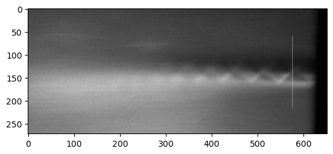

<!DOCTYPE html>
<html class="writer-html5" lang="es" data-content_root="./">
<head>
  <meta charset="utf-8" /><meta name="viewport" content="width=device-width, initial-scale=1" />

  <meta name="viewport" content="width=device-width, initial-scale=1.0" />
  <title>Clase 13: Introducción al paquete Scipy &mdash; documentación de Clases de Python - </title>
      <link rel="stylesheet" type="text/css" href="_static/pygments.css?v=0df96459" />
      <link rel="stylesheet" type="text/css" href="_static/css/theme.css?v=330c1f8c" />
      <link rel="stylesheet" type="text/css" href="_static/rtd_overrides.css?v=5bd222a9" />

  
  
        <script src="_static/jquery.js?v=5d32c60e"></script>
        <script src="_static/_sphinx_javascript_frameworks_compat.js?v=2cd50e6c"></script>
        <script src="_static/documentation_options.js?v=e2bb6099"></script>
        <script src="_static/doctools.js?v=9a2dae69"></script>
        <script src="_static/sphinx_highlight.js?v=dc90522c"></script>
        <script src="_static/translations.js?v=efdbd0b9"></script>
        <script async="async" src="https://cdn.jsdelivr.net/npm/mathjax@3/es5/tex-mml-chtml.js"></script>
    <script src="_static/js/theme.js"></script>
    <link rel="search" title="Búsqueda" href="search.html" />
    <link rel="next" title="Clase 14: Introducción a pandas" href="clase_14.html" />
    <link rel="prev" title="Clase 12: Más información sobre Numpy" href="clase_12.html" /> 
</head>

<body class="wy-body-for-nav"> 
  <div class="wy-grid-for-nav">
    <nav data-toggle="wy-nav-shift" class="wy-nav-side">
      <div class="wy-side-scroll">
        <div class="wy-side-nav-search" >

          
          
          <a href="index.html" class="icon icon-home">
            Clases de Python
              
          </a>
              <div class="version">
                IB - 2025
              </div>
<div role="search">
  <form id="rtd-search-form" class="wy-form" action="search.html" method="get">
    <input type="text" name="q" placeholder="Buscar documentos" aria-label="Buscar documentos" />
    <input type="hidden" name="check_keywords" value="yes" />
    <input type="hidden" name="area" value="default" />
  </form>
</div>
        </div><div class="wy-menu wy-menu-vertical" data-spy="affix" role="navigation" aria-label="Navigation menu">
              <p class="caption" role="heading"><span class="caption-text">Dictado de las clases</span></p>
<ul class="current">
<li class="toctree-l1"><a class="reference internal" href="clase_00.html">Clase 0: Introducción al lenguaje Python orientado a Ingenierías y Física</a></li>
<li class="toctree-l1"><a class="reference internal" href="clase_01.html">Clase 1: Introducción al lenguaje</a></li>
<li class="toctree-l1"><a class="reference internal" href="clase_02.html">Clase 2: Modularización y tipos compuestos</a></li>
<li class="toctree-l1"><a class="reference internal" href="clase_03.html">Clase 3: Tipos complejos y control de flujo</a></li>
<li class="toctree-l1"><a class="reference internal" href="clase_04.html">Clase 4: Funciones</a></li>
<li class="toctree-l1"><a class="reference internal" href="clase_05.html">Clase 5: Más características de Funciones</a></li>
<li class="toctree-l1"><a class="reference internal" href="clase_06.html">Clase 6: Objetos y administración de errores</a></li>
<li class="toctree-l1"><a class="reference internal" href="clase_07.html">Clase 7: Persistencia de datos y módulos de biblioteca standard</a></li>
<li class="toctree-l1"><a class="reference internal" href="clase_08.html">Clase 8: Más sobre objetos</a></li>
<li class="toctree-l1"><a class="reference internal" href="clase_09.html">Clase 9: Control de versiones y módulos</a></li>
<li class="toctree-l1"><a class="reference internal" href="clase_10.html">Clase 10: Introducción a Numpy y Matplotlib</a></li>
<li class="toctree-l1"><a class="reference internal" href="clase_11.html">Clase 11: Visualización</a></li>
<li class="toctree-l1"><a class="reference internal" href="clase_12.html">Clase 12: Más información sobre <strong>Numpy</strong></a></li>
<li class="toctree-l1 current"><a class="current reference internal" href="#">Clase 13: Introducción al paquete Scipy</a><ul>
<li class="toctree-l2"><a class="reference internal" href="#una-mirada-rapida-a-scipy">Una mirada rápida a Scipy</a></li>
<li class="toctree-l2"><a class="reference internal" href="#funciones-especiales">Funciones especiales</a><ul>
<li class="toctree-l3"><a class="reference internal" href="#funciones-de-bessel">Funciones de Bessel</a></li>
<li class="toctree-l3"><a class="reference internal" href="#funcion-error">Función Error</a></li>
<li class="toctree-l3"><a class="reference internal" href="#evaluacion-de-polinomios-ortogonales">Evaluación de polinomios ortogonales</a></li>
<li class="toctree-l3"><a class="reference internal" href="#factorial-permutaciones-y-combinaciones">Factorial, permutaciones y combinaciones</a></li>
</ul>
</li>
<li class="toctree-l2"><a class="reference internal" href="#integracion-numerica">Integración numérica</a><ul>
<li class="toctree-l3"><a class="reference internal" href="#ejemplo-de-funcion-fuertemente-oscilatoria">Ejemplo de función fuertemente oscilatoria</a></li>
<li class="toctree-l3"><a class="reference internal" href="#funciones-de-mas-de-una-variable">Funciones de más de una variable</a></li>
</ul>
</li>
<li class="toctree-l2"><a class="reference internal" href="#ejercicios-13-a">Ejercicios 13 (a)</a></li>
<li class="toctree-l2"><a class="reference internal" href="#interpolacion-y-ajuste-de-curvas-fiteo">Interpolación y ajuste de curvas (fiteo)</a><ul>
<li class="toctree-l3"><a class="reference internal" href="#interpolacion">Interpolación</a><ul>
<li class="toctree-l4"><a class="reference internal" href="#interpolacion-con-polinomios">Interpolación con polinomios</a></li>
<li class="toctree-l4"><a class="reference internal" href="#splines">Splines</a></li>
<li class="toctree-l4"><a class="reference internal" href="#b-splines">B-Splines</a></li>
<li class="toctree-l4"><a class="reference internal" href="#lines-are-guides-to-the-eyes">Lines are guides to the eyes</a></li>
<li class="toctree-l4"><a class="reference internal" href="#cantidades-derivadas-de-splines">Cantidades derivadas de <em>splines</em></a></li>
</ul>
</li>
<li class="toctree-l3"><a class="reference internal" href="#fiteos-de-datos">Fiteos de datos</a><ul>
<li class="toctree-l4"><a class="reference internal" href="#ajuste-con-polinomios">Ajuste con polinomios</a></li>
</ul>
</li>
</ul>
</li>
<li class="toctree-l2"><a class="reference internal" href="#ejercicios-13-b">Ejercicios 13 (b)</a><ul>
<li class="toctree-l3"><a class="reference internal" href="#fiteos-con-funciones-arbitrarias">Fiteos con funciones arbitrarias</a><ul>
<li class="toctree-l4"><a class="reference internal" href="#ejemplo-fiteo-de-picos">Ejemplo: Fiteo de picos</a></li>
</ul>
</li>
</ul>
</li>
<li class="toctree-l2"><a class="reference internal" href="#ejercicios-13-c">Ejercicios 13 (c)</a></li>
<li class="toctree-l2"><a class="reference internal" href="#trabajo-simple-con-imagenes">Trabajo simple con imágenes</a><ul>
<li class="toctree-l3"><a class="reference internal" href="#analisis-de-la-imagen">Análisis de la imagen</a><ul>
<li class="toctree-l4"><a class="reference internal" href="#histograma-de-intensidades">Histograma de intensidades</a></li>
<li class="toctree-l4"><a class="reference internal" href="#cortes-en-una-direccion">Cortes en una dirección</a></li>
</ul>
</li>
<li class="toctree-l3"><a class="reference internal" href="#trabajando-con-metadatos-de-la-imagen">Trabajando con metadatos de la imagen</a></li>
</ul>
</li>
<li class="toctree-l2"><a class="reference internal" href="#ejercicios-13-d">Ejercicios 13 (d)</a></li>
</ul>
</li>
<li class="toctree-l1"><a class="reference internal" href="clase_14.html">Clase 14: Introducción a <code class="docutils literal notranslate"><span class="pre">pandas</span></code></a></li>
<li class="toctree-l1"><a class="reference internal" href="clase_15.html">Clase 15: Más <code class="docutils literal notranslate"><span class="pre">pandas</span></code></a></li>
</ul>
<p class="caption" role="heading"><span class="caption-text">Ejercicios de Clase</span></p>
<ul>
<li class="toctree-l1"><a class="reference internal" href="ejercicios.html">Ejercicios</a></li>
</ul>
<ul>
<li class="toctree-l1"><a class="reference internal" href="entregas_ejercicios.html">Entrega de ejercicios</a></li>
<li class="toctree-l1"><a class="reference internal" href="programa_detalle.html">Programa Detallado</a></li>
</ul>

        </div>
      </div>
    </nav>

    <section data-toggle="wy-nav-shift" class="wy-nav-content-wrap"><nav class="wy-nav-top" aria-label="Mobile navigation menu" >
          <i data-toggle="wy-nav-top" class="fa fa-bars"></i>
          <a href="index.html">Clases de Python</a>
      </nav>

      <div class="wy-nav-content">
        <div class="rst-content">
          <div role="navigation" aria-label="Page navigation">
  <ul class="wy-breadcrumbs">
      <li><a href="index.html" class="icon icon-home" aria-label="Home"></a></li>
      <li class="breadcrumb-item active">Clase 13: Introducción al paquete Scipy</li>
      <li class="wy-breadcrumbs-aside">
            <a href="_sources/clase_13.rst.txt" rel="nofollow"> Ver código fuente de la página</a>
      </li>
  </ul>
  <hr/>
</div>
          <div role="main" class="document" itemscope="itemscope" itemtype="http://schema.org/Article">
           <div itemprop="articleBody">
             
  <section id="clase-13-introduccion-al-paquete-scipy">
<span id="clase-13"></span><h1>Clase 13: Introducción al paquete Scipy<a class="headerlink" href="#clase-13-introduccion-al-paquete-scipy" title="Link to this heading"></a></h1>
<hr class="docutils" />
<p>El paquete <strong>Scipy</strong> es una colección de algoritmos y funciones
construida sobre <strong>Numpy</strong> para facilitar cálculos y actividades
relacionadas con el trabajo técnico/científico.</p>
<section id="una-mirada-rapida-a-scipy">
<h2>Una mirada rápida a Scipy<a class="headerlink" href="#una-mirada-rapida-a-scipy" title="Link to this heading"></a></h2>
<p>La ayuda de scipy contiene (con <code class="docutils literal notranslate"><span class="pre">help(scipy)</span></code> entre otras cosas)</p>
<div class="highlight-default notranslate"><div class="highlight"><pre><span></span>Contents
--------
SciPy imports all the functions from the NumPy namespace, and in
addition provides:

Subpackages
-----------
Using any of these subpackages requires an explicit import.  For example,
``import scipy.cluster``.

::

 cluster                      --- Vector Quantization / Kmeans
 fftpack                      --- Discrete Fourier Transform algorithms
 integrate                    --- Integration routines
 interpolate                  --- Interpolation Tools
 io                           --- Data input and output
 linalg                       --- Linear algebra routines
 linalg.blas                  --- Wrappers to BLAS library
 linalg.lapack                --- Wrappers to LAPACK library
 misc                         --- Various utilities that don&#39;t have
                                  another home.
 ndimage                      --- n-dimensional image package
 odr                          --- Orthogonal Distance Regression
 optimize                     --- Optimization Tools
 signal                       --- Signal Processing Tools
 sparse                       --- Sparse Matrices
 sparse.linalg                --- Sparse Linear Algebra
 sparse.linalg.dsolve         --- Linear Solvers
 sparse.linalg.dsolve.umfpack --- :Interface to the UMFPACK library:
                                  Conjugate Gradient Method (LOBPCG)
 sparse.linalg.eigen          --- Sparse Eigenvalue Solvers
 sparse.linalg.eigen.lobpcg   --- Locally Optimal Block Preconditioned
                                  Conjugate Gradient Method (LOBPCG)
 spatial                      --- Spatial data structures and algorithms
 special                      --- Special functions
 stats                        --- Statistical Functions
</pre></div>
</div>
<p>Más información puede encontrarse en la <a class="reference external" href="https://docs.scipy.org/doc/scipy/reference">documentación oficial de
Scipy</a></p>
<div class="highlight-python notranslate"><div class="highlight"><pre><span></span><span class="kn">import</span> <span class="nn">numpy</span> <span class="k">as</span> <span class="nn">np</span>
<span class="kn">import</span> <span class="nn">matplotlib.pyplot</span> <span class="k">as</span> <span class="nn">plt</span>
</pre></div>
</div>
</section>
<section id="funciones-especiales">
<h2>Funciones especiales<a class="headerlink" href="#funciones-especiales" title="Link to this heading"></a></h2>
<p>En el submódulo <code class="docutils literal notranslate"><span class="pre">scipy.special</span></code> están definidas un número de funciones
especiales. Una lista general de las funciones definidas (De cada tipo
hay varias funciones) es:</p>
<ul class="simple">
<li><p>Airy functions</p></li>
<li><p>Elliptic Functions and Integrals</p></li>
<li><p>Bessel Functions</p></li>
<li><p>Struve Functions</p></li>
<li><p>Raw Statistical Functions</p></li>
<li><p>Information Theory Functions</p></li>
<li><p>Gamma and Related Functions</p></li>
<li><p>Error Function and Fresnel Integrals</p></li>
<li><p>Legendre Functions</p></li>
<li><p>Ellipsoidal Harmonics</p></li>
<li><p>Orthogonal polynomials</p></li>
<li><p>Hypergeometric Functions</p></li>
<li><p>Parabolic Cylinder Functions</p></li>
<li><p>Mathieu and Related Functions</p></li>
<li><p>Spheroidal Wave Functions</p></li>
<li><p>Kelvin Functions</p></li>
<li><p>Combinatorics</p></li>
<li><p>Other Special Functions</p></li>
<li><p>Convenience Functions</p></li>
</ul>
<div class="highlight-python notranslate"><div class="highlight"><pre><span></span><span class="kn">from</span> <span class="nn">scipy</span> <span class="kn">import</span> <span class="n">special</span>
</pre></div>
</div>
<section id="funciones-de-bessel">
<h3>Funciones de Bessel<a class="headerlink" href="#funciones-de-bessel" title="Link to this heading"></a></h3>
<p>Las funciones de Bessel son soluciones de la ecuación diferencial:</p>
<div class="math notranslate nohighlight">
\[x^2 \frac{d^2 y}{dx^2} + x \frac{dy}{dx} + (x^2 - \nu^2)y = 0 .\]</div>
<p>Para valores enteros de <span class="math notranslate nohighlight">\(\nu\)</span> se trata de una familia de funciones
que aparecen como soluciones de problemas de propagación de ondas en
problemas con simetría cilíndrica.</p>
<div class="highlight-python notranslate"><div class="highlight"><pre><span></span><span class="n">np</span><span class="o">.</span><span class="n">info</span><span class="p">(</span><span class="n">special</span><span class="o">.</span><span class="n">jv</span><span class="p">)</span>
</pre></div>
</div>
<pre class="literal-block">jv(x1, x2, /, out=None, <a href="#id1"><span class="problematic" id="id2">*</span></a>, where=True, casting='same_kind', order='K', dtype=None, subok=True[, signature, extobj])

jv(v, z, out=None)

Bessel function of the first kind of real order and complex argument.

Parameters
----------
v : array_like
    Order (float).
z : array_like
    Argument (float or complex).
out : ndarray, optional
    Optional output array for the function values

Returns
-------
J : scalar or ndarray
    Value of the Bessel function, <span class="math notranslate nohighlight">\(J_v(z)\)</span>.

See also
--------
jve : <span class="math notranslate nohighlight">\(J_v\)</span> with leading exponential behavior stripped off.
spherical_jn : spherical Bessel functions.
j0 : faster version of this function for order 0.
j1 : faster version of this function for order 1.

Notes
-----
For positive <cite>v</cite> values, the computation is carried out using the AMOS
<a href="#id18"><span class="problematic" id="id3">[1]_</span></a> <cite>zbesj</cite> routine, which exploits the connection to the modified
Bessel function <span class="math notranslate nohighlight">\(I_v\)</span>,

.. math::
    J_v(z) = exp(vpiimath/2) I_v(-imath z)qquad (Im z &gt; 0)

    J_v(z) = exp(-vpiimath/2) I_v(imath z)qquad (Im z &lt; 0)

For negative <cite>v</cite> values the formula,

.. math:: J_{-v}(z) = J_v(z) cos(pi v) - Y_v(z) sin(pi v)

is used, where <span class="math notranslate nohighlight">\(Y_v(z)\)</span> is the Bessel function of the second
kind, computed using the AMOS routine <cite>zbesy</cite>.  Note that the second
term is exactly zero for integer <cite>v</cite>; to improve accuracy the second
term is explicitly omitted for <cite>v</cite> values such that <cite>v = floor(v)</cite>.

Not to be confused with the spherical Bessel functions (see <cite>spherical_jn</cite>).

References
----------
.. [1] Donald E. Amos, &quot;AMOS, A Portable Package for Bessel Functions
       of a Complex Argument and Nonnegative Order&quot;,
       <a class="reference external" href="http://netlib.org/amos/">http://netlib.org/amos/</a>

Examples
--------
Evaluate the function of order 0 at one point.

&gt;&gt;&gt; from scipy.special import jv
&gt;&gt;&gt; jv(0, 1.)
0.7651976865579666

Evaluate the function at one point for different orders.

&gt;&gt;&gt; jv(0, 1.), jv(1, 1.), jv(1.5, 1.)
(0.7651976865579666, 0.44005058574493355, 0.24029783912342725)

The evaluation for different orders can be carried out in one call by
providing a list or NumPy array as argument for the <cite>v</cite> parameter:

&gt;&gt;&gt; jv([0, 1, 1.5], 1.)
array([0.76519769, 0.44005059, 0.24029784])

Evaluate the function at several points for order 0 by providing an
array for <cite>z</cite>.

&gt;&gt;&gt; import numpy as np
&gt;&gt;&gt; points = np.array([-2., 0., 3.])
&gt;&gt;&gt; jv(0, points)
array([ 0.22389078,  1.        , -0.26005195])

If <cite>z</cite> is an array, the order parameter <cite>v</cite> must be broadcastable to
the correct shape if different orders shall be computed in one call.
To calculate the orders 0 and 1 for an 1D array:

&gt;&gt;&gt; orders = np.array([[0], [1]])
&gt;&gt;&gt; orders.shape
(2, 1)

&gt;&gt;&gt; jv(orders, points)
array([[ 0.22389078,  1.        , -0.26005195],
       [-0.57672481,  0.        ,  0.33905896]])

Plot the functions of order 0 to 3 from -10 to 10.

&gt;&gt;&gt; import matplotlib.pyplot as plt
&gt;&gt;&gt; fig, ax = plt.subplots()
&gt;&gt;&gt; x = np.linspace(-10., 10., 1000)
&gt;&gt;&gt; for i in range(4):
...     ax.plot(x, jv(i, x), label=f'$J_{i!r}$')
&gt;&gt;&gt; ax.legend()
&gt;&gt;&gt; plt.show()</pre>
<div class="highlight-python notranslate"><div class="highlight"><pre><span></span><span class="n">np</span><span class="o">.</span><span class="n">info</span><span class="p">(</span><span class="n">special</span><span class="o">.</span><span class="n">jn_zeros</span><span class="p">)</span>
</pre></div>
</div>
<pre class="literal-block"> jn_zeros(n, nt)

Compute zeros of integer-order Bessel functions Jn.

Compute <cite>nt</cite> zeros of the Bessel functions <span class="math notranslate nohighlight">\(J_n(x)\)</span> on the
interval <span class="math notranslate nohighlight">\((0, \infty)\)</span>. The zeros are returned in ascending
order. Note that this interval excludes the zero at <span class="math notranslate nohighlight">\(x = 0\)</span>
that exists for <span class="math notranslate nohighlight">\(n &gt; 0\)</span>.

Parameters
----------
n : int
    Order of Bessel function
nt : int
    Number of zeros to return

Returns
-------
ndarray
    First <cite>nt</cite> zeros of the Bessel function.

See Also
--------
jv: Real-order Bessel functions of the first kind
jnp_zeros: Zeros of <span class="math notranslate nohighlight">\(Jn'\)</span>

References
----------
.. [1] Zhang, Shanjie and Jin, Jianming. &quot;Computation of Special
       Functions&quot;, John Wiley and Sons, 1996, chapter 5.
       <a class="reference external" href="https://people.sc.fsu.edu/~jburkardt/f77_src/special_functions/special_functions.html">https://people.sc.fsu.edu/~jburkardt/f77_src/special_functions/special_functions.html</a>

Examples
--------
Compute the first four positive roots of <span class="math notranslate nohighlight">\(J_3\)</span>.

&gt;&gt;&gt; from scipy.special import jn_zeros
&gt;&gt;&gt; jn_zeros(3, 4)
array([ 6.3801619 ,  9.76102313, 13.01520072, 16.22346616])

Plot <span class="math notranslate nohighlight">\(J_3\)</span> and its first four positive roots. Note
that the root located at 0 is not returned by <cite>jn_zeros</cite>.

&gt;&gt;&gt; import numpy as np
&gt;&gt;&gt; import matplotlib.pyplot as plt
&gt;&gt;&gt; from scipy.special import jn, jn_zeros
&gt;&gt;&gt; j3_roots = jn_zeros(3, 4)
&gt;&gt;&gt; xmax = 18
&gt;&gt;&gt; xmin = -1
&gt;&gt;&gt; x = np.linspace(xmin, xmax, 500)
&gt;&gt;&gt; fig, ax = plt.subplots()
&gt;&gt;&gt; ax.plot(x, jn(3, x), label=r'$J_3$')
&gt;&gt;&gt; ax.scatter(j3_roots, np.zeros((4, )), s=30, c='r',
...            label=r&quot;$J_3$_Zeros&quot;, zorder=5)
&gt;&gt;&gt; ax.scatter(0, 0, s=30, c='k',
...            label=r&quot;Root at 0&quot;, zorder=5)
&gt;&gt;&gt; ax.hlines(0, 0, xmax, color='k')
&gt;&gt;&gt; ax.set_xlim(xmin, xmax)
&gt;&gt;&gt; plt.legend()
&gt;&gt;&gt; plt.show()</pre>
<div class="highlight-python notranslate"><div class="highlight"><pre><span></span><span class="c1"># Ceros de la función de Bessel</span>
<span class="c1"># Los tres primeros valores de x en los cuales se anula la función de Bessel de orden 4.</span>
<span class="n">special</span><span class="o">.</span><span class="n">jn_zeros</span><span class="p">(</span><span class="mi">4</span><span class="p">,</span><span class="mi">3</span><span class="p">)</span>
</pre></div>
</div>
<div class="highlight-default notranslate"><div class="highlight"><pre><span></span><span class="n">array</span><span class="p">([</span> <span class="mf">7.58834243</span><span class="p">,</span> <span class="mf">11.06470949</span><span class="p">,</span> <span class="mf">14.37253667</span><span class="p">])</span>
</pre></div>
</div>
<div class="highlight-python notranslate"><div class="highlight"><pre><span></span><span class="n">x</span> <span class="o">=</span> <span class="n">np</span><span class="o">.</span><span class="n">linspace</span><span class="p">(</span><span class="mi">0</span><span class="p">,</span> <span class="mi">16</span><span class="p">,</span> <span class="mi">50</span><span class="p">)</span>
<span class="k">for</span> <span class="n">n</span> <span class="ow">in</span> <span class="nb">range</span><span class="p">(</span><span class="mi">0</span><span class="p">,</span><span class="mi">8</span><span class="p">,</span><span class="mi">2</span><span class="p">):</span>
  <span class="n">p</span><span class="o">=</span> <span class="n">plt</span><span class="o">.</span><span class="n">plot</span><span class="p">(</span><span class="n">x</span><span class="p">,</span> <span class="n">special</span><span class="o">.</span><span class="n">jn</span><span class="p">(</span><span class="n">n</span><span class="p">,</span> <span class="n">x</span><span class="p">),</span> <span class="n">label</span><span class="o">=</span><span class="s1">&#39;$J_</span><span class="si">{}</span><span class="s1">(x)$&#39;</span><span class="o">.</span><span class="n">format</span><span class="p">(</span><span class="n">n</span><span class="p">))</span>
  <span class="n">z</span> <span class="o">=</span> <span class="n">special</span><span class="o">.</span><span class="n">jn_zeros</span><span class="p">(</span><span class="n">n</span><span class="p">,</span> <span class="mi">6</span><span class="p">)</span>
  <span class="n">z</span> <span class="o">=</span> <span class="n">z</span><span class="p">[</span><span class="n">z</span> <span class="o">&lt;</span> <span class="mi">15</span><span class="p">]</span>
  <span class="n">plt</span><span class="o">.</span><span class="n">plot</span><span class="p">(</span><span class="n">z</span><span class="p">,</span> <span class="n">np</span><span class="o">.</span><span class="n">zeros</span><span class="p">(</span><span class="n">z</span><span class="o">.</span><span class="n">size</span><span class="p">),</span> <span class="s1">&#39;o&#39;</span><span class="p">,</span> <span class="n">color</span><span class="o">=</span> <span class="n">p</span><span class="p">[</span><span class="mi">0</span><span class="p">]</span><span class="o">.</span><span class="n">get_color</span><span class="p">())</span>

<span class="n">plt</span><span class="o">.</span><span class="n">legend</span><span class="p">(</span><span class="n">title</span><span class="o">=</span><span class="s1">&#39;Funciones $J_n$ de Bessel&#39;</span><span class="p">,</span> <span class="n">ncol</span><span class="o">=</span><span class="mi">2</span><span class="p">);</span>
<span class="n">plt</span><span class="o">.</span><span class="n">grid</span><span class="p">(</span><span class="kc">True</span><span class="p">)</span>
</pre></div>
</div>

<div class="highlight-python notranslate"><div class="highlight"><pre><span></span><span class="nb">type</span><span class="p">(</span><span class="n">p</span><span class="p">),</span> <span class="nb">type</span><span class="p">(</span><span class="n">p</span><span class="p">[</span><span class="mi">0</span><span class="p">])</span>
</pre></div>
</div>
<div class="highlight-default notranslate"><div class="highlight"><pre><span></span><span class="p">(</span><span class="nb">list</span><span class="p">,</span> <span class="n">matplotlib</span><span class="o">.</span><span class="n">lines</span><span class="o">.</span><span class="n">Line2D</span><span class="p">)</span>
</pre></div>
</div>
<div class="highlight-python notranslate"><div class="highlight"><pre><span></span><span class="c1"># jn es otro nombre para jv</span>
<span class="nb">print</span><span class="p">(</span><span class="n">special</span><span class="o">.</span><span class="n">jn</span> <span class="o">==</span> <span class="n">special</span><span class="o">.</span><span class="n">jv</span><span class="p">)</span>
<span class="nb">print</span><span class="p">(</span><span class="n">special</span><span class="o">.</span><span class="n">jn</span> <span class="ow">is</span> <span class="n">special</span><span class="o">.</span><span class="n">jv</span><span class="p">)</span>
</pre></div>
</div>
<div class="highlight-default notranslate"><div class="highlight"><pre><span></span><span class="kc">True</span>
<span class="kc">True</span>
</pre></div>
</div>
<p>Como vemos, hay funciones para calcular funciones de Bessel. Aquí
mostramos los órdenes enteros pero también se pueden utilizar órdenes
<span class="math notranslate nohighlight">\(\nu\)</span> reales. La lista de funciones de Bessel (puede obtenerse de
la ayuda sobre <code class="docutils literal notranslate"><span class="pre">scipy.special</span></code>) es:</p>
<ul class="simple">
<li><p>Bessel Functions</p></li>
<li><p>Zeros of Bessel Functions</p></li>
<li><p>Faster versions of common Bessel Functions</p></li>
<li><p>Integrals of Bessel Functions</p></li>
<li><p>Derivatives of Bessel Functions</p></li>
<li><p>Spherical Bessel Functions</p></li>
<li><p>Riccati-Bessel Functions</p></li>
</ul>
<p>Por ejemplo, podemos calcular las funciones esféricas de Bessel, que
aparecen en problemas con simetría esférica:</p>
<div class="highlight-python notranslate"><div class="highlight"><pre><span></span><span class="n">x</span> <span class="o">=</span> <span class="n">np</span><span class="o">.</span><span class="n">linspace</span><span class="p">(</span><span class="mi">0</span><span class="p">,</span> <span class="mi">16</span><span class="p">,</span> <span class="mi">50</span><span class="p">)</span>
<span class="k">for</span> <span class="n">n</span> <span class="ow">in</span> <span class="nb">range</span><span class="p">(</span><span class="mi">0</span><span class="p">,</span><span class="mi">7</span><span class="p">,</span><span class="mi">2</span><span class="p">):</span>
  <span class="n">p</span><span class="o">=</span> <span class="n">plt</span><span class="o">.</span><span class="n">plot</span><span class="p">(</span><span class="n">x</span><span class="p">,</span> <span class="n">special</span><span class="o">.</span><span class="n">spherical_jn</span><span class="p">(</span><span class="n">n</span><span class="p">,</span> <span class="n">x</span><span class="p">),</span> <span class="n">label</span><span class="o">=</span><span class="s1">&#39;$j_</span><span class="si">{}</span><span class="s1">(x)$&#39;</span><span class="o">.</span><span class="n">format</span><span class="p">(</span><span class="n">n</span><span class="p">))</span>
<span class="n">plt</span><span class="o">.</span><span class="n">legend</span><span class="p">(</span><span class="n">title</span><span class="o">=</span><span class="s1">&#39;Funciones esféricas de Bessel $j_n$&#39;</span><span class="p">,</span> <span class="n">ncol</span><span class="o">=</span><span class="mi">2</span><span class="p">);</span>
<span class="n">plt</span><span class="o">.</span><span class="n">grid</span><span class="p">(</span><span class="kc">True</span><span class="p">)</span>
</pre></div>
</div>

</section>
<section id="funcion-error">
<h3>Función Error<a class="headerlink" href="#funcion-error" title="Link to this heading"></a></h3>
<p>La función error es el resultado de integrar una función Gaussiana</p>
<div class="math notranslate nohighlight">
\[\operatorname{erf}z=\frac{2}{\sqrt{\pi}}\int_{0}^{z}e^{-t^{2}}\mathrm{d}t,\]</div>
<p>mientras que las integrales seno y coseno de Fresnel están definidas
por:</p>
<div class="math notranslate nohighlight">
\[\begin{split}\operatorname{ssa}= \int_{0}^{z} \sin(\pi t^{2}/2) \mathrm{d} t \\
\operatorname{csa}= \int_{0}^{z} \cos(\pi t^2/2) \mathrm{d} t\end{split}\]</div>
<div class="highlight-python notranslate"><div class="highlight"><pre><span></span><span class="n">x</span> <span class="o">=</span> <span class="n">np</span><span class="o">.</span><span class="n">linspace</span><span class="p">(</span><span class="o">-</span><span class="mi">3</span><span class="p">,</span> <span class="mi">3</span><span class="p">,</span><span class="mi">100</span><span class="p">)</span>
<span class="n">f</span> <span class="o">=</span> <span class="n">special</span><span class="o">.</span><span class="n">fresnel</span><span class="p">(</span><span class="n">x</span><span class="p">)</span>
<span class="n">plt</span><span class="o">.</span><span class="n">plot</span><span class="p">(</span><span class="n">x</span><span class="p">,</span> <span class="n">special</span><span class="o">.</span><span class="n">erf</span><span class="p">(</span><span class="n">x</span><span class="p">),</span><span class="s1">&#39;-&#39;</span><span class="p">,</span> <span class="n">label</span><span class="o">=</span><span class="sa">r</span><span class="s1">&#39;$\mathrm</span><span class="si">{erf}</span><span class="s1">(x)$&#39;</span><span class="p">)</span>
<span class="n">plt</span><span class="o">.</span><span class="n">plot</span><span class="p">(</span><span class="n">x</span><span class="p">,</span> <span class="n">f</span><span class="p">[</span><span class="mi">0</span><span class="p">],</span><span class="s1">&#39;-&#39;</span><span class="p">,</span> <span class="n">label</span><span class="o">=</span><span class="sa">r</span><span class="s1">&#39;$\mathrm</span><span class="si">{ssa}</span><span class="s1">(x)$&#39;</span><span class="p">)</span>
<span class="n">plt</span><span class="o">.</span><span class="n">plot</span><span class="p">(</span><span class="n">x</span><span class="p">,</span> <span class="n">f</span><span class="p">[</span><span class="mi">1</span><span class="p">],</span><span class="s1">&#39;-&#39;</span><span class="p">,</span> <span class="n">label</span><span class="o">=</span><span class="sa">r</span><span class="s1">&#39;$\mathrm</span><span class="si">{csa}</span><span class="s1">(x)$&#39;</span><span class="p">)</span>
<span class="n">plt</span><span class="o">.</span><span class="n">xlabel</span><span class="p">(</span><span class="s1">&#39;$x$&#39;</span><span class="p">)</span>
<span class="n">plt</span><span class="o">.</span><span class="n">ylabel</span><span class="p">(</span><span class="s1">&#39;$f(x)$&#39;</span><span class="p">)</span>
<span class="n">plt</span><span class="o">.</span><span class="n">legend</span><span class="p">(</span><span class="n">loc</span><span class="o">=</span><span class="s1">&#39;best&#39;</span><span class="p">)</span>
<span class="n">plt</span><span class="o">.</span><span class="n">grid</span><span class="p">(</span><span class="kc">True</span><span class="p">)</span>
</pre></div>
</div>

</section>
<section id="evaluacion-de-polinomios-ortogonales">
<h3>Evaluación de polinomios ortogonales<a class="headerlink" href="#evaluacion-de-polinomios-ortogonales" title="Link to this heading"></a></h3>
<p><code class="docutils literal notranslate"><span class="pre">Scipy.special</span></code> tiene funciones para evaluar eficientemente polinomios
ortogonales</p>
<p>Por ejemplo si queremos, evaluar los polinomios de Laguerre, solución de
la ecuación diferencial:</p>
<div class="math notranslate nohighlight">
\[x\frac{d^2}{dx^2}L_n + (1 - x)\frac{d}{dx}L_n + nL_n = 0\]</div>
<div class="highlight-python notranslate"><div class="highlight"><pre><span></span><span class="n">x</span> <span class="o">=</span> <span class="n">np</span><span class="o">.</span><span class="n">linspace</span><span class="p">(</span><span class="o">-</span><span class="mi">1</span><span class="p">,</span> <span class="mi">1</span><span class="p">,</span><span class="mi">100</span><span class="p">)</span>
<span class="k">for</span> <span class="n">n</span> <span class="ow">in</span> <span class="nb">range</span><span class="p">(</span><span class="mi">2</span><span class="p">,</span><span class="mi">6</span><span class="p">):</span>
  <span class="n">plt</span><span class="o">.</span><span class="n">plot</span><span class="p">(</span><span class="n">x</span><span class="p">,</span> <span class="n">special</span><span class="o">.</span><span class="n">eval_laguerre</span><span class="p">(</span><span class="n">n</span><span class="p">,</span> <span class="n">x</span><span class="p">),</span><span class="s1">&#39;-&#39;</span><span class="p">,</span> <span class="n">label</span><span class="o">=</span><span class="sa">r</span><span class="s1">&#39;$n=</span><span class="si">{}</span><span class="s1">$&#39;</span><span class="o">.</span><span class="n">format</span><span class="p">(</span><span class="n">n</span><span class="p">))</span>
<span class="n">plt</span><span class="o">.</span><span class="n">xlabel</span><span class="p">(</span><span class="s1">&#39;$x$&#39;</span><span class="p">)</span>
<span class="n">plt</span><span class="o">.</span><span class="n">ylabel</span><span class="p">(</span><span class="s1">&#39;$f(x)$&#39;</span><span class="p">)</span>
<span class="n">plt</span><span class="o">.</span><span class="n">legend</span><span class="p">(</span><span class="n">loc</span><span class="o">=</span><span class="s1">&#39;best&#39;</span><span class="p">,</span> <span class="n">ncol</span><span class="o">=</span><span class="mi">2</span><span class="p">)</span>
<span class="n">plt</span><span class="o">.</span><span class="n">grid</span><span class="p">(</span><span class="kc">True</span><span class="p">)</span>
</pre></div>
</div>

<p>Los polinomios de Chebyshev son solución de</p>
<div class="math notranslate nohighlight">
\[(1 - x^2)\frac{d^2}{dx^2}T_n - x\frac{d}{dx}T_n + n^2T_n = 0\]</div>
<div class="highlight-python notranslate"><div class="highlight"><pre><span></span><span class="n">x</span> <span class="o">=</span> <span class="n">np</span><span class="o">.</span><span class="n">linspace</span><span class="p">(</span><span class="o">-</span><span class="mi">1</span><span class="p">,</span> <span class="mi">1</span><span class="p">,</span><span class="mi">100</span><span class="p">)</span>
<span class="k">for</span> <span class="n">n</span> <span class="ow">in</span> <span class="nb">range</span><span class="p">(</span><span class="mi">2</span><span class="p">,</span><span class="mi">6</span><span class="p">):</span>
  <span class="n">plt</span><span class="o">.</span><span class="n">plot</span><span class="p">(</span><span class="n">x</span><span class="p">,</span> <span class="n">special</span><span class="o">.</span><span class="n">eval_chebyt</span><span class="p">(</span><span class="n">n</span><span class="p">,</span> <span class="n">x</span><span class="p">),</span><span class="s1">&#39;-&#39;</span><span class="p">,</span> <span class="n">label</span><span class="o">=</span><span class="sa">f</span><span class="s1">&#39;$n=</span><span class="si">{</span><span class="n">n</span><span class="si">}</span><span class="s1">$&#39;</span><span class="p">)</span>
<span class="n">plt</span><span class="o">.</span><span class="n">xlabel</span><span class="p">(</span><span class="s1">&#39;$x$&#39;</span><span class="p">)</span>
<span class="n">plt</span><span class="o">.</span><span class="n">ylabel</span><span class="p">(</span><span class="s1">&#39;$f(x)$&#39;</span><span class="p">)</span>
<span class="n">plt</span><span class="o">.</span><span class="n">legend</span><span class="p">(</span><span class="n">loc</span><span class="o">=</span><span class="s1">&#39;best&#39;</span><span class="p">,</span> <span class="n">ncol</span><span class="o">=</span><span class="mi">2</span><span class="p">)</span>
<span class="n">plt</span><span class="o">.</span><span class="n">ylim</span><span class="p">((</span><span class="o">-</span><span class="mf">1.1</span><span class="p">,</span><span class="mi">2</span><span class="p">))</span>
<span class="n">plt</span><span class="o">.</span><span class="n">grid</span><span class="p">(</span><span class="kc">True</span><span class="p">)</span>
</pre></div>
</div>

</section>
<section id="factorial-permutaciones-y-combinaciones">
<h3>Factorial, permutaciones y combinaciones<a class="headerlink" href="#factorial-permutaciones-y-combinaciones" title="Link to this heading"></a></h3>
<p>Los números factorial (N!) y doble factorial (N!!) pueden calcularse
para un valor de N o un array, mediante:</p>
<div class="highlight-python notranslate"><div class="highlight"><pre><span></span><span class="n">N</span> <span class="o">=</span> <span class="n">np</span><span class="o">.</span><span class="n">array</span><span class="p">([</span><span class="mi">3</span><span class="p">,</span><span class="mi">6</span><span class="p">,</span><span class="mi">8</span><span class="p">])</span>
<span class="nb">print</span><span class="p">(</span><span class="sa">f</span><span class="s2">&quot;</span><span class="si">{</span><span class="n">N</span><span class="si">}</span><span class="s2">! = </span><span class="si">{</span><span class="n">special</span><span class="o">.</span><span class="n">factorial</span><span class="p">(</span><span class="n">N</span><span class="p">)</span><span class="si">}</span><span class="s2">&quot;</span><span class="p">)</span>
<span class="nb">print</span><span class="p">(</span><span class="sa">f</span><span class="s2">&quot;</span><span class="si">{</span><span class="n">N</span><span class="si">}</span><span class="s2">!! = </span><span class="si">{</span><span class="n">special</span><span class="o">.</span><span class="n">factorial2</span><span class="p">(</span><span class="n">N</span><span class="p">)</span><span class="si">}</span><span class="s2">&quot;</span><span class="p">)</span>
</pre></div>
</div>
<div class="highlight-default notranslate"><div class="highlight"><pre><span></span>[3 6 8]! = [6.000e+00 7.200e+02 4.032e+04]
[3 6 8]!! = [  3.  48. 384.]
</pre></div>
</div>
<p>Hay funciones para calcular varias funciones relacionadas con
permutaciones y combinatoria</p>
<p>La función <code class="docutils literal notranslate"><span class="pre">comb()</span></code> da el número de maneras de elegir <code class="docutils literal notranslate"><span class="pre">k</span></code> de un
total de <code class="docutils literal notranslate"><span class="pre">N</span></code> elementos. Sin repeticiones está dada por:</p>
<div class="math notranslate nohighlight">
\[\frac{N!}{k! (N-k)!}\]</div>
<p>mientras que si cada elemento puede repetirse, la fórmula es:</p>
<div class="math notranslate nohighlight">
\[\frac{(N+k-1)!}{k! (N-1)!}\]</div>
<p>Por ejemplo, las combinaciones de <span class="math notranslate nohighlight">\(N=3\)</span>
<span class="math notranslate nohighlight">\(\{1,2,3\}\)</span>elementos tomados de a <span class="math notranslate nohighlight">\(k=2\)</span>, sin repeticiones,
será <code class="docutils literal notranslate"><span class="pre">comb(3,2)=3</span></code></p>
<div class="math notranslate nohighlight">
\[C(\{1,2,3\},2) = 12, 13, 23\]</div>
<p>Las combinaciones de <span class="math notranslate nohighlight">\(N=3\)</span> elementos <span class="math notranslate nohighlight">\(\{1,2,3\}\)</span> tomados de
a <span class="math notranslate nohighlight">\(k=2\)</span>, con repeticiones, será <code class="docutils literal notranslate"><span class="pre">comb(3,2)=6</span></code></p>
<div class="math notranslate nohighlight">
\[C(\{1,2,3\},2) = 12, 13, 23, 11, 22, 33\]</div>
<div class="highlight-python notranslate"><div class="highlight"><pre><span></span><span class="n">N</span> <span class="o">=</span> <span class="mi">5</span>
</pre></div>
</div>
<div class="highlight-python notranslate"><div class="highlight"><pre><span></span><span class="n">special</span><span class="o">.</span><span class="n">comb</span><span class="p">(</span><span class="n">N</span><span class="p">,</span><span class="mi">3</span><span class="p">)</span>
</pre></div>
</div>
<div class="highlight-default notranslate"><div class="highlight"><pre><span></span><span class="mf">10.0</span>
</pre></div>
</div>
<div class="highlight-python notranslate"><div class="highlight"><pre><span></span><span class="c1"># Si usamos exact=True realiza el cálculo en forma exacta ;)</span>
<span class="n">special</span><span class="o">.</span><span class="n">comb</span><span class="p">(</span><span class="n">N</span><span class="p">,</span><span class="mi">3</span><span class="p">,</span><span class="n">exact</span><span class="o">=</span><span class="kc">True</span><span class="p">)</span>
</pre></div>
</div>
<div class="highlight-default notranslate"><div class="highlight"><pre><span></span><span class="mi">10</span>
</pre></div>
</div>
<p>Para realizar el cálculo del número de permutaciones o combinaciones
tomados de a distintos valores podemos utilizar un array como argumento
<span class="math notranslate nohighlight">\(k\)</span></p>
<div class="highlight-python notranslate"><div class="highlight"><pre><span></span><span class="n">k</span> <span class="o">=</span> <span class="n">np</span><span class="o">.</span><span class="n">arange</span><span class="p">(</span><span class="mi">2</span><span class="p">,</span><span class="mi">4</span><span class="p">)</span>
</pre></div>
</div>
<div class="highlight-python notranslate"><div class="highlight"><pre><span></span><span class="n">special</span><span class="o">.</span><span class="n">comb</span><span class="p">(</span><span class="n">N</span><span class="p">,</span> <span class="n">k</span><span class="p">)</span>
</pre></div>
</div>
<div class="highlight-default notranslate"><div class="highlight"><pre><span></span><span class="n">array</span><span class="p">([</span><span class="mf">10.</span><span class="p">,</span> <span class="mf">10.</span><span class="p">])</span>
</pre></div>
</div>
<div class="highlight-python notranslate"><div class="highlight"><pre><span></span><span class="n">special</span><span class="o">.</span><span class="n">comb</span><span class="p">(</span><span class="n">N</span><span class="p">,</span><span class="n">k</span><span class="p">,</span> <span class="n">repetition</span><span class="o">=</span><span class="kc">True</span><span class="p">)</span>
</pre></div>
</div>
<div class="highlight-default notranslate"><div class="highlight"><pre><span></span><span class="n">array</span><span class="p">([</span><span class="mf">15.</span><span class="p">,</span> <span class="mf">35.</span><span class="p">])</span>
</pre></div>
</div>
<p>La función <code class="docutils literal notranslate"><span class="pre">perm()</span></code> da el número de maneras de permutar <code class="docutils literal notranslate"><span class="pre">k</span></code>
elementos de un total de <code class="docutils literal notranslate"><span class="pre">N</span></code> elementos. Sin repeticiones está dada
por:</p>
<div class="math notranslate nohighlight">
\[\frac{N!}{(N-k)!}\]</div>
<p>Por ejemplo, las permutaciones de <span class="math notranslate nohighlight">\(N=3\)</span> elementos
<span class="math notranslate nohighlight">\(\{1,2,3\}\)</span> tomados de a <span class="math notranslate nohighlight">\(k=2\)</span> será <code class="docutils literal notranslate"><span class="pre">perm(3,2)=6</span></code> y
consiste de las permutaciones:</p>
<div class="math notranslate nohighlight">
\[P(\{1,2,3\},2) = 12, 13, 21, 23, 31, 32\]</div>
<div class="highlight-python notranslate"><div class="highlight"><pre><span></span><span class="n">special</span><span class="o">.</span><span class="n">perm</span><span class="p">(</span><span class="mi">10</span><span class="p">,</span><span class="n">k</span><span class="p">)</span>
</pre></div>
</div>
<div class="highlight-default notranslate"><div class="highlight"><pre><span></span><span class="n">array</span><span class="p">([</span> <span class="mf">90.</span><span class="p">,</span> <span class="mf">720.</span><span class="p">])</span>
</pre></div>
</div>
<p>cuyos valores corresponden a:</p>
<div class="math notranslate nohighlight">
\[P(10,2) = \frac{10!}{(10-2)!} = 10 \cdot 9\]</div>
<div class="math notranslate nohighlight">
\[P(10,3) = \frac{10!}{(10-3)!} = 10 \cdot 9 \cdot 8\]</div>
</section>
</section>
<section id="integracion-numerica">
<h2>Integración numérica<a class="headerlink" href="#integracion-numerica" title="Link to this heading"></a></h2>
<p>Scipy tiene rutinas para integrar numéricamente funciones o tablas de
datos. Por ejemplo para integrar funciones en la forma:</p>
<div class="math notranslate nohighlight">
\[I= \int_{a}^{b} f(x)\, dx\]</div>
<p>la función más utilizada es <code class="docutils literal notranslate"><span class="pre">quad</span></code>, que llama a distintas rutinas del
paquete <strong>QUADPACK</strong> dependiendo de los argumentos que toma. Entre los
aspectos más notables está la posibilidad de elegir una función de peso
entre un conjunto definido de funciones, y la posibilidad de elegir un
dominio de integración finito o infinito.</p>
<div class="highlight-python notranslate"><div class="highlight"><pre><span></span><span class="kn">from</span> <span class="nn">scipy</span> <span class="kn">import</span> <span class="n">integrate</span>
</pre></div>
</div>
<div class="highlight-python notranslate"><div class="highlight"><pre><span></span><span class="n">x</span> <span class="o">=</span> <span class="n">np</span><span class="o">.</span><span class="n">linspace</span><span class="p">(</span><span class="o">-</span><span class="mf">10.</span><span class="p">,</span> <span class="mi">10</span><span class="p">,</span> <span class="mi">100</span><span class="p">)</span>
</pre></div>
</div>
<div class="highlight-python notranslate"><div class="highlight"><pre><span></span><span class="k">def</span> <span class="nf">f1</span><span class="p">(</span><span class="n">x</span><span class="p">):</span>
  <span class="k">return</span> <span class="n">np</span><span class="o">.</span><span class="n">sin</span><span class="p">(</span><span class="n">x</span><span class="p">)</span><span class="o">*</span><span class="n">np</span><span class="o">.</span><span class="n">exp</span><span class="p">(</span><span class="o">-</span><span class="n">np</span><span class="o">.</span><span class="n">square</span><span class="p">(</span><span class="n">x</span><span class="o">+</span><span class="mi">1</span><span class="p">)</span><span class="o">/</span><span class="mi">10</span><span class="p">)</span>
</pre></div>
</div>
<div class="highlight-python notranslate"><div class="highlight"><pre><span></span><span class="n">plt</span><span class="o">.</span><span class="n">plot</span><span class="p">(</span><span class="n">x</span><span class="p">,</span><span class="n">f1</span><span class="p">(</span><span class="n">x</span><span class="p">))</span>
</pre></div>
</div>
<div class="highlight-default notranslate"><div class="highlight"><pre><span></span><span class="p">[</span><span class="o">&lt;</span><span class="n">matplotlib</span><span class="o">.</span><span class="n">lines</span><span class="o">.</span><span class="n">Line2D</span> <span class="n">at</span> <span class="mh">0x7fb48256c550</span><span class="o">&gt;</span><span class="p">]</span>
</pre></div>
</div>

<div class="highlight-python notranslate"><div class="highlight"><pre><span></span><span class="n">integrate</span><span class="o">.</span><span class="n">quad</span><span class="p">(</span><span class="n">f1</span><span class="p">,</span><span class="o">-</span><span class="mi">10</span><span class="p">,</span><span class="mi">10</span><span class="p">)</span>
</pre></div>
</div>
<div class="highlight-default notranslate"><div class="highlight"><pre><span></span><span class="p">(</span><span class="o">-</span><span class="mf">0.3872712191192437</span><span class="p">,</span> <span class="mf">7.90260497896011e-13</span><span class="p">)</span>
</pre></div>
</div>
<div class="highlight-python notranslate"><div class="highlight"><pre><span></span><span class="n">np</span><span class="o">.</span><span class="n">info</span><span class="p">(</span><span class="n">integrate</span><span class="o">.</span><span class="n">quad</span><span class="p">)</span>
</pre></div>
</div>
<pre class="literal-block"> quad(func, a, b, args=(), full_output=0, epsabs=1.49e-08, epsrel=1.49e-08,
      limit=50, points=None, weight=None, wvar=None, wopts=None, maxp1=50,
      limlst=50, complex_func=False)

Compute a definite integral.

Integrate func from <cite>a</cite> to <cite>b</cite> (possibly infinite interval) using a
technique from the Fortran library QUADPACK.

Parameters
----------
func : {function, scipy.LowLevelCallable}
    A Python function or method to integrate. If <cite>func</cite> takes many
    arguments, it is integrated along the axis corresponding to the
    first argument.

    If the user desires improved integration performance, then <cite>f</cite> may
    be a <cite>scipy.LowLevelCallable</cite> with one of the signatures::

        double func(double x)
        double func(double x, void <em>user_data)
        double func(int n, double *xx)
        double func(int n, double *xx, void *user_data)

    The ``user_data`` is the data contained in the `scipy.LowLevelCallable`.
    In the call forms with ``xx``,  ``n`` is the length of the ``xx``
    array which contains ``xx[0] == x`` and the rest of the items are
    numbers contained in the ``args`` argument of quad.

    In addition, certain ctypes call signatures are supported for
    backward compatibility, but those should not be used in new code.
a : float
    Lower limit of integration (use -numpy.inf for -infinity).
b : float
    Upper limit of integration (use numpy.inf for +infinity).
args : tuple, optional
    Extra arguments to pass to `func`.
full_output : int, optional
    Non-zero to return a dictionary of integration information.
    If non-zero, warning messages are also suppressed and the
    message is appended to the output tuple.
complex_func : bool, optional
    Indicate if the function's (`func`) return type is real
    (``complex_func=False``: default) or complex (``complex_func=True``).
    In both cases, the function's argument is real.
    If full_output is also non-zero, the `infodict`, `message`, and
    `explain` for the real and complex components are returned in
    a dictionary with keys &quot;real output&quot; and &quot;imag output&quot;.

Returns
-------
y : float
    The integral of func from `a` to `b`.
abserr : float
    An estimate of the absolute error in the result.
infodict : dict
    A dictionary containing additional information.
message
    A convergence message.
explain
    Appended only with 'cos' or 'sin' weighting and infinite
    integration limits, it contains an explanation of the codes in
    infodict['ierlst']

Other Parameters
----------------
epsabs : float or int, optional
    Absolute error tolerance. Default is 1.49e-8. `quad` tries to obtain
    an accuracy of ``abs(i-result) &lt;= max(epsabs, epsrel*abs(i))``
    where ``i`` = integral of `func` from `a` to `b`, and ``result`` is the
    numerical approximation. See `epsrel` below.
epsrel : float or int, optional
    Relative error tolerance. Default is 1.49e-8.
    If ``epsabs &lt;= 0``, `epsrel` must be greater than both 5e-29
    and ``50 * (machine epsilon)``. See `epsabs` above.
limit : float or int, optional
    An upper bound on the number of subintervals used in the adaptive
    algorithm.
points : (sequence of floats,ints), optional
    A sequence of break points in the bounded integration interval
    where local difficulties of the integrand may occur (e.g.,
    singularities, discontinuities). The sequence does not have
    to be sorted. Note that this option cannot be used in conjunction
    with ``weight``.
weight : float or int, optional
    String indicating weighting function. Full explanation for this
    and the remaining arguments can be found below.
wvar : optional
    Variables for use with weighting functions.
wopts : optional
    Optional input for reusing Chebyshev moments.
maxp1 : float or int, optional
    An upper bound on the number of Chebyshev moments.
limlst : int, optional
    Upper bound on the number of cycles (&gt;=3) for use with a sinusoidal
    weighting and an infinite end-point.

See Also
--------
dblquad : double integral
tplquad : triple integral
nquad : n-dimensional integrals (uses `quad` recursively)
fixed_quad : fixed-order Gaussian quadrature
quadrature : adaptive Gaussian quadrature
odeint : ODE integrator
ode : ODE integrator
simpson : integrator for sampled data
romb : integrator for sampled data
scipy.special : for coefficients and roots of orthogonal polynomials

Notes
-----
For valid results, the integral must converge; behavior for divergent
integrals is not guaranteed.

**Extra information for quad() inputs and outputs*</em>

If full_output is non-zero, then the third output argument
(infodict) is a dictionary with entries as tabulated below. For
infinite limits, the range is transformed to (0,1) and the
optional outputs are given with respect to this transformed range.
Let M be the input argument limit and let K be infodict['last'].
The entries are:

'neval'
    The number of function evaluations.
'last'
    The number, K, of subintervals produced in the subdivision process.
'alist'
    A rank-1 array of length M, the first K elements of which are the
    left end points of the subintervals in the partition of the
    integration range.
'blist'
    A rank-1 array of length M, the first K elements of which are the
    right end points of the subintervals.
'rlist'
    A rank-1 array of length M, the first K elements of which are the
    integral approximations on the subintervals.
'elist'
    A rank-1 array of length M, the first K elements of which are the
    moduli of the absolute error estimates on the subintervals.
'iord'
    A rank-1 integer array of length M, the first L elements of
    which are pointers to the error estimates over the subintervals
    with <code class="docutils literal notranslate"><span class="pre">L=K</span></code> if <code class="docutils literal notranslate"><span class="pre">K&lt;=M/2+2</span></code> or <code class="docutils literal notranslate"><span class="pre">L=M+1-K</span></code> otherwise. Let I be the
    sequence <code class="docutils literal notranslate"><span class="pre">infodict['iord']</span></code> and let E be the sequence
    <code class="docutils literal notranslate"><span class="pre">infodict['elist']</span></code>.  Then <code class="docutils literal notranslate"><span class="pre">E[I[1]],</span> <span class="pre">...,</span> <span class="pre">E[I[L]]</span></code> forms a
    decreasing sequence.

If the input argument points is provided (i.e., it is not None),
the following additional outputs are placed in the output
dictionary. Assume the points sequence is of length P.

'pts'
    A rank-1 array of length P+2 containing the integration limits
    and the break points of the intervals in ascending order.
    This is an array giving the subintervals over which integration
    will occur.
'level'
    A rank-1 integer array of length M (=limit), containing the
    subdivision levels of the subintervals, i.e., if (aa,bb) is a
    subinterval of <code class="docutils literal notranslate"><span class="pre">(pts[1],</span> <span class="pre">pts[2])</span></code> where <code class="docutils literal notranslate"><span class="pre">pts[0]</span></code> and <code class="docutils literal notranslate"><span class="pre">pts[2]</span></code>
    are adjacent elements of <code class="docutils literal notranslate"><span class="pre">infodict['pts']</span></code>, then (aa,bb) has level l
    if <code class="docutils literal notranslate"><span class="pre">|bb-aa|</span> <span class="pre">=</span> <span class="pre">|pts[2]-pts[1]|</span> <span class="pre">*</span> <span class="pre">2**(-l)</span></code>.
'ndin'
    A rank-1 integer array of length P+2. After the first integration
    over the intervals (pts[1], pts[2]), the error estimates over some
    of the intervals may have been increased artificially in order to
    put their subdivision forward. This array has ones in slots
    corresponding to the subintervals for which this happens.

<strong>Weighting the integrand</strong>

The input variables, <em>weight</em> and <em>wvar</em>, are used to weight the
integrand by a select list of functions. Different integration
methods are used to compute the integral with these weighting
functions, and these do not support specifying break points. The
possible values of weight and the corresponding weighting functions are.

==========  ===================================   =====================
<code class="docutils literal notranslate"><span class="pre">weight</span></code>  Weight function used                  <code class="docutils literal notranslate"><span class="pre">wvar</span></code>
==========  ===================================   =====================
'cos'       cos(w*x)                              wvar = w
'sin'       sin(w*x)                              wvar = w
'alg'       g(x) = ((x-a)**alpha)*((b-x)**beta)   wvar = (alpha, beta)
'alg-loga'  g(x)*log(x-a)                         wvar = (alpha, beta)
'alg-logb'  g(x)*log(b-x)                         wvar = (alpha, beta)
'alg-log'   g(x)*log(x-a)*log(b-x)                wvar = (alpha, beta)
'cauchy'    1/(x-c)                               wvar = c
==========  ===================================   =====================

wvar holds the parameter w, (alpha, beta), or c depending on the weight
selected. In these expressions, a and b are the integration limits.

For the 'cos' and 'sin' weighting, additional inputs and outputs are
available.

For finite integration limits, the integration is performed using a
Clenshaw-Curtis method which uses Chebyshev moments. For repeated
calculations, these moments are saved in the output dictionary:

'momcom'
    The maximum level of Chebyshev moments that have been computed,
    i.e., if <code class="docutils literal notranslate"><span class="pre">M_c</span></code> is <code class="docutils literal notranslate"><span class="pre">infodict['momcom']</span></code> then the moments have been
    computed for intervals of length <code class="docutils literal notranslate"><span class="pre">|b-a|</span> <span class="pre">*</span> <span class="pre">2**(-l)</span></code>,
    <code class="docutils literal notranslate"><span class="pre">l=0,1,...,M_c</span></code>.
'nnlog'
    A rank-1 integer array of length M(=limit), containing the
    subdivision levels of the subintervals, i.e., an element of this
    array is equal to l if the corresponding subinterval is
    <code class="docutils literal notranslate"><span class="pre">|b-a|*</span> <span class="pre">2**(-l)</span></code>.
'chebmo'
    A rank-2 array of shape (25, maxp1) containing the computed
    Chebyshev moments. These can be passed on to an integration
    over the same interval by passing this array as the second
    element of the sequence wopts and passing infodict['momcom'] as
    the first element.

If one of the integration limits is infinite, then a Fourier integral is
computed (assuming w neq 0). If full_output is 1 and a numerical error
is encountered, besides the error message attached to the output tuple,
a dictionary is also appended to the output tuple which translates the
error codes in the array <code class="docutils literal notranslate"><span class="pre">info['ierlst']</span></code> to English messages. The
output information dictionary contains the following entries instead of
'last', 'alist', 'blist', 'rlist', and 'elist':

'lst'
    The number of subintervals needed for the integration (call it <code class="docutils literal notranslate"><span class="pre">K_f</span></code>).
'rslst'
    A rank-1 array of length M_f=limlst, whose first <code class="docutils literal notranslate"><span class="pre">K_f</span></code> elements
    contain the integral contribution over the interval
    <code class="docutils literal notranslate"><span class="pre">(a+(k-1)c,</span> <span class="pre">a+kc)</span></code> where <code class="docutils literal notranslate"><span class="pre">c</span> <span class="pre">=</span> <span class="pre">(2*floor(|w|)</span> <span class="pre">+</span> <span class="pre">1)</span> <span class="pre">*</span> <span class="pre">pi</span> <span class="pre">/</span> <span class="pre">|w|</span></code>
    and <code class="docutils literal notranslate"><span class="pre">k=1,2,...,K_f</span></code>.
'erlst'
    A rank-1 array of length <code class="docutils literal notranslate"><span class="pre">M_f</span></code> containing the error estimate
    corresponding to the interval in the same position in
    <code class="docutils literal notranslate"><span class="pre">infodict['rslist']</span></code>.
'ierlst'
    A rank-1 integer array of length <code class="docutils literal notranslate"><span class="pre">M_f</span></code> containing an error flag
    corresponding to the interval in the same position in
    <code class="docutils literal notranslate"><span class="pre">infodict['rslist']</span></code>.  See the explanation dictionary (last entry
    in the output tuple) for the meaning of the codes.


<strong>Details of QUADPACK level routines</strong>

<cite>quad</cite> calls routines from the FORTRAN library QUADPACK. This section
provides details on the conditions for each routine to be called and a
short description of each routine. The routine called depends on
<cite>weight</cite>, <cite>points</cite> and the integration limits <cite>a</cite> and <cite>b</cite>.

================  ==============  ==========  =====================
QUADPACK routine  <cite>weight</cite>        <cite>points</cite>    infinite bounds
================  ==============  ==========  =====================
qagse             None            No          No
qagie             None            No          Yes
qagpe             None            Yes         No
qawoe             'sin', 'cos'    No          No
qawfe             'sin', 'cos'    No          either <cite>a</cite> or <cite>b</cite>
qawse             'alg*'          No          No
qawce             'cauchy'        No          No
================  ==============  ==========  =====================

The following provides a short desciption from <a href="#id19"><span class="problematic" id="id4">[1]_</span></a> for each
routine.

qagse
    is an integrator based on globally adaptive interval
    subdivision in connection with extrapolation, which will
    eliminate the effects of integrand singularities of
    several types.
qagie
    handles integration over infinite intervals. The infinite range is
    mapped onto a finite interval and subsequently the same strategy as
    in <code class="docutils literal notranslate"><span class="pre">QAGS</span></code> is applied.
qagpe
    serves the same purposes as QAGS, but also allows the
    user to provide explicit information about the location
    and type of trouble-spots i.e. the abscissae of internal
    singularities, discontinuities and other difficulties of
    the integrand function.
qawoe
    is an integrator for the evaluation of
    <span class="math notranslate nohighlight">\(\int^b_a \cos(\omega x)f(x)dx\)</span> or
    <span class="math notranslate nohighlight">\(\int^b_a \sin(\omega x)f(x)dx\)</span>
    over a finite interval [a,b], where <span class="math notranslate nohighlight">\(\omega\)</span> and <span class="math notranslate nohighlight">\(f\)</span>
    are specified by the user. The rule evaluation component is based
    on the modified Clenshaw-Curtis technique

    An adaptive subdivision scheme is used in connection
    with an extrapolation procedure, which is a modification
    of that in <code class="docutils literal notranslate"><span class="pre">QAGS</span></code> and allows the algorithm to deal with
    singularities in <span class="math notranslate nohighlight">\(f(x)\)</span>.
qawfe
    calculates the Fourier transform
    <span class="math notranslate nohighlight">\(\int^\infty_a \cos(\omega x)f(x)dx\)</span> or
    <span class="math notranslate nohighlight">\(\int^\infty_a \sin(\omega x)f(x)dx\)</span>
    for user-provided <span class="math notranslate nohighlight">\(\omega\)</span> and <span class="math notranslate nohighlight">\(f\)</span>. The procedure of
    <code class="docutils literal notranslate"><span class="pre">QAWO</span></code> is applied on successive finite intervals, and convergence
    acceleration by means of the <span class="math notranslate nohighlight">\(\varepsilon\)</span>-algorithm is applied
    to the series of integral approximations.
qawse
    approximate <span class="math notranslate nohighlight">\(\int^b_a w(x)f(x)dx\)</span>, with <span class="math notranslate nohighlight">\(a &lt; b\)</span> where
    <span class="math notranslate nohighlight">\(w(x) = (x-a)^{\alpha}(b-x)^{\beta}v(x)\)</span> with
    <span class="math notranslate nohighlight">\(\alpha,\beta &gt; -1\)</span>, where <span class="math notranslate nohighlight">\(v(x)\)</span> may be one of the
    following functions: <span class="math notranslate nohighlight">\(1\)</span>, <span class="math notranslate nohighlight">\(\log(x-a)\)</span>, <span class="math notranslate nohighlight">\(\log(b-x)\)</span>,
    <span class="math notranslate nohighlight">\(\log(x-a)\log(b-x)\)</span>.

    The user specifies <span class="math notranslate nohighlight">\(\alpha\)</span>, <span class="math notranslate nohighlight">\(\beta\)</span> and the type of the
    function <span class="math notranslate nohighlight">\(v\)</span>. A globally adaptive subdivision strategy is
    applied, with modified Clenshaw-Curtis integration on those
    subintervals which contain <cite>a</cite> or <cite>b</cite>.
qawce
    compute <span class="math notranslate nohighlight">\(\int^b_a f(x) / (x-c)dx\)</span> where the integral must be
    interpreted as a Cauchy principal value integral, for user specified
    <span class="math notranslate nohighlight">\(c\)</span> and <span class="math notranslate nohighlight">\(f\)</span>. The strategy is globally adaptive. Modified
    Clenshaw-Curtis integration is used on those intervals containing the
    point <span class="math notranslate nohighlight">\(x = c\)</span>.

<strong>Integration of Complex Function of a Real Variable</strong>

A complex valued function, <span class="math notranslate nohighlight">\(f\)</span>, of a real variable can be written as
<span class="math notranslate nohighlight">\(f = g + ih\)</span>.  Similarly, the integral of <span class="math notranslate nohighlight">\(f\)</span> can be
written as

.. math::
    int_a^b f(x) dx = int_a^b g(x) dx + iint_a^b h(x) dx

assuming that the integrals of <span class="math notranslate nohighlight">\(g\)</span> and <span class="math notranslate nohighlight">\(h\)</span> exist
over the inteval <span class="math notranslate nohighlight">\([a,b]\)</span> <a href="#id20"><span class="problematic" id="id5">[2]_</span></a>. Therefore, <code class="docutils literal notranslate"><span class="pre">quad</span></code> integrates
complex-valued functions by integrating the real and imaginary components
separately.


References
----------

.. [1] Piessens, Robert; de Doncker-Kapenga, Elise;
       Überhuber, Christoph W.; Kahaner, David (1983).
       QUADPACK: A subroutine package for automatic integration.
       Springer-Verlag.
       ISBN 978-3-540-12553-2.

.. [2] McCullough, Thomas; Phillips, Keith (1973).
       Foundations of Analysis in the Complex Plane.
       Holt Rinehart Winston.
       ISBN 0-03-086370-8

Examples
--------
Calculate <span class="math notranslate nohighlight">\(\int^4_0 x^2 dx\)</span> and compare with an analytic result

&gt;&gt;&gt; from scipy import integrate
&gt;&gt;&gt; import numpy as np
&gt;&gt;&gt; x2 = lambda x: x**2
&gt;&gt;&gt; integrate.quad(x2, 0, 4)
(21.333333333333332, 2.3684757858670003e-13)
&gt;&gt;&gt; print(4**3 / 3.)  # analytical result
21.3333333333

Calculate <span class="math notranslate nohighlight">\(\int^\infty_0 e^{-x} dx\)</span>

&gt;&gt;&gt; invexp = lambda x: np.exp(-x)
&gt;&gt;&gt; integrate.quad(invexp, 0, np.inf)
(1.0, 5.842605999138044e-11)

Calculate <span class="math notranslate nohighlight">\(\int^1_0 a x \,dx\)</span> for <span class="math notranslate nohighlight">\(a = 1, 3\)</span>

&gt;&gt;&gt; f = lambda x, a: a*x
&gt;&gt;&gt; y, err = integrate.quad(f, 0, 1, args=(1,))
&gt;&gt;&gt; y
0.5
&gt;&gt;&gt; y, err = integrate.quad(f, 0, 1, args=(3,))
&gt;&gt;&gt; y
1.5

Calculate <span class="math notranslate nohighlight">\(\int^1_0 x^2 + y^2 dx\)</span> with ctypes, holding
y parameter as 1::

    testlib.c =&gt;
        double func(int n, double args[n]){
            return args[0]*args[0] + args[1]*args[1];}
    compile to library testlib.*

::

   from scipy import integrate
   import ctypes
   lib = ctypes.CDLL('/home/.../testlib.*') #use absolute path
   lib.func.restype = ctypes.c_double
   lib.func.argtypes = (ctypes.c_int,ctypes.c_double)
   integrate.quad(lib.func,0,1,(1))
   #(1.3333333333333333, 1.4802973661668752e-14)
   print((1.0**3/3.0 + 1.0) - (0.0**3/3.0 + 0.0)) #Analytic result
   # 1.3333333333333333

Be aware that pulse shapes and other sharp features as compared to the
size of the integration interval may not be integrated correctly using
this method. A simplified example of this limitation is integrating a
y-axis reflected step function with many zero values within the integrals
bounds.

&gt;&gt;&gt; y = lambda x: 1 if x&lt;=0 else 0
&gt;&gt;&gt; integrate.quad(y, -1, 1)
(1.0, 1.1102230246251565e-14)
&gt;&gt;&gt; integrate.quad(y, -1, 100)
(1.0000000002199108, 1.0189464580163188e-08)
&gt;&gt;&gt; integrate.quad(y, -1, 10000)
(0.0, 0.0)</pre>
<div class="highlight-python notranslate"><div class="highlight"><pre><span></span><span class="p">[((</span><span class="mi">0</span><span class="p">,</span> <span class="n">xmax</span><span class="p">),</span> <span class="n">integrate</span><span class="o">.</span><span class="n">quad</span><span class="p">(</span><span class="n">f1</span><span class="p">,</span><span class="mi">0</span><span class="p">,</span><span class="n">xmax</span><span class="p">)[</span><span class="mi">0</span><span class="p">])</span> <span class="k">for</span> <span class="n">xmax</span> <span class="ow">in</span> <span class="n">np</span><span class="o">.</span><span class="n">arange</span><span class="p">(</span><span class="mi">1</span><span class="p">,</span><span class="mi">5</span><span class="p">)]</span>
</pre></div>
</div>
<div class="highlight-default notranslate"><div class="highlight"><pre><span></span><span class="p">[((</span><span class="mi">0</span><span class="p">,</span> <span class="mi">1</span><span class="p">),</span> <span class="mf">0.34858491873298725</span><span class="p">),</span>
 <span class="p">((</span><span class="mi">0</span><span class="p">,</span> <span class="mi">2</span><span class="p">),</span> <span class="mf">0.8600106383901718</span><span class="p">),</span>
 <span class="p">((</span><span class="mi">0</span><span class="p">,</span> <span class="mi">3</span><span class="p">),</span> <span class="mf">1.0438816972950686</span><span class="p">),</span>
 <span class="p">((</span><span class="mi">0</span><span class="p">,</span> <span class="mi">4</span><span class="p">),</span> <span class="mf">1.0074874684274517</span><span class="p">)]</span>
</pre></div>
</div>
<p>Por defecto, la rutina devuelve dos valores. El primero es la estimación
del valor de la integral y el segundo una estimación del <strong>error
absoluto</strong> . Además, la función acepta límites de integración infinitos
(<span class="math notranslate nohighlight">\(\pm \infty\)</span>, definidos en <strong>Numpy</strong>)</p>
<div class="highlight-python notranslate"><div class="highlight"><pre><span></span><span class="n">integrate</span><span class="o">.</span><span class="n">quad</span><span class="p">(</span><span class="n">f1</span><span class="p">,</span><span class="o">-</span><span class="n">np</span><span class="o">.</span><span class="n">inf</span><span class="p">,</span><span class="n">np</span><span class="o">.</span><span class="n">inf</span><span class="p">)</span>
</pre></div>
</div>
<div class="highlight-default notranslate"><div class="highlight"><pre><span></span><span class="p">(</span><span class="o">-</span><span class="mf">0.3871487639489654</span><span class="p">,</span> <span class="mf">5.459954603228055e-09</span><span class="p">)</span>
</pre></div>
</div>
<section id="ejemplo-de-funcion-fuertemente-oscilatoria">
<h3>Ejemplo de función fuertemente oscilatoria<a class="headerlink" href="#ejemplo-de-funcion-fuertemente-oscilatoria" title="Link to this heading"></a></h3>
<div class="highlight-python notranslate"><div class="highlight"><pre><span></span><span class="n">k</span> <span class="o">=</span> <span class="mi">200</span>
<span class="n">L</span> <span class="o">=</span> <span class="mi">2</span><span class="o">*</span><span class="n">np</span><span class="o">.</span><span class="n">pi</span>
<span class="n">a</span> <span class="o">=</span> <span class="mf">0.1</span>
<span class="k">def</span> <span class="nf">f2</span><span class="p">(</span><span class="n">x</span><span class="p">):</span>
  <span class="k">return</span> <span class="n">np</span><span class="o">.</span><span class="n">sin</span><span class="p">(</span><span class="n">k</span><span class="o">*</span><span class="n">x</span><span class="p">)</span><span class="o">*</span><span class="n">np</span><span class="o">.</span><span class="n">exp</span><span class="p">(</span><span class="o">-</span><span class="n">a</span><span class="o">*</span><span class="n">x</span><span class="p">)</span>
</pre></div>
</div>
<div class="highlight-python notranslate"><div class="highlight"><pre><span></span><span class="c1"># Valor exacto de la integral</span>
<span class="n">I</span><span class="o">=</span><span class="n">k</span><span class="o">/</span><span class="n">a</span><span class="o">**</span><span class="mi">2</span><span class="o">*</span><span class="p">(</span><span class="n">np</span><span class="o">.</span><span class="n">exp</span><span class="p">(</span><span class="o">-</span><span class="n">a</span><span class="o">*</span><span class="n">L</span><span class="p">)</span><span class="o">-</span><span class="mi">1</span><span class="p">)</span><span class="o">/</span><span class="p">(</span><span class="mi">1</span><span class="o">-</span><span class="n">k</span><span class="o">**</span><span class="mi">2</span><span class="o">/</span><span class="n">a</span><span class="o">**</span><span class="mi">2</span><span class="p">)</span>
<span class="nb">print</span><span class="p">(</span><span class="n">I</span><span class="p">)</span>
</pre></div>
</div>
<div class="highlight-default notranslate"><div class="highlight"><pre><span></span><span class="mf">0.0023325601276845158</span>
</pre></div>
</div>
<div class="highlight-python notranslate"><div class="highlight"><pre><span></span><span class="n">Iq</span><span class="o">=</span> <span class="n">integrate</span><span class="o">.</span><span class="n">quad</span><span class="p">(</span><span class="n">f2</span><span class="p">,</span><span class="mi">0</span><span class="p">,</span><span class="n">L</span><span class="p">)</span>
</pre></div>
</div>
<div class="highlight-default notranslate"><div class="highlight"><pre><span></span><span class="o">/</span><span class="n">tmp</span><span class="o">/</span><span class="n">ipykernel_145715</span><span class="o">/</span><span class="mf">604810385.</span><span class="n">py</span><span class="p">:</span><span class="mi">1</span><span class="p">:</span> <span class="n">IntegrationWarning</span><span class="p">:</span> <span class="n">The</span> <span class="n">maximum</span> <span class="n">number</span> <span class="n">of</span> <span class="n">subdivisions</span> <span class="p">(</span><span class="mi">50</span><span class="p">)</span> <span class="n">has</span> <span class="n">been</span> <span class="n">achieved</span><span class="o">.</span>
  <span class="n">If</span> <span class="n">increasing</span> <span class="n">the</span> <span class="n">limit</span> <span class="n">yields</span> <span class="n">no</span> <span class="n">improvement</span> <span class="n">it</span> <span class="ow">is</span> <span class="n">advised</span> <span class="n">to</span> <span class="n">analyze</span>
  <span class="n">the</span> <span class="n">integrand</span> <span class="ow">in</span> <span class="n">order</span> <span class="n">to</span> <span class="n">determine</span> <span class="n">the</span> <span class="n">difficulties</span><span class="o">.</span>  <span class="n">If</span> <span class="n">the</span> <span class="n">position</span> <span class="n">of</span> <span class="n">a</span>
  <span class="n">local</span> <span class="n">difficulty</span> <span class="n">can</span> <span class="n">be</span> <span class="n">determined</span> <span class="p">(</span><span class="n">singularity</span><span class="p">,</span> <span class="n">discontinuity</span><span class="p">)</span> <span class="n">one</span> <span class="n">will</span>
  <span class="n">probably</span> <span class="n">gain</span> <span class="kn">from</span> <span class="nn">splitting</span> <span class="n">up</span> <span class="n">the</span> <span class="n">interval</span> <span class="ow">and</span> <span class="n">calling</span> <span class="n">the</span> <span class="n">integrator</span>
  <span class="n">on</span> <span class="n">the</span> <span class="n">subranges</span><span class="o">.</span>  <span class="n">Perhaps</span> <span class="n">a</span> <span class="n">special</span><span class="o">-</span><span class="n">purpose</span> <span class="n">integrator</span> <span class="n">should</span> <span class="n">be</span> <span class="n">used</span><span class="o">.</span>
  <span class="n">Iq</span><span class="o">=</span> <span class="n">integrate</span><span class="o">.</span><span class="n">quad</span><span class="p">(</span><span class="n">f2</span><span class="p">,</span><span class="mi">0</span><span class="p">,</span><span class="n">L</span><span class="p">)</span>
</pre></div>
</div>
<div class="highlight-python notranslate"><div class="highlight"><pre><span></span><span class="n">Iq</span>
</pre></div>
</div>
<div class="highlight-default notranslate"><div class="highlight"><pre><span></span><span class="p">(</span><span class="o">-</span><span class="mf">0.004361082510618083</span><span class="p">,</span> <span class="mf">0.01911939069137464</span><span class="p">)</span>
</pre></div>
</div>
<div class="highlight-python notranslate"><div class="highlight"><pre><span></span><span class="n">I_err</span> <span class="o">=</span> <span class="p">(</span><span class="n">I</span><span class="o">-</span><span class="n">Iq</span><span class="p">[</span><span class="mi">0</span><span class="p">])</span><span class="o">/</span><span class="n">I</span>             <span class="c1"># Error relativo con el valor exacto</span>
<span class="nb">print</span><span class="p">(</span><span class="s2">&quot;I= </span><span class="si">{:.5g}</span><span class="s2"> ± </span><span class="si">{:.5g}</span><span class="se">\n</span><span class="s2">Error relativo= </span><span class="si">{:.6g}</span><span class="se">\n</span><span class="s2">&quot;</span><span class="o">.</span><span class="n">format</span><span class="p">(</span><span class="o">*</span><span class="n">Iq</span><span class="p">,</span> <span class="n">I_err</span><span class="p">))</span>
</pre></div>
</div>
<div class="highlight-default notranslate"><div class="highlight"><pre><span></span>I= -0.0043611 ± 0.019119
Error relativo= 2.86965
</pre></div>
</div>
<p>El error relativo entre el valor obtenido numéricamente y el valor
exacto <code class="docutils literal notranslate"><span class="pre">I</span></code> es grande. Esto se debe a la naturaleza del integrando.
Grafiquemos sólo una pequeña parte</p>
<div class="highlight-python notranslate"><div class="highlight"><pre><span></span><span class="n">x</span> <span class="o">=</span> <span class="n">np</span><span class="o">.</span><span class="n">linspace</span><span class="p">(</span><span class="mi">0</span><span class="p">,</span><span class="n">L</span><span class="p">,</span><span class="mi">1500</span><span class="p">)</span>
<span class="n">plt</span><span class="o">.</span><span class="n">plot</span><span class="p">(</span><span class="n">x</span><span class="p">,</span> <span class="n">f2</span><span class="p">(</span><span class="n">x</span><span class="p">))</span>
</pre></div>
</div>
<div class="highlight-default notranslate"><div class="highlight"><pre><span></span><span class="p">[</span><span class="o">&lt;</span><span class="n">matplotlib</span><span class="o">.</span><span class="n">lines</span><span class="o">.</span><span class="n">Line2D</span> <span class="n">at</span> <span class="mh">0x7fb48216d590</span><span class="o">&gt;</span><span class="p">]</span>
</pre></div>
</div>

<div class="highlight-python notranslate"><div class="highlight"><pre><span></span><span class="n">x</span> <span class="o">=</span> <span class="n">np</span><span class="o">.</span><span class="n">linspace</span><span class="p">(</span><span class="mi">0</span><span class="p">,</span><span class="n">L</span><span class="o">/</span><span class="mi">10</span><span class="p">,</span><span class="mi">1500</span><span class="p">)</span>
<span class="n">plt</span><span class="o">.</span><span class="n">plot</span><span class="p">(</span><span class="n">x</span><span class="p">,</span> <span class="n">f2</span><span class="p">(</span><span class="n">x</span><span class="p">))</span>
</pre></div>
</div>
<div class="highlight-default notranslate"><div class="highlight"><pre><span></span><span class="p">[</span><span class="o">&lt;</span><span class="n">matplotlib</span><span class="o">.</span><span class="n">lines</span><span class="o">.</span><span class="n">Line2D</span> <span class="n">at</span> <span class="mh">0x7fb482a811d0</span><span class="o">&gt;</span><span class="p">]</span>
</pre></div>
</div>

<p>La rutina <code class="docutils literal notranslate"><span class="pre">quad</span></code> es versatil y tiene una opción específica para
integrandos oscilatorios, que permite calcular las integrales de una
función <span class="math notranslate nohighlight">\(f\)</span> multiplicadas por una función oscilatoria</p>
<div class="math notranslate nohighlight">
\[I= \int_{a}^{b} f(x)\,weight( w x)\, dx\]</div>
<p>Para ello debemos usar el argumento <code class="docutils literal notranslate"><span class="pre">weight</span></code> y <code class="docutils literal notranslate"><span class="pre">wvar</span></code>. En este caso
usaremos <code class="docutils literal notranslate"><span class="pre">weight='sin'</span></code></p>
<div class="highlight-python notranslate"><div class="highlight"><pre><span></span><span class="c1"># La función sin el factor oscilatorio:</span>
<span class="k">def</span> <span class="nf">f3</span><span class="p">(</span><span class="n">x</span><span class="p">):</span>
  <span class="k">return</span> <span class="n">np</span><span class="o">.</span><span class="n">exp</span><span class="p">(</span><span class="o">-</span><span class="n">a</span><span class="o">*</span><span class="n">x</span><span class="p">)</span>
</pre></div>
</div>
<div class="highlight-python notranslate"><div class="highlight"><pre><span></span><span class="n">Is</span> <span class="o">=</span> <span class="n">integrate</span><span class="o">.</span><span class="n">quad</span><span class="p">(</span><span class="n">f3</span><span class="p">,</span><span class="mi">0</span><span class="p">,</span><span class="n">L</span><span class="p">,</span> <span class="n">weight</span><span class="o">=</span><span class="s1">&#39;sin&#39;</span><span class="p">,</span> <span class="n">wvar</span><span class="o">=</span><span class="n">k</span><span class="p">)</span>
</pre></div>
</div>
<div class="highlight-python notranslate"><div class="highlight"><pre><span></span><span class="n">I_err</span> <span class="o">=</span> <span class="p">(</span><span class="n">I</span><span class="o">-</span><span class="n">Is</span><span class="p">[</span><span class="mi">0</span><span class="p">])</span><span class="o">/</span><span class="n">I</span>             <span class="c1"># Error relativo con el valor exacto</span>
<span class="nb">print</span><span class="p">(</span><span class="s2">&quot;I= </span><span class="si">{:.5g}</span><span class="s2"> ± </span><span class="si">{:.5g}</span><span class="se">\n</span><span class="s2">Error relativo= </span><span class="si">{:.6g}</span><span class="se">\n</span><span class="s2">&quot;</span><span class="o">.</span><span class="n">format</span><span class="p">(</span><span class="o">*</span><span class="n">Is</span><span class="p">,</span> <span class="n">I_err</span><span class="p">))</span>
</pre></div>
</div>
<div class="highlight-default notranslate"><div class="highlight"><pre><span></span>I= 0.0023326 ± 3.4061e-19
Error relativo= 5e-07
</pre></div>
</div>
<p>Esto es así, porque una vez que separamos el comportamiento oscilatorio,
la función es suave y fácilmente integrable</p>
<div class="highlight-python notranslate"><div class="highlight"><pre><span></span><span class="n">x</span> <span class="o">=</span> <span class="n">np</span><span class="o">.</span><span class="n">linspace</span><span class="p">(</span><span class="mi">0</span><span class="p">,</span><span class="n">L</span><span class="p">,</span><span class="mi">1500</span><span class="p">)</span>
<span class="n">plt</span><span class="o">.</span><span class="n">plot</span><span class="p">(</span><span class="n">x</span><span class="p">,</span> <span class="n">f3</span><span class="p">(</span><span class="n">x</span><span class="p">))</span>
</pre></div>
</div>
<div class="highlight-default notranslate"><div class="highlight"><pre><span></span><span class="p">[</span><span class="o">&lt;</span><span class="n">matplotlib</span><span class="o">.</span><span class="n">lines</span><span class="o">.</span><span class="n">Line2D</span> <span class="n">at</span> <span class="mh">0x7fb4823b6490</span><span class="o">&gt;</span><span class="p">]</span>
</pre></div>
</div>

<p>El error relativo obtenido respecto al valor exacto es varios órdenes de
magnitud menor. Comparemos los tiempos de ejecución:</p>
<div class="highlight-python notranslate"><div class="highlight"><pre><span></span><span class="o">%</span><span class="n">timeit</span> <span class="n">integrate</span><span class="o">.</span><span class="n">quad</span><span class="p">(</span><span class="n">f2</span><span class="p">,</span><span class="mi">0</span><span class="p">,</span><span class="n">L</span><span class="p">)</span>
</pre></div>
</div>
<div class="highlight-default notranslate"><div class="highlight"><pre><span></span><span class="o">&lt;</span><span class="n">magic</span><span class="o">-</span><span class="n">timeit</span><span class="o">&gt;</span><span class="p">:</span><span class="mi">1</span><span class="p">:</span> <span class="n">IntegrationWarning</span><span class="p">:</span> <span class="n">The</span> <span class="n">maximum</span> <span class="n">number</span> <span class="n">of</span> <span class="n">subdivisions</span> <span class="p">(</span><span class="mi">50</span><span class="p">)</span> <span class="n">has</span> <span class="n">been</span> <span class="n">achieved</span><span class="o">.</span>
  <span class="n">If</span> <span class="n">increasing</span> <span class="n">the</span> <span class="n">limit</span> <span class="n">yields</span> <span class="n">no</span> <span class="n">improvement</span> <span class="n">it</span> <span class="ow">is</span> <span class="n">advised</span> <span class="n">to</span> <span class="n">analyze</span>
  <span class="n">the</span> <span class="n">integrand</span> <span class="ow">in</span> <span class="n">order</span> <span class="n">to</span> <span class="n">determine</span> <span class="n">the</span> <span class="n">difficulties</span><span class="o">.</span>  <span class="n">If</span> <span class="n">the</span> <span class="n">position</span> <span class="n">of</span> <span class="n">a</span>
  <span class="n">local</span> <span class="n">difficulty</span> <span class="n">can</span> <span class="n">be</span> <span class="n">determined</span> <span class="p">(</span><span class="n">singularity</span><span class="p">,</span> <span class="n">discontinuity</span><span class="p">)</span> <span class="n">one</span> <span class="n">will</span>
  <span class="n">probably</span> <span class="n">gain</span> <span class="kn">from</span> <span class="nn">splitting</span> <span class="n">up</span> <span class="n">the</span> <span class="n">interval</span> <span class="ow">and</span> <span class="n">calling</span> <span class="n">the</span> <span class="n">integrator</span>
  <span class="n">on</span> <span class="n">the</span> <span class="n">subranges</span><span class="o">.</span>  <span class="n">Perhaps</span> <span class="n">a</span> <span class="n">special</span><span class="o">-</span><span class="n">purpose</span> <span class="n">integrator</span> <span class="n">should</span> <span class="n">be</span> <span class="n">used</span><span class="o">.</span>
</pre></div>
</div>
<div class="highlight-default notranslate"><div class="highlight"><pre><span></span>4.07 ms ± 251 μs per loop (mean ± std. dev. of 7 runs, 100 loops each)
</pre></div>
</div>
<div class="highlight-python notranslate"><div class="highlight"><pre><span></span><span class="o">%</span><span class="n">timeit</span> <span class="n">integrate</span><span class="o">.</span><span class="n">quad</span><span class="p">(</span><span class="n">f3</span><span class="p">,</span><span class="mi">0</span><span class="p">,</span><span class="n">L</span><span class="p">,</span> <span class="n">weight</span><span class="o">=</span><span class="s1">&#39;sin&#39;</span><span class="p">,</span> <span class="n">wvar</span><span class="o">=</span><span class="n">k</span><span class="p">)</span>
</pre></div>
</div>
<div class="highlight-default notranslate"><div class="highlight"><pre><span></span>26.2 μs ± 1.26 μs per loop (mean ± std. dev. of 7 runs, 10,000 loops each)
</pre></div>
</div>
<p>Usar un integrador más específico para el integrando no sólo nos da un
mejor resultado sino que el tiempo de ejecución es más de 100 veces más
corto.</p>
</section>
<section id="funciones-de-mas-de-una-variable">
<h3>Funciones de más de una variable<a class="headerlink" href="#funciones-de-mas-de-una-variable" title="Link to this heading"></a></h3>
<p>Consideremos el caso en que queremos integrar alguna función especial.
Podemos usar Scipy para realizar la integración y para evaluar el
integrando. Como <code class="docutils literal notranslate"><span class="pre">special.jn</span></code> depende de dos variables, tenemos que
crear una función intermedia que dependa sólo de la variable de
integración</p>
<div class="highlight-python notranslate"><div class="highlight"><pre><span></span><span class="n">integrate</span><span class="o">.</span><span class="n">quad</span><span class="p">(</span><span class="k">lambda</span> <span class="n">x</span><span class="p">:</span> <span class="n">special</span><span class="o">.</span><span class="n">jn</span><span class="p">(</span><span class="mi">0</span><span class="p">,</span><span class="n">x</span><span class="p">),</span> <span class="mi">0</span> <span class="p">,</span> <span class="mi">10</span><span class="p">)</span>
</pre></div>
</div>
<div class="highlight-default notranslate"><div class="highlight"><pre><span></span><span class="p">(</span><span class="mf">1.0670113039567362</span><span class="p">,</span> <span class="mf">7.434789460651883e-14</span><span class="p">)</span>
</pre></div>
</div>
<p>En realidad, la función <code class="docutils literal notranslate"><span class="pre">quad</span></code> permite el uso de argumentos que se le
pasan a la función a integrar. La forma de llamar al integrador será en
general:</p>
<div class="highlight-python notranslate"><div class="highlight"><pre><span></span><span class="n">quad</span><span class="p">(</span><span class="n">func</span><span class="p">,</span> <span class="n">a</span><span class="p">,</span> <span class="n">b</span><span class="p">,</span> <span class="n">args</span><span class="o">=</span><span class="p">(),</span> <span class="n">full_output</span><span class="o">=</span><span class="mi">0</span><span class="p">,</span> <span class="n">epsabs</span><span class="o">=</span><span class="mf">1.49e-08</span><span class="p">,</span> <span class="n">epsrel</span><span class="o">=</span><span class="mf">1.49e-08</span><span class="p">,</span>
    <span class="n">limit</span><span class="o">=</span><span class="mi">50</span><span class="p">,</span> <span class="n">points</span><span class="o">=</span><span class="kc">None</span><span class="p">,</span> <span class="n">weight</span><span class="o">=</span><span class="kc">None</span><span class="p">,</span> <span class="n">wvar</span><span class="o">=</span><span class="kc">None</span><span class="p">,</span> <span class="n">wopts</span><span class="o">=</span><span class="kc">None</span><span class="p">,</span> <span class="n">maxp1</span><span class="o">=</span><span class="mi">50</span><span class="p">,</span>
    <span class="n">limlst</span><span class="o">=</span><span class="mi">50</span><span class="p">)</span>
</pre></div>
</div>
<p>El argumento <code class="docutils literal notranslate"><span class="pre">args</span></code> debe ser una tupla, y contiene los argumentos
extra que acepta la función a integrar, esta función debe llamarse en la
forma <code class="docutils literal notranslate"><span class="pre">func(x,</span> <span class="pre">*args)</span></code>. O sea que siempre la integramos respecto a su
primer argumento. Apliquemos esto a la función de Bessel. En este caso,
la variable a integrar es el segundo argumento de <code class="docutils literal notranslate"><span class="pre">special.jn</span></code>, por lo
que creamos una función con el orden correcto de argumentos:</p>
<div class="highlight-python notranslate"><div class="highlight"><pre><span></span><span class="k">def</span> <span class="nf">bessel_n</span><span class="p">(</span><span class="n">x</span><span class="p">,</span> <span class="n">n</span><span class="p">):</span>
  <span class="k">return</span> <span class="n">special</span><span class="o">.</span><span class="n">jn</span><span class="p">(</span><span class="n">n</span><span class="p">,</span><span class="n">x</span><span class="p">)</span>
</pre></div>
</div>
<div class="highlight-python notranslate"><div class="highlight"><pre><span></span><span class="n">integrate</span><span class="o">.</span><span class="n">quad</span><span class="p">(</span><span class="n">bessel_n</span><span class="p">,</span> <span class="mi">0</span><span class="p">,</span> <span class="mi">10</span><span class="p">,</span> <span class="n">args</span><span class="o">=</span><span class="p">(</span><span class="mi">0</span><span class="p">,))</span>
</pre></div>
</div>
<div class="highlight-default notranslate"><div class="highlight"><pre><span></span><span class="p">(</span><span class="mf">1.0670113039567362</span><span class="p">,</span> <span class="mf">7.434789460651883e-14</span><span class="p">)</span>
</pre></div>
</div>
<div class="highlight-python notranslate"><div class="highlight"><pre><span></span><span class="nb">print</span><span class="p">(</span><span class="sa">r</span><span class="s1">&#39;n    \int_0^10  J_n(x) dx&#39;</span><span class="p">)</span>
<span class="k">for</span> <span class="n">n</span> <span class="ow">in</span> <span class="nb">range</span><span class="p">(</span><span class="mi">6</span><span class="p">):</span>
  <span class="nb">print</span><span class="p">(</span><span class="n">n</span><span class="p">,</span><span class="s1">&#39;: &#39;</span><span class="p">,</span> <span class="n">integrate</span><span class="o">.</span><span class="n">quad</span><span class="p">(</span><span class="n">bessel_n</span><span class="p">,</span> <span class="mi">0</span><span class="p">,</span> <span class="mi">10</span><span class="p">,</span> <span class="n">args</span><span class="o">=</span><span class="p">(</span><span class="n">n</span><span class="p">,))[</span><span class="mi">0</span><span class="p">])</span>
</pre></div>
</div>
<pre class="literal-block">n    int_0^10  J_n(x) dx
0 :  1.0670113039567362
1 :  1.2459357644513482
2 :  0.9800658116190144
3 :  0.7366751370811073
4 :  0.8633070530086401
5 :  1.1758805092851239</pre>
<div class="admonition note">
<p class="admonition-title">Nota</p>
<p>Para calcular integrales múltiples existen rutinas que hacen llamados
sucesivos a la rutina <code class="docutils literal notranslate"><span class="pre">quad()</span></code>. Esto incluye rutinas para integrales
dobles (rutina <code class="docutils literal notranslate"><span class="pre">dblquad()</span></code>), triples (rutina <code class="docutils literal notranslate"><span class="pre">tplquad()</span></code>) y en
general n-dimensionales (rutina <code class="docutils literal notranslate"><span class="pre">nquad()</span></code>)</p>
</div>
</section>
</section>
<hr class="docutils" />
<section id="ejercicios-13-a">
<h2>Ejercicios 13 (a)<a class="headerlink" href="#ejercicios-13-a" title="Link to this heading"></a></h2>
<ol class="arabic">
<li><p>El submódulo <strong>scipy.constants</strong> tiene valores de constantes físicas
de interés. Usando este módulo compute la constante de
Stefan-Boltzmann <span class="math notranslate nohighlight">\(\sigma\)</span> utilizando la relación:</p>
<div class="math notranslate nohighlight">
\[\sigma = \frac{2 \pi^5 k_B^4}{15 h^3 c^2}\]</div>
<p>Confirme que el valor obtenido es correcto comparando con la
constante para esta cantidad en <code class="docutils literal notranslate"><span class="pre">scipy.constants</span></code></p>
</li>
<li><p>Calcular (utilizando <code class="docutils literal notranslate"><span class="pre">quad</span></code>) y graficar para valores de
<span class="math notranslate nohighlight">\(k=1,2,5,10\)</span> como función del límite superior <span class="math notranslate nohighlight">\(L\)</span>, el
valor de las integrales:</p>
<div class="math notranslate nohighlight">
\[I_{1}(k,L) = \int_{0}^{L} x^{k} e^{-k x / 2} dx\]</div>
<p>y</p>
<div class="math notranslate nohighlight">
\[I_{2}(k,L) = \int_{0}^{L} x^{k} e^{-k x / 2} \sin{(k x)} dx\]</div>
</li>
</ol>
<p>con rango de variación de <span class="math notranslate nohighlight">\(L\)</span> entre <span class="math notranslate nohighlight">\(0\)</span> y <span class="math notranslate nohighlight">\(2 \pi\)</span>.</p>
<hr class="docutils" />
<p>.</p>
</section>
<section id="interpolacion-y-ajuste-de-curvas-fiteo">
<h2>Interpolación y ajuste de curvas (fiteo)<a class="headerlink" href="#interpolacion-y-ajuste-de-curvas-fiteo" title="Link to this heading"></a></h2>
<div class="highlight-python notranslate"><div class="highlight"><pre><span></span><span class="kn">import</span> <span class="nn">numpy</span> <span class="k">as</span> <span class="nn">np</span>
<span class="kn">import</span> <span class="nn">matplotlib.pyplot</span> <span class="k">as</span> <span class="nn">plt</span>
<span class="n">plt</span><span class="o">.</span><span class="n">style</span><span class="o">.</span><span class="n">use</span><span class="p">(</span><span class="s1">&#39;presentation&#39;</span><span class="p">)</span>
<span class="n">fsize</span><span class="o">=</span> <span class="p">(</span><span class="mi">9</span><span class="p">,</span><span class="mi">6</span><span class="p">)</span>
</pre></div>
</div>
<section id="interpolacion">
<h3>Interpolación<a class="headerlink" href="#interpolacion" title="Link to this heading"></a></h3>
<p>Muchas veces tenemos mediciones de datos variando algún parámetro en las
condiciones, y estos datos están medidos a intervalos mayores de los que
deseamos. En estos casos es común tratar de inferir los valores que
tendrían las mediciones para valores intermedios de nuestro parámetro.
Una opción es interpolar los datos. Algunas facilidades para ello están
en el subpaquete <strong>interpolate</strong> del paquete <strong>Scipy</strong>.</p>
<p>Generemos algunos “datos experimentales”</p>
<div class="highlight-python notranslate"><div class="highlight"><pre><span></span><span class="k">def</span> <span class="nf">fmodel</span><span class="p">(</span><span class="n">x</span><span class="p">):</span>
  <span class="k">return</span> <span class="p">(</span><span class="n">np</span><span class="o">.</span><span class="n">sin</span><span class="p">(</span><span class="n">x</span><span class="p">))</span><span class="o">**</span><span class="mi">2</span><span class="o">*</span><span class="n">np</span><span class="o">.</span><span class="n">exp</span><span class="p">(</span><span class="o">-</span><span class="p">(</span><span class="n">x</span><span class="o">/</span><span class="mf">3.5</span><span class="p">)</span><span class="o">**</span><span class="mi">2</span><span class="p">)</span>
</pre></div>
</div>
<div class="highlight-python notranslate"><div class="highlight"><pre><span></span><span class="n">x0</span> <span class="o">=</span> <span class="n">np</span><span class="o">.</span><span class="n">linspace</span><span class="p">(</span><span class="mf">0.</span><span class="p">,</span> <span class="mi">2</span><span class="o">*</span><span class="n">np</span><span class="o">.</span><span class="n">pi</span><span class="p">,</span> <span class="mi">60</span><span class="p">)</span>
<span class="n">y0</span> <span class="o">=</span> <span class="n">fmodel</span><span class="p">(</span><span class="n">x0</span><span class="p">)</span>
<span class="n">x</span> <span class="o">=</span> <span class="n">np</span><span class="o">.</span><span class="n">linspace</span><span class="p">(</span><span class="mf">0.</span><span class="p">,</span> <span class="mi">2</span><span class="o">*</span><span class="n">np</span><span class="o">.</span><span class="n">pi</span><span class="p">,</span> <span class="mi">8</span><span class="p">)</span>
<span class="n">y</span> <span class="o">=</span> <span class="n">fmodel</span><span class="p">(</span><span class="n">x</span><span class="p">)</span>
</pre></div>
</div>
<div class="highlight-python notranslate"><div class="highlight"><pre><span></span><span class="n">plt</span><span class="o">.</span><span class="n">plot</span><span class="p">(</span><span class="n">x0</span><span class="p">,</span><span class="n">y0</span><span class="p">,</span><span class="s1">&#39;--k&#39;</span><span class="p">,</span> <span class="n">label</span><span class="o">=</span><span class="s1">&#39;función&#39;</span><span class="p">,</span> <span class="n">alpha</span><span class="o">=</span><span class="mf">0.5</span><span class="p">)</span>
<span class="n">plt</span><span class="o">.</span><span class="n">plot</span><span class="p">(</span><span class="n">x</span><span class="p">,</span><span class="n">y</span><span class="p">,</span><span class="s1">&#39;o&#39;</span><span class="p">,</span> <span class="n">markersize</span><span class="o">=</span><span class="mi">12</span><span class="p">,</span> <span class="n">label</span><span class="o">=</span><span class="s1">&#39;puntos&#39;</span><span class="p">)</span>
<span class="n">plt</span><span class="o">.</span><span class="n">legend</span><span class="p">(</span><span class="n">loc</span><span class="o">=</span><span class="s1">&#39;best&#39;</span><span class="p">)</span>
</pre></div>
</div>
<div class="highlight-default notranslate"><div class="highlight"><pre><span></span><span class="o">&lt;</span><span class="n">matplotlib</span><span class="o">.</span><span class="n">legend</span><span class="o">.</span><span class="n">Legend</span> <span class="n">at</span> <span class="mh">0x7fa88ec081a0</span><span class="o">&gt;</span>
</pre></div>
</div>

<p>Acá hemos simulado datos con una función oscilante con un decaimiento
exponencial.</p>
<p>Ahora, importamos el submódulo <code class="docutils literal notranslate"><span class="pre">interpolate</span></code> del módulo <code class="docutils literal notranslate"><span class="pre">scipy</span></code>, que
nos permite interpolar los datos:</p>
<div class="highlight-python notranslate"><div class="highlight"><pre><span></span><span class="kn">from</span> <span class="nn">scipy</span> <span class="kn">import</span> <span class="n">interpolate</span>
</pre></div>
</div>
<p>La interpolación funciona en dos pasos. En el primer paso realizamos
todos los cálculos y obtenemos la función interpolante, y en una segunda
etapa utilizamos esa función para interpolar los valores en los nuevos
puntos sobre el eje x que necesitamos.</p>
<p>Utilizamos los <em>arrays</em> <code class="docutils literal notranslate"><span class="pre">x</span></code> e <code class="docutils literal notranslate"><span class="pre">y</span></code> como los pocos “datos
experimentales” obtenidos</p>
<div class="highlight-python notranslate"><div class="highlight"><pre><span></span><span class="nb">print</span><span class="p">(</span><span class="sa">f</span><span class="s2">&quot;</span><span class="si">{</span><span class="n">x</span><span class="w"> </span><span class="si">= }</span><span class="s2">&quot;</span><span class="p">)</span>
</pre></div>
</div>
<div class="highlight-default notranslate"><div class="highlight"><pre><span></span><span class="n">x</span> <span class="o">=</span> <span class="n">array</span><span class="p">([</span><span class="mf">0.</span>        <span class="p">,</span> <span class="mf">0.8975979</span> <span class="p">,</span> <span class="mf">1.7951958</span> <span class="p">,</span> <span class="mf">2.6927937</span> <span class="p">,</span> <span class="mf">3.5903916</span> <span class="p">,</span>
       <span class="mf">4.48798951</span><span class="p">,</span> <span class="mf">5.38558741</span><span class="p">,</span> <span class="mf">6.28318531</span><span class="p">])</span>
</pre></div>
</div>
<p>y creamos la función interpolante basada en estos puntos:</p>
<div class="highlight-python notranslate"><div class="highlight"><pre><span></span><span class="n">interpol_lineal</span> <span class="o">=</span> <span class="n">interpolate</span><span class="o">.</span><span class="n">interp1d</span><span class="p">(</span><span class="n">x</span><span class="p">,</span> <span class="n">y</span><span class="p">)</span>
</pre></div>
</div>
<div class="highlight-python notranslate"><div class="highlight"><pre><span></span><span class="n">interpol_lineal</span> <span class="c1"># función</span>
</pre></div>
</div>
<div class="highlight-default notranslate"><div class="highlight"><pre><span></span><span class="o">&lt;</span><span class="n">scipy</span><span class="o">.</span><span class="n">interpolate</span><span class="o">.</span><span class="n">_interpolate</span><span class="o">.</span><span class="n">interp1d</span> <span class="n">at</span> <span class="mh">0x7fa8858dada0</span><span class="o">&gt;</span>
</pre></div>
</div>
<p>Ahora, creamos un conjunto de puntos <code class="docutils literal notranslate"><span class="pre">x1</span></code> donde queremos evaluar la
función interpolando entre datos medidos</p>
<div class="highlight-python notranslate"><div class="highlight"><pre><span></span><span class="n">x1</span> <span class="o">=</span> <span class="n">np</span><span class="o">.</span><span class="n">linspace</span><span class="p">(</span><span class="mi">0</span><span class="p">,</span> <span class="mi">2</span><span class="o">*</span><span class="n">np</span><span class="o">.</span><span class="n">pi</span><span class="p">,</span> <span class="mi">33</span><span class="p">)</span>
<span class="n">y1_l</span> <span class="o">=</span> <span class="n">interpol_lineal</span><span class="p">(</span><span class="n">x1</span><span class="p">)</span>
</pre></div>
</div>
<div class="highlight-python notranslate"><div class="highlight"><pre><span></span><span class="n">plt</span><span class="o">.</span><span class="n">plot</span><span class="p">(</span><span class="n">x0</span><span class="p">,</span><span class="n">y0</span><span class="p">,</span> <span class="s1">&#39;-k&#39;</span><span class="p">,</span> <span class="n">label</span><span class="o">=</span><span class="s1">&#39;función&#39;</span><span class="p">,</span> <span class="n">alpha</span><span class="o">=</span><span class="mf">0.5</span><span class="p">)</span>
<span class="n">plt</span><span class="o">.</span><span class="n">plot</span><span class="p">(</span><span class="n">x</span><span class="p">,</span> <span class="n">y</span><span class="p">,</span><span class="s1">&#39;o&#39;</span><span class="p">,</span>  <span class="n">markersize</span><span class="o">=</span><span class="mi">12</span><span class="p">,</span> <span class="n">label</span><span class="o">=</span><span class="s1">&#39;datos&#39;</span><span class="p">)</span>
<span class="n">plt</span><span class="o">.</span><span class="n">plot</span><span class="p">(</span><span class="n">x1</span><span class="p">,</span> <span class="n">y1_l</span><span class="p">,</span><span class="s1">&#39;--s&#39;</span><span class="p">,</span> <span class="n">markersize</span><span class="o">=</span><span class="mi">7</span><span class="p">,</span> <span class="n">label</span><span class="o">=</span><span class="s1">&#39;interp-1d&#39;</span><span class="p">)</span>
<span class="n">plt</span><span class="o">.</span><span class="n">legend</span><span class="p">(</span><span class="n">loc</span><span class="o">=</span><span class="s1">&#39;best&#39;</span><span class="p">)</span>
</pre></div>
</div>
<div class="highlight-default notranslate"><div class="highlight"><pre><span></span><span class="o">&lt;</span><span class="n">matplotlib</span><span class="o">.</span><span class="n">legend</span><span class="o">.</span><span class="n">Legend</span> <span class="n">at</span> <span class="mh">0x7fa884aa3b10</span><span class="o">&gt;</span>
</pre></div>
</div>

<p>Como vemos, la función que creamos consiste de tramos rectos entre los
puntos “datos”. Para realizar interpolaciones lineales (una recta entre
pares de puntos) también se puede utilizar la rutina <code class="docutils literal notranslate"><span class="pre">interp()</span></code> del
módulo <strong>Numpy</strong>, cuyos argumentos requeridos son: los nuevos puntos
<code class="docutils literal notranslate"><span class="pre">x1</span></code> donde queremos interpolar, además de los valores originales de
<code class="docutils literal notranslate"><span class="pre">x</span></code> y de <code class="docutils literal notranslate"><span class="pre">y</span></code> de la tabla a interpolar:</p>
<div class="highlight-python notranslate"><div class="highlight"><pre><span></span><span class="n">y1_l2</span><span class="o">=</span> <span class="n">np</span><span class="o">.</span><span class="n">interp</span><span class="p">(</span><span class="n">x1</span><span class="p">,</span><span class="n">x</span><span class="p">,</span><span class="n">y</span><span class="p">)</span>
</pre></div>
</div>
<p>Notar que <code class="docutils literal notranslate"><span class="pre">y1_l2</span></code> da exactamente los mismos valores que <code class="docutils literal notranslate"><span class="pre">y1_l</span></code></p>
<div class="highlight-python notranslate"><div class="highlight"><pre><span></span><span class="n">np</span><span class="o">.</span><span class="n">all</span><span class="p">(</span><span class="n">y1_l2</span> <span class="o">==</span> <span class="n">y1_l</span><span class="p">)</span>
</pre></div>
</div>
<div class="highlight-default notranslate"><div class="highlight"><pre><span></span><span class="kc">True</span>
</pre></div>
</div>
<p>Si bien el uso de <code class="docutils literal notranslate"><span class="pre">np.interp</span></code> es más directo, porque no se crea la
función intermedia, cuando creamos la función con <code class="docutils literal notranslate"><span class="pre">interp1d</span></code> podemos
aplicarla a diferentes conjuntos de valores de x:</p>
<div class="highlight-python notranslate"><div class="highlight"><pre><span></span><span class="n">interpol_lineal</span><span class="p">(</span><span class="n">np</span><span class="o">.</span><span class="n">linspace</span><span class="p">(</span><span class="mi">0</span><span class="p">,</span> <span class="mi">2</span><span class="o">*</span><span class="n">np</span><span class="o">.</span><span class="n">pi</span><span class="p">,</span> <span class="mi">12</span><span class="p">))</span>
</pre></div>
</div>
<div class="highlight-default notranslate"><div class="highlight"><pre><span></span><span class="n">array</span><span class="p">([</span><span class="mf">0.00000000e+00</span><span class="p">,</span> <span class="mf">3.64223643e-01</span><span class="p">,</span> <span class="mf">6.15515285e-01</span><span class="p">,</span> <span class="mf">7.16230928e-01</span><span class="p">,</span>
       <span class="mf">3.88910634e-01</span><span class="p">,</span> <span class="mf">9.71667086e-02</span><span class="p">,</span> <span class="mf">7.27120078e-02</span><span class="p">,</span> <span class="mf">1.19301459e-01</span><span class="p">,</span>
       <span class="mf">1.72109481e-01</span><span class="p">,</span> <span class="mf">9.17229560e-02</span><span class="p">,</span> <span class="mf">3.64455561e-02</span><span class="p">,</span> <span class="mf">2.39038977e-33</span><span class="p">])</span>
</pre></div>
</div>
<p>La interface <code class="docutils literal notranslate"><span class="pre">interp1d()</span></code> tiene un argumento opcional, <code class="docutils literal notranslate"><span class="pre">kind</span></code>, que
define el tipo de interpolación a utilizar. Cuando utilizamos el
argumento ‘nearest’ utiliza para cada valor el más cercano</p>
<div class="highlight-python notranslate"><div class="highlight"><pre><span></span><span class="n">interpol_near</span> <span class="o">=</span> <span class="n">interpolate</span><span class="o">.</span><span class="n">interp1d</span><span class="p">(</span><span class="n">x</span><span class="p">,</span> <span class="n">y</span><span class="p">,</span> <span class="n">kind</span><span class="o">=</span><span class="s1">&#39;nearest&#39;</span><span class="p">)</span>
<span class="n">y1_n</span> <span class="o">=</span> <span class="n">interpol_near</span><span class="p">(</span><span class="n">x1</span><span class="p">)</span>
</pre></div>
</div>
<div class="highlight-python notranslate"><div class="highlight"><pre><span></span><span class="n">plt</span><span class="o">.</span><span class="n">plot</span><span class="p">(</span><span class="n">x0</span><span class="p">,</span><span class="n">y0</span><span class="p">,</span> <span class="s1">&#39;-k&#39;</span><span class="p">,</span> <span class="n">label</span><span class="o">=</span><span class="s1">&#39;función&#39;</span><span class="p">,</span> <span class="n">alpha</span><span class="o">=</span><span class="mf">0.5</span><span class="p">)</span>
<span class="n">plt</span><span class="o">.</span><span class="n">plot</span><span class="p">(</span><span class="n">x</span><span class="p">,</span> <span class="n">y</span><span class="p">,</span><span class="s1">&#39;o&#39;</span><span class="p">,</span> <span class="n">markersize</span><span class="o">=</span><span class="mi">12</span><span class="p">,</span> <span class="n">label</span><span class="o">=</span><span class="s1">&#39;datos&#39;</span><span class="p">)</span>
<span class="n">plt</span><span class="o">.</span><span class="n">plot</span><span class="p">(</span><span class="n">x1</span><span class="p">,</span> <span class="n">y1_l</span><span class="p">,</span><span class="s1">&#39;--s&#39;</span><span class="p">,</span> <span class="n">markersize</span><span class="o">=</span><span class="mi">7</span><span class="p">,</span> <span class="n">label</span><span class="o">=</span><span class="s1">&#39;interp-1d&#39;</span><span class="p">)</span>
<span class="n">plt</span><span class="o">.</span><span class="n">plot</span><span class="p">(</span><span class="n">x1</span><span class="p">,</span> <span class="n">y1_n</span><span class="p">,</span><span class="s1">&#39;.&#39;</span><span class="p">,</span> <span class="n">label</span><span class="o">=</span><span class="s1">&#39;nearest&#39;</span><span class="p">)</span>
<span class="n">plt</span><span class="o">.</span><span class="n">legend</span><span class="p">(</span><span class="n">loc</span><span class="o">=</span><span class="s1">&#39;best&#39;</span><span class="p">);</span>
<span class="nb">print</span><span class="p">(</span><span class="n">x1</span><span class="o">.</span><span class="n">size</span><span class="p">,</span> <span class="n">x1</span><span class="o">.</span><span class="n">size</span><span class="p">,</span> <span class="n">x</span><span class="o">.</span><span class="n">size</span><span class="p">)</span>
</pre></div>
</div>
<div class="highlight-default notranslate"><div class="highlight"><pre><span></span><span class="mi">33</span> <span class="mi">33</span> <span class="mi">8</span>
</pre></div>
</div>

<section id="interpolacion-con-polinomios">
<h4>Interpolación con polinomios<a class="headerlink" href="#interpolacion-con-polinomios" title="Link to this heading"></a></h4>
<p><strong>Scipy</strong> tiene rutinas para interpolar los datos usando un único
polinomio global con grado igual al número de puntos dados:</p>
<div class="highlight-python notranslate"><div class="highlight"><pre><span></span><span class="k">def</span> <span class="nf">fm</span><span class="p">(</span><span class="n">x</span><span class="p">):</span>
  <span class="k">return</span> <span class="n">x</span><span class="o">**</span><span class="mi">4</span> <span class="o">-</span> <span class="n">x</span><span class="o">**</span><span class="mi">3</span><span class="o">*</span><span class="n">np</span><span class="o">.</span><span class="n">sin</span><span class="p">(</span><span class="n">x</span><span class="o">/</span><span class="mi">6</span><span class="p">)</span>

<span class="n">x0</span> <span class="o">=</span> <span class="n">np</span><span class="o">.</span><span class="n">linspace</span><span class="p">(</span><span class="mf">0.</span><span class="p">,</span> <span class="mi">2</span><span class="o">*</span><span class="n">np</span><span class="o">.</span><span class="n">pi</span><span class="p">,</span> <span class="mi">60</span><span class="p">)</span>
<span class="n">y0</span> <span class="o">=</span> <span class="n">fm</span><span class="p">(</span><span class="n">x0</span><span class="p">)</span>
<span class="n">x</span> <span class="o">=</span> <span class="n">np</span><span class="o">.</span><span class="n">linspace</span><span class="p">(</span><span class="mf">0.</span><span class="p">,</span> <span class="mi">2</span><span class="o">*</span><span class="n">np</span><span class="o">.</span><span class="n">pi</span><span class="p">,</span> <span class="mi">5</span><span class="p">)</span>
<span class="n">y</span> <span class="o">=</span> <span class="n">fm</span><span class="p">(</span><span class="n">x</span><span class="p">)</span>
<span class="c1">#</span>
<span class="c1"># Creamos el polinomio interpolador</span>
<span class="n">f</span> <span class="o">=</span> <span class="n">interpolate</span><span class="o">.</span><span class="n">lagrange</span><span class="p">(</span><span class="n">x</span><span class="p">,</span> <span class="n">y</span><span class="p">)</span>
<span class="n">y1</span> <span class="o">=</span> <span class="n">f</span><span class="p">(</span><span class="n">x0</span><span class="p">)</span>
<span class="c1">#</span>
<span class="n">plt</span><span class="o">.</span><span class="n">figure</span><span class="p">(</span><span class="n">figsize</span><span class="o">=</span><span class="n">fsize</span><span class="p">)</span>
<span class="n">plt</span><span class="o">.</span><span class="n">plot</span><span class="p">(</span><span class="n">x0</span><span class="p">,</span><span class="n">y1</span><span class="p">,</span><span class="s1">&#39;-&#39;</span><span class="p">,</span> <span class="n">label</span><span class="o">=</span><span class="sa">f</span><span class="s1">&#39;Lagrange (</span><span class="si">{</span><span class="n">x</span><span class="o">.</span><span class="n">size</span><span class="si">}</span><span class="s1">)&#39;</span><span class="p">)</span>
<span class="n">plt</span><span class="o">.</span><span class="n">plot</span><span class="p">(</span><span class="n">x</span><span class="p">,</span><span class="n">y</span><span class="p">,</span><span class="s1">&#39;o&#39;</span><span class="p">,</span> <span class="n">label</span><span class="o">=</span><span class="s1">&#39;datos&#39;</span><span class="p">)</span>
<span class="n">plt</span><span class="o">.</span><span class="n">plot</span><span class="p">(</span><span class="n">x0</span><span class="p">,</span><span class="n">y0</span><span class="p">,</span><span class="s1">&#39;--&#39;</span><span class="p">,</span> <span class="n">color</span><span class="o">=</span><span class="s1">&#39;C1&#39;</span><span class="p">,</span> <span class="n">label</span><span class="o">=</span><span class="s1">&#39;f(x)&#39;</span><span class="p">,</span> <span class="n">alpha</span><span class="o">=</span><span class="mf">0.7</span><span class="p">)</span>
<span class="n">plt</span><span class="o">.</span><span class="n">legend</span><span class="p">(</span><span class="n">loc</span><span class="o">=</span><span class="s1">&#39;best&#39;</span><span class="p">)</span>
</pre></div>
</div>
<div class="highlight-default notranslate"><div class="highlight"><pre><span></span><span class="o">&lt;</span><span class="n">matplotlib</span><span class="o">.</span><span class="n">legend</span><span class="o">.</span><span class="n">Legend</span> <span class="n">at</span> <span class="mh">0x7fa884649d10</span><span class="o">&gt;</span>
</pre></div>
</div>

<p>Acá la función <code class="docutils literal notranslate"><span class="pre">lagrange()</span></code> devuelve un polinomio del tipo <code class="docutils literal notranslate"><span class="pre">poly1d</span></code>,
que puede ser ejecutado (como hicimos en la celda anterior)</p>
<div class="highlight-python notranslate"><div class="highlight"><pre><span></span><span class="nb">type</span><span class="p">(</span><span class="n">f</span><span class="p">)</span>
</pre></div>
</div>
<div class="highlight-default notranslate"><div class="highlight"><pre><span></span><span class="n">numpy</span><span class="o">.</span><span class="n">poly1d</span>
</pre></div>
</div>
<div class="highlight-python notranslate"><div class="highlight"><pre><span></span><span class="n">f</span><span class="o">.</span><span class="n">coeffs</span>
</pre></div>
</div>
<div class="highlight-default notranslate"><div class="highlight"><pre><span></span><span class="n">array</span><span class="p">([</span> <span class="mf">0.9463431</span> <span class="p">,</span> <span class="o">-</span><span class="mf">0.80568571</span><span class="p">,</span>  <span class="mf">1.98841541</span><span class="p">,</span> <span class="o">-</span><span class="mf">1.56609363</span><span class="p">,</span>  <span class="mf">0.</span>        <span class="p">])</span>
</pre></div>
</div>
<p>Los polinomios interpolantes pueden tener problemas, principalmente en
las puntas, o cuando el grado del polinomio es muy alto. Consideremos
por ejemplo el caso donde tenemos una tabla <code class="docutils literal notranslate"><span class="pre">x1</span>&#160; <span class="pre">f(x1)</span></code> con muchos
datos y queremos interpolar sobre una nueva tabla de valores <code class="docutils literal notranslate"><span class="pre">x0</span></code>.
Incluso para un grado intermedio de polinomio se observan oscilaciones
entre los puntos</p>
<div class="highlight-python notranslate"><div class="highlight"><pre><span></span><span class="n">x0</span> <span class="o">=</span> <span class="n">np</span><span class="o">.</span><span class="n">linspace</span><span class="p">(</span><span class="mf">0.</span><span class="p">,</span> <span class="mi">2</span><span class="o">*</span><span class="n">np</span><span class="o">.</span><span class="n">pi</span><span class="p">,</span> <span class="mi">60</span><span class="p">)</span>
<span class="n">x1</span> <span class="o">=</span> <span class="n">np</span><span class="o">.</span><span class="n">linspace</span><span class="p">(</span><span class="mi">0</span><span class="p">,</span> <span class="mi">2</span><span class="o">*</span><span class="n">np</span><span class="o">.</span><span class="n">pi</span><span class="p">,</span> <span class="mi">7</span><span class="p">)</span>
<span class="n">y1</span> <span class="o">=</span> <span class="n">fmodel</span><span class="p">(</span><span class="n">x1</span><span class="p">)</span>
<span class="n">f1</span> <span class="o">=</span> <span class="n">interpolate</span><span class="o">.</span><span class="n">lagrange</span><span class="p">(</span><span class="n">x1</span><span class="p">,</span> <span class="n">y1</span><span class="p">)</span>
<span class="n">plt</span><span class="o">.</span><span class="n">figure</span><span class="p">(</span><span class="n">figsize</span><span class="o">=</span><span class="n">fsize</span><span class="p">)</span>
<span class="n">plt</span><span class="o">.</span><span class="n">plot</span><span class="p">(</span><span class="n">x0</span><span class="p">,</span><span class="n">f1</span><span class="p">(</span><span class="n">x0</span><span class="p">),</span><span class="s1">&#39;-&#39;</span><span class="p">,</span> <span class="n">label</span><span class="o">=</span><span class="sa">f</span><span class="s1">&#39;Lagrange (</span><span class="si">{</span><span class="n">x1</span><span class="o">.</span><span class="n">size</span><span class="si">}</span><span class="s1">)&#39;</span><span class="p">)</span>
<span class="n">plt</span><span class="o">.</span><span class="n">plot</span><span class="p">(</span><span class="n">x1</span><span class="p">,</span><span class="n">y1</span><span class="p">,</span><span class="s1">&#39;o&#39;</span><span class="p">,</span> <span class="n">label</span><span class="o">=</span><span class="s1">&#39;datos&#39;</span><span class="p">)</span>
<span class="n">plt</span><span class="o">.</span><span class="n">plot</span><span class="p">(</span><span class="n">x0</span><span class="p">,</span><span class="n">fmodel</span><span class="p">(</span><span class="n">x0</span><span class="p">),</span><span class="s1">&#39;--&#39;</span><span class="p">,</span> <span class="n">color</span><span class="o">=</span><span class="s1">&#39;C1&#39;</span><span class="p">,</span> <span class="n">label</span><span class="o">=</span><span class="s1">&#39;f(x)&#39;</span><span class="p">,</span> <span class="n">alpha</span><span class="o">=</span><span class="mf">0.7</span><span class="p">)</span>
<span class="n">plt</span><span class="o">.</span><span class="n">legend</span><span class="p">(</span><span class="n">loc</span><span class="o">=</span><span class="s1">&#39;best&#39;</span><span class="p">)</span>
</pre></div>
</div>
<div class="highlight-default notranslate"><div class="highlight"><pre><span></span><span class="o">&lt;</span><span class="n">matplotlib</span><span class="o">.</span><span class="n">legend</span><span class="o">.</span><span class="n">Legend</span> <span class="n">at</span> <span class="mh">0x7fa8846defd0</span><span class="o">&gt;</span>
</pre></div>
</div>

<div class="highlight-python notranslate"><div class="highlight"><pre><span></span><span class="n">x0</span> <span class="o">=</span> <span class="n">np</span><span class="o">.</span><span class="n">linspace</span><span class="p">(</span><span class="mf">0.</span><span class="p">,</span> <span class="mi">4</span><span class="o">*</span><span class="n">np</span><span class="o">.</span><span class="n">pi</span><span class="p">,</span> <span class="mi">60</span><span class="p">)</span>
<span class="n">x1</span> <span class="o">=</span> <span class="n">np</span><span class="o">.</span><span class="n">linspace</span><span class="p">(</span><span class="mi">0</span><span class="p">,</span> <span class="mi">4</span><span class="o">*</span><span class="n">np</span><span class="o">.</span><span class="n">pi</span><span class="p">,</span> <span class="mi">21</span><span class="p">)</span>
<span class="n">y1</span> <span class="o">=</span> <span class="n">fmodel</span><span class="p">(</span><span class="n">x1</span><span class="p">)</span>
<span class="n">f1</span> <span class="o">=</span> <span class="n">interpolate</span><span class="o">.</span><span class="n">lagrange</span><span class="p">(</span><span class="n">x1</span><span class="p">,</span> <span class="n">y1</span><span class="p">)</span>
<span class="n">plt</span><span class="o">.</span><span class="n">figure</span><span class="p">(</span><span class="n">figsize</span><span class="o">=</span><span class="n">fsize</span><span class="p">)</span>
<span class="n">plt</span><span class="o">.</span><span class="n">plot</span><span class="p">(</span><span class="n">x0</span><span class="p">,</span><span class="n">f1</span><span class="p">(</span><span class="n">x0</span><span class="p">),</span><span class="s1">&#39;-&#39;</span><span class="p">,</span> <span class="n">label</span><span class="o">=</span><span class="sa">f</span><span class="s1">&#39;Lagrange (</span><span class="si">{</span><span class="n">x1</span><span class="o">.</span><span class="n">size</span><span class="si">}</span><span class="s1">)&#39;</span><span class="p">)</span>
<span class="n">plt</span><span class="o">.</span><span class="n">plot</span><span class="p">(</span><span class="n">x1</span><span class="p">,</span><span class="n">y1</span><span class="p">,</span><span class="s1">&#39;o&#39;</span><span class="p">,</span> <span class="n">label</span><span class="o">=</span><span class="s1">&#39;datos&#39;</span><span class="p">)</span>
<span class="n">plt</span><span class="o">.</span><span class="n">plot</span><span class="p">(</span><span class="n">x0</span><span class="p">,</span> <span class="n">interpolate</span><span class="o">.</span><span class="n">barycentric_interpolate</span><span class="p">(</span><span class="n">x1</span><span class="p">,</span><span class="n">y1</span><span class="p">,</span><span class="n">x0</span><span class="p">),</span> <span class="n">label</span><span class="o">=</span><span class="s2">&quot;Lagrange (estable)&quot;</span><span class="p">)</span>
<span class="n">plt</span><span class="o">.</span><span class="n">plot</span><span class="p">(</span><span class="n">x0</span><span class="p">,</span><span class="n">fmodel</span><span class="p">(</span><span class="n">x0</span><span class="p">),</span><span class="s1">&#39;--&#39;</span><span class="p">,</span> <span class="n">color</span><span class="o">=</span><span class="s1">&#39;C1&#39;</span><span class="p">,</span> <span class="n">label</span><span class="o">=</span><span class="s1">&#39;f(x)&#39;</span><span class="p">,</span> <span class="n">alpha</span><span class="o">=</span><span class="mf">0.7</span><span class="p">)</span>
<span class="n">plt</span><span class="o">.</span><span class="n">legend</span><span class="p">(</span><span class="n">loc</span><span class="o">=</span><span class="s1">&#39;best&#39;</span><span class="p">)</span>
</pre></div>
</div>
<div class="highlight-default notranslate"><div class="highlight"><pre><span></span><span class="o">&lt;</span><span class="n">matplotlib</span><span class="o">.</span><span class="n">legend</span><span class="o">.</span><span class="n">Legend</span> <span class="n">at</span> <span class="mh">0x7fa88457f750</span><span class="o">&gt;</span>
</pre></div>
</div>

<p>De todas maneras, para los casos en que es aplicable, existen dos
implementaciones: <code class="docutils literal notranslate"><span class="pre">interpolate.lagrange()</span></code> y una segunda llamada
<code class="docutils literal notranslate"><span class="pre">interpolate.barycentric_interpolate()</span></code> que está basada en un trabajo
de 2004 y es numéricamente más estable.</p>
</section>
<section id="splines">
<h4>Splines<a class="headerlink" href="#splines" title="Link to this heading"></a></h4>
<ul class="simple">
<li><p>Las <em>Splines</em> son interpolaciones por polinomios de a trazos, que se
eligen para que no sólo los valores sino también sus derivadas
coincidan dando una curva suave.</p></li>
<li><p>Para eso, si se pide que la aproximación coincida con los valores
tabulados en los puntos dados, la aproximación es efectivamente una
<strong>interpolación</strong>.</p></li>
<li><p><em>Cubic Splines</em> se refiere a que utilizamos polinomios cúbicos en
cada trozo.</p></li>
</ul>
<p>El argumento opcional <code class="docutils literal notranslate"><span class="pre">kind</span></code> de la interface <code class="docutils literal notranslate"><span class="pre">interp1d()</span></code>, que
define el tipo de interpolación a utilizar, acepta valores del tipo
<em>string</em> que pueden ser: ‘linear’, ‘nearest’, ‘zero’, ‘slinear’,
‘quadratic’, ‘cubic’, o un número entero indicando el orden.</p>
<div class="highlight-python notranslate"><div class="highlight"><pre><span></span><span class="n">x0</span> <span class="o">=</span> <span class="n">np</span><span class="o">.</span><span class="n">linspace</span><span class="p">(</span><span class="mi">0</span><span class="p">,</span> <span class="mi">2</span><span class="o">*</span><span class="n">np</span><span class="o">.</span><span class="n">pi</span><span class="p">,</span> <span class="mi">60</span><span class="p">)</span>
<span class="n">x1</span> <span class="o">=</span> <span class="n">np</span><span class="o">.</span><span class="n">linspace</span><span class="p">(</span><span class="mi">0</span><span class="p">,</span> <span class="mi">2</span><span class="o">*</span><span class="n">np</span><span class="o">.</span><span class="n">pi</span><span class="p">,</span> <span class="mi">30</span><span class="p">)</span>
<span class="n">interp</span> <span class="o">=</span> <span class="p">{}</span>
<span class="k">for</span> <span class="n">k</span> <span class="ow">in</span> <span class="p">[</span><span class="s1">&#39;zero&#39;</span><span class="p">,</span> <span class="s1">&#39;slinear&#39;</span><span class="p">,</span> <span class="s1">&#39;quadratic&#39;</span><span class="p">,</span> <span class="s1">&#39;cubic&#39;</span><span class="p">]:</span>
  <span class="n">interp</span><span class="p">[</span><span class="n">k</span><span class="p">]</span> <span class="o">=</span> <span class="n">interpolate</span><span class="o">.</span><span class="n">interp1d</span><span class="p">(</span><span class="n">x</span><span class="p">,</span> <span class="n">y</span><span class="p">,</span> <span class="n">kind</span><span class="o">=</span><span class="n">k</span><span class="p">)</span>
</pre></div>
</div>
<div class="highlight-python notranslate"><div class="highlight"><pre><span></span><span class="n">fig</span> <span class="o">=</span> <span class="n">plt</span><span class="o">.</span><span class="n">figure</span><span class="p">(</span><span class="n">figsize</span><span class="o">=</span><span class="n">fsize</span><span class="p">)</span>
<span class="n">plt</span><span class="o">.</span><span class="n">plot</span><span class="p">(</span><span class="n">x0</span><span class="p">,</span><span class="n">y0</span><span class="p">,</span><span class="s1">&#39;-k&#39;</span><span class="p">,</span> <span class="n">alpha</span><span class="o">=</span><span class="mf">0.7</span><span class="p">,</span> <span class="n">label</span><span class="o">=</span><span class="s1">&#39;f(x)&#39;</span><span class="p">)</span>
<span class="n">plt</span><span class="o">.</span><span class="n">plot</span><span class="p">(</span><span class="n">x</span><span class="p">,</span><span class="n">y</span><span class="p">,</span><span class="s1">&#39;o&#39;</span><span class="p">,</span> <span class="n">markersize</span><span class="o">=</span><span class="mi">12</span><span class="p">,</span> <span class="n">label</span><span class="o">=</span><span class="s1">&#39;datos&#39;</span><span class="p">)</span>
<span class="n">plt</span><span class="o">.</span><span class="n">plot</span><span class="p">(</span><span class="n">x1</span><span class="p">,</span><span class="n">interp</span><span class="p">[</span><span class="s1">&#39;cubic&#39;</span><span class="p">](</span><span class="n">x1</span><span class="p">),</span>  <span class="s1">&#39;--&#39;</span><span class="p">,</span> <span class="n">color</span><span class="o">=</span><span class="s1">&#39;C2&#39;</span><span class="p">,</span> <span class="n">label</span><span class="o">=</span><span class="sa">u</span><span class="s1">&#39;cúbica&#39;</span><span class="p">)</span>
<span class="n">plt</span><span class="o">.</span><span class="n">plot</span><span class="p">(</span><span class="n">x1</span><span class="p">,</span><span class="n">interp</span><span class="p">[</span><span class="s1">&#39;slinear&#39;</span><span class="p">](</span><span class="n">x1</span><span class="p">),</span><span class="s1">&#39;.-&#39;</span><span class="p">,</span> <span class="n">lw</span><span class="o">=</span><span class="mi">2</span><span class="p">,</span> <span class="n">label</span><span class="o">=</span><span class="s1">&#39;lineal&#39;</span><span class="p">)</span>
<span class="n">plt</span><span class="o">.</span><span class="n">legend</span><span class="p">(</span><span class="n">loc</span><span class="o">=</span><span class="s1">&#39;best&#39;</span><span class="p">)</span>
</pre></div>
</div>
<div class="highlight-default notranslate"><div class="highlight"><pre><span></span><span class="o">&lt;</span><span class="n">matplotlib</span><span class="o">.</span><span class="n">legend</span><span class="o">.</span><span class="n">Legend</span> <span class="n">at</span> <span class="mh">0x7fa8845ffd90</span><span class="o">&gt;</span>
</pre></div>
</div>

<p>Tratamos de incluir todo en un sólo gráfico (y rogamos que se entienda
algo)</p>
<div class="highlight-python notranslate"><div class="highlight"><pre><span></span><span class="n">plt</span><span class="o">.</span><span class="n">figure</span><span class="p">(</span><span class="n">figsize</span><span class="o">=</span><span class="n">fsize</span><span class="p">)</span>
<span class="k">for</span> <span class="n">k</span><span class="p">,</span> <span class="n">v</span> <span class="ow">in</span> <span class="n">interp</span><span class="o">.</span><span class="n">items</span><span class="p">():</span>
  <span class="n">plt</span><span class="o">.</span><span class="n">plot</span><span class="p">(</span><span class="n">x1</span><span class="p">,</span> <span class="n">v</span><span class="p">(</span><span class="n">x1</span><span class="p">),</span> <span class="n">label</span><span class="o">=</span><span class="n">k</span><span class="p">)</span>
<span class="n">plt</span><span class="o">.</span><span class="n">plot</span><span class="p">(</span><span class="n">x0</span><span class="p">,</span><span class="n">y0</span><span class="p">,</span><span class="s1">&#39;--k&#39;</span><span class="p">,</span> <span class="n">alpha</span><span class="o">=</span><span class="mf">0.7</span><span class="p">,</span> <span class="n">label</span><span class="o">=</span><span class="s1">&#39;f(x)&#39;</span><span class="p">)</span>
<span class="n">plt</span><span class="o">.</span><span class="n">plot</span><span class="p">(</span><span class="n">x</span><span class="p">,</span><span class="n">y</span><span class="p">,</span><span class="s1">&#39;ob&#39;</span><span class="p">,</span> <span class="n">markersize</span><span class="o">=</span><span class="mi">12</span><span class="p">,</span> <span class="n">label</span><span class="o">=</span><span class="s1">&#39;datos&#39;</span><span class="p">)</span>
<span class="n">plt</span><span class="o">.</span><span class="n">legend</span><span class="p">(</span><span class="n">loc</span><span class="o">=</span><span class="s1">&#39;best&#39;</span><span class="p">)</span>
</pre></div>
</div>
<div class="highlight-default notranslate"><div class="highlight"><pre><span></span><span class="o">&lt;</span><span class="n">matplotlib</span><span class="o">.</span><span class="n">legend</span><span class="o">.</span><span class="n">Legend</span> <span class="n">at</span> <span class="mh">0x7fa8844b9810</span><span class="o">&gt;</span>
</pre></div>
</div>

<p>En resumen, los métodos disponibles en <code class="docutils literal notranslate"><span class="pre">interpolate.interp1d</span></code> son:</p>
<ul class="simple">
<li><p><code class="docutils literal notranslate"><span class="pre">linear</span></code>: Interpolación lineal, utilizando rectas (default)</p></li>
<li><p><code class="docutils literal notranslate"><span class="pre">nearest</span></code> : Valor constante correspondiente al dato más cercano</p></li>
<li><p><code class="docutils literal notranslate"><span class="pre">zero</span></code> o <code class="docutils literal notranslate"><span class="pre">0</span></code> : Una spline de orden cero. Toma el valor a la
izquierda</p></li>
<li><p><code class="docutils literal notranslate"><span class="pre">slinear</span></code> o <code class="docutils literal notranslate"><span class="pre">1</span></code> : Spline de orden 1. Igual a ‘linear’</p></li>
<li><p><code class="docutils literal notranslate"><span class="pre">quadratic</span></code> o <code class="docutils literal notranslate"><span class="pre">2</span></code> : Spline de segundo orden</p></li>
<li><p><code class="docutils literal notranslate"><span class="pre">cubic</span></code> o <code class="docutils literal notranslate"><span class="pre">3</span></code> : Spline de tercer orden</p></li>
</ul>
<p>Como vemos de los argumentos <code class="docutils literal notranslate"><span class="pre">zero</span></code>, <code class="docutils literal notranslate"><span class="pre">slinear</span></code>, <code class="docutils literal notranslate"><span class="pre">quadratic</span></code>,
<code class="docutils literal notranslate"><span class="pre">cubic</span></code> para especificar splines de cero, primer, segundo y tercer
orden se puede pasar como argumento un número. En ese caso se utiliza
siempre <strong>splines</strong> y el número indica el orden de las splines a
utilizar:</p>
<div class="highlight-python notranslate"><div class="highlight"><pre><span></span><span class="k">for</span> <span class="n">k</span><span class="p">,</span><span class="n">s</span> <span class="ow">in</span> <span class="nb">zip</span><span class="p">([</span><span class="mi">0</span><span class="p">,</span><span class="mi">1</span><span class="p">,</span><span class="mi">2</span><span class="p">,</span><span class="mi">3</span><span class="p">],</span> <span class="p">[</span><span class="s1">&#39;zero&#39;</span><span class="p">,</span><span class="s1">&#39;slinear&#39;</span><span class="p">,</span><span class="s1">&#39;quadratic&#39;</span><span class="p">,</span><span class="s1">&#39;cubic&#39;</span><span class="p">]):</span>
  <span class="n">num</span> <span class="o">=</span> <span class="n">interpolate</span><span class="o">.</span><span class="n">interp1d</span><span class="p">(</span><span class="n">x</span><span class="p">,</span><span class="n">y</span><span class="p">,</span> <span class="n">kind</span><span class="o">=</span><span class="n">k</span><span class="p">)</span>
  <span class="n">tipo</span> <span class="o">=</span> <span class="n">interpolate</span><span class="o">.</span><span class="n">interp1d</span><span class="p">(</span><span class="n">x</span><span class="p">,</span><span class="n">y</span><span class="p">,</span> <span class="n">kind</span><span class="o">=</span><span class="n">s</span><span class="p">)</span>
  <span class="nb">print</span><span class="p">(</span><span class="sa">f</span><span class="s2">&quot;¿</span><span class="si">{</span><span class="n">k</span><span class="si">}</span><span class="s2"> == </span><span class="si">{</span><span class="n">s</span><span class="si">}</span><span class="s2">? -&gt; </span><span class="si">{</span><span class="n">np</span><span class="o">.</span><span class="n">allclose</span><span class="p">(</span><span class="n">num</span><span class="p">(</span><span class="n">x1</span><span class="p">),</span><span class="w"> </span><span class="n">tipo</span><span class="p">(</span><span class="n">x1</span><span class="p">))</span><span class="si">}</span><span class="s2">&quot;</span><span class="p">)</span>
</pre></div>
</div>
<div class="highlight-default notranslate"><div class="highlight"><pre><span></span>¿0 == zero? -&gt; True
¿1 == slinear? -&gt; True
¿2 == quadratic? -&gt; True
¿3 == cubic? -&gt; True
</pre></div>
</div>
<p>Además La interpolación lineal simple es, en la práctica, igual a la
interpolación por splines de primer orden:</p>
<div class="highlight-python notranslate"><div class="highlight"><pre><span></span><span class="n">interpol_lineal</span> <span class="o">=</span> <span class="n">interpolate</span><span class="o">.</span><span class="n">interp1d</span><span class="p">(</span><span class="n">x</span><span class="p">,</span> <span class="n">y</span><span class="p">)</span>
<span class="n">np</span><span class="o">.</span><span class="n">allclose</span><span class="p">(</span><span class="n">interp</span><span class="p">[</span><span class="s1">&#39;slinear&#39;</span><span class="p">](</span><span class="n">x1</span><span class="p">),</span> <span class="n">interpol_lineal</span><span class="p">(</span><span class="n">x1</span><span class="p">))</span> <span class="c1"># También son iguales</span>
</pre></div>
</div>
<div class="highlight-default notranslate"><div class="highlight"><pre><span></span><span class="kc">True</span>
</pre></div>
</div>
<p>Finalmente, veamos que la interpolación <code class="docutils literal notranslate"><span class="pre">nearest</span></code> toma para cada nuevo
valor <code class="docutils literal notranslate"><span class="pre">x1</span></code> el valor <code class="docutils literal notranslate"><span class="pre">y1(x1)</span></code> igual a <code class="docutils literal notranslate"><span class="pre">y(x0)</span></code> donde <code class="docutils literal notranslate"><span class="pre">x0</span></code> es el
valor <strong>más cercano</strong> a <code class="docutils literal notranslate"><span class="pre">x1</span></code> mientras que la spline de orden cero
(<code class="docutils literal notranslate"><span class="pre">zero</span></code>) toma el valor <strong>más cercano a la izquierda del dato</strong>:</p>
<div class="highlight-python notranslate"><div class="highlight"><pre><span></span><span class="n">interpol_near</span> <span class="o">=</span> <span class="n">interpolate</span><span class="o">.</span><span class="n">interp1d</span><span class="p">(</span><span class="n">x</span><span class="p">,</span> <span class="n">y</span><span class="p">,</span> <span class="n">kind</span><span class="o">=</span><span class="s1">&#39;nearest&#39;</span><span class="p">)</span>
<span class="n">alfa</span><span class="o">=</span><span class="mi">1</span>
<span class="n">plt</span><span class="o">.</span><span class="n">figure</span><span class="p">(</span><span class="n">figsize</span><span class="o">=</span><span class="n">fsize</span><span class="p">)</span>
<span class="n">plt</span><span class="o">.</span><span class="n">plot</span><span class="p">(</span><span class="n">x1</span><span class="p">,</span> <span class="n">interpol_near</span><span class="p">(</span><span class="n">x1</span><span class="p">),</span><span class="s1">&#39;-o&#39;</span><span class="p">,</span> <span class="n">label</span><span class="o">=</span><span class="s1">&#39;nearest&#39;</span><span class="p">,</span> <span class="n">alpha</span><span class="o">=</span><span class="n">alfa</span><span class="p">)</span>
<span class="n">plt</span><span class="o">.</span><span class="n">plot</span><span class="p">(</span><span class="n">x1</span><span class="p">,</span> <span class="n">interp</span><span class="p">[</span><span class="s1">&#39;zero&#39;</span><span class="p">](</span><span class="n">x1</span><span class="p">),</span> <span class="s1">&#39;-.&#39;</span><span class="p">,</span> <span class="n">label</span><span class="o">=</span><span class="s1">&#39;Spline zero&#39;</span><span class="o">.</span><span class="n">format</span><span class="p">(</span><span class="n">k</span><span class="p">),</span> <span class="n">alpha</span><span class="o">=</span><span class="n">alfa</span><span class="p">)</span>
<span class="n">plt</span><span class="o">.</span><span class="n">plot</span><span class="p">(</span><span class="n">x</span><span class="p">,</span><span class="n">y</span><span class="p">,</span><span class="s1">&#39;xk&#39;</span><span class="p">,</span> <span class="n">markersize</span><span class="o">=</span><span class="mi">12</span><span class="p">,</span> <span class="n">label</span><span class="o">=</span><span class="s1">&#39;datos&#39;</span><span class="p">)</span>

<span class="n">plt</span><span class="o">.</span><span class="n">legend</span><span class="p">(</span><span class="n">loc</span><span class="o">=</span><span class="s1">&#39;best&#39;</span><span class="p">);</span>
</pre></div>
</div>

<p>El submódulo <code class="docutils literal notranslate"><span class="pre">signal</span></code> tiene rutinas adicionales para realizar
<em>splines</em>, que permiten agregar un “alisado”, pero en este caso ya no
interpolan estrictamente sino que puede ser que la aproximación no pase
por los puntos dados.</p>
</section>
<section id="b-splines">
<h4>B-Splines<a class="headerlink" href="#b-splines" title="Link to this heading"></a></h4>
<p>Hay otra opción para realizar interpolación con Splines en Scipy. Las
llamadas <strong>B-Splines</strong> son funciones diseñadas para generalizar
polinomios, con un alto grado de <strong>localidad</strong>.</p>
<p>Para definir las <strong>B-Splines</strong> necesitamos dos cosas:</p>
<ol class="arabic simple">
<li><p>Elegir el grado de los polinomios (mayor o igual a 0)</p></li>
<li><p>Dividir el intervalo en <span class="math notranslate nohighlight">\(n\)</span> “nodos”</p></li>
</ol>
<p>Las funciones se definen mediante la recursión:</p>
<div class="math notranslate nohighlight">
\[N_{i, 0}(x) = 1,\qquad \qquad \textrm{si $t_i \le x &lt; t_{i+1}, \qquad \qquad$ sino $0$,}\]</div>
<div class="math notranslate nohighlight">
\[N_{i, k}(x) = \frac{x - t_i}{t_{i+k} - t_i} N_{i, k-1}(x)
         + \frac{t_{i+k+1} - x}{t_{i+k+1} - t_{i+1}} N_{i+1, k-1}(x)\]</div>
<p>Las más simples, cuando el orden es k=0, son funciones constantes a
trozos</p>

<p>Para <span class="math notranslate nohighlight">\(k&gt;0\)</span> las funciones se calculan por recurrencia en término de
dos funciones del orden anterior. Entonces, siempre serán diferentes de
cero sólo en un intervalo finito. En ese intervalo presentan un único
máximo y luego decaen suavemente. Las más usuales son las de orden
<span class="math notranslate nohighlight">\(k=3\)</span>:</p>

<p>(Figura de <a class="reference external" href="http://www.brnt.eu/phd">http://www.brnt.eu/phd</a>)</p>
<p>La idea es encontrar una función <span class="math notranslate nohighlight">\(f(x)\)</span> que sea suave y pase por
la tabla de puntos <span class="math notranslate nohighlight">\((x,y)\)</span> dados, o cerca de ellos con la
condición que tanto la función como algunas de sus derivadas sea suave.
La función <span class="math notranslate nohighlight">\(f(x)\)</span> se describe como una expansión en la base de
Splines (y de ahí el nombre <em>B-Splines</em>)</p>
<div class="math notranslate nohighlight">
\[f(x) = \sum_{j=0} a_{i,j} N_{j}(x) \qquad \forall \quad x_{i} &lt; x \le x_{i+1}\]</div>
<p>La aproximación se elige de tal manera de optimizar el número de
elementos de la base a utilizar con la condición que el error cuadrático
a los puntos sea menor a un cierto valor umbral <span class="math notranslate nohighlight">\(s\)</span></p>
<div class="math notranslate nohighlight">
\[\sum_{i=1}^{n} \left| f(x_{i}) - y_{i}\right|^2 \le s\]</div>
<p>Veamos cómo usar la implementación de <strong>Scipy</strong> para interpolar datos.
En primer lugar creamos la representación en B-Splines de nuestra tabla
de datos <span class="math notranslate nohighlight">\((x,y)\)</span>:</p>
<div class="highlight-python notranslate"><div class="highlight"><pre><span></span><span class="n">tck0</span> <span class="o">=</span> <span class="n">interpolate</span><span class="o">.</span><span class="n">splrep</span><span class="p">(</span><span class="n">x</span><span class="p">,</span><span class="n">y</span><span class="p">)</span>
</pre></div>
</div>
<p>Acá, otra vez estamos operando en dos pasos. En el primero creamos la
representación de las splines para los datos dados. Como no pusimos
explícitamente el orden, utiliza el valor por default <code class="docutils literal notranslate"><span class="pre">k=3</span></code>.</p>
<p>En el segundo paso obtenemos los valores interpolados sobre la grilla
<code class="docutils literal notranslate"><span class="pre">x2</span></code>:</p>
<div class="highlight-python notranslate"><div class="highlight"><pre><span></span><span class="n">tck0</span>
</pre></div>
</div>
<div class="highlight-default notranslate"><div class="highlight"><pre><span></span><span class="p">(</span><span class="n">array</span><span class="p">([</span><span class="mf">0.</span>        <span class="p">,</span> <span class="mf">0.</span>        <span class="p">,</span> <span class="mf">0.</span>        <span class="p">,</span> <span class="mf">0.</span>        <span class="p">,</span> <span class="mf">3.14159265</span><span class="p">,</span>
        <span class="mf">6.28318531</span><span class="p">,</span> <span class="mf">6.28318531</span><span class="p">,</span> <span class="mf">6.28318531</span><span class="p">,</span> <span class="mf">6.28318531</span><span class="p">]),</span>
 <span class="n">array</span><span class="p">([</span><span class="o">-</span><span class="mf">1.10164975e-15</span><span class="p">,</span>  <span class="mf">1.37237275e+01</span><span class="p">,</span> <span class="o">-</span><span class="mf">6.86554640e+01</span><span class="p">,</span>  <span class="mf">4.51211011e+02</span><span class="p">,</span>
         <span class="mf">1.34372767e+03</span><span class="p">,</span>  <span class="mf">0.00000000e+00</span><span class="p">,</span>  <span class="mf">0.00000000e+00</span><span class="p">,</span>  <span class="mf">0.00000000e+00</span><span class="p">,</span>
         <span class="mf">0.00000000e+00</span><span class="p">]),</span>
 <span class="mi">3</span><span class="p">)</span>
</pre></div>
</div>
<div class="highlight-python notranslate"><div class="highlight"><pre><span></span><span class="n">x2</span> <span class="o">=</span> <span class="n">np</span><span class="o">.</span><span class="n">linspace</span><span class="p">(</span><span class="mi">0</span><span class="p">,</span> <span class="mi">2</span><span class="o">*</span><span class="n">np</span><span class="o">.</span><span class="n">pi</span><span class="p">,</span> <span class="mi">60</span><span class="p">)</span> <span class="c1"># Nuevos puntos donde interpolar</span>
<span class="n">y_s0</span> <span class="o">=</span> <span class="n">interpolate</span><span class="o">.</span><span class="n">splev</span><span class="p">(</span><span class="n">x2</span><span class="p">,</span> <span class="n">tck0</span><span class="p">)</span> <span class="c1"># Valores interpolados: y_s0[j] = f(x2[j])</span>
</pre></div>
</div>
<div class="highlight-python notranslate"><div class="highlight"><pre><span></span><span class="n">plt</span><span class="o">.</span><span class="n">figure</span><span class="p">(</span><span class="n">figsize</span><span class="o">=</span><span class="n">fsize</span><span class="p">)</span>
<span class="n">plt</span><span class="o">.</span><span class="n">plot</span><span class="p">(</span><span class="n">x</span><span class="p">,</span><span class="n">y</span><span class="p">,</span><span class="s1">&#39;o&#39;</span><span class="p">,</span> <span class="n">markersize</span><span class="o">=</span><span class="mi">12</span><span class="p">,</span> <span class="n">label</span><span class="o">=</span><span class="s1">&#39;datos&#39;</span><span class="p">)</span>
<span class="n">plt</span><span class="o">.</span><span class="n">plot</span><span class="p">(</span><span class="n">x2</span><span class="p">,</span><span class="n">y_s0</span><span class="p">,</span><span class="s1">&#39;-&#39;</span><span class="p">,</span> <span class="n">label</span><span class="o">=</span><span class="sa">r</span><span class="s1">&#39;B-Spline&#39;</span><span class="p">)</span>
<span class="n">plt</span><span class="o">.</span><span class="n">plot</span><span class="p">(</span><span class="n">x0</span><span class="p">,</span><span class="n">y0</span><span class="p">,</span><span class="s1">&#39;--k&#39;</span><span class="p">,</span> <span class="n">alpha</span><span class="o">=</span><span class="mf">0.7</span><span class="p">,</span> <span class="n">label</span><span class="o">=</span><span class="s1">&#39;f(x)&#39;</span><span class="p">)</span>
<span class="n">plt</span><span class="o">.</span><span class="n">legend</span><span class="p">(</span><span class="n">loc</span><span class="o">=</span><span class="s1">&#39;best&#39;</span><span class="p">);</span>
</pre></div>
</div>

<p>Estas funciones interpolan los datos con curvas continuas y con
derivadas segundas continuas.</p>
</section>
<section id="lines-are-guides-to-the-eyes">
<h4>Lines are guides to the eyes<a class="headerlink" href="#lines-are-guides-to-the-eyes" title="Link to this heading"></a></h4>
<p>Sin embargo, estas rutinas no necesariamente realizan <em>interpolación</em> en
forma estricta, pasando por todos los puntos dados, sino que en realidad
realiza una aproximación minimzando por cuadrados mínimos la distancia a
la tabla de puntos dados.</p>
<p>Esto es particularmente importante cuando tenemos datos que tienen
dispersión. En esos casos necesitamos curvas que no interpolen, es decir
que <em>no necesariamente</em> pasen por todos los puntos.</p>
<div class="line-block">
<div class="line">La rutina <code class="docutils literal notranslate"><span class="pre">splrep</span></code> tiene varios argumentos opcionales. Entre ellos
un parámetro de suavizado <code class="docutils literal notranslate"><span class="pre">s</span></code> que corresponde a la condición de
distancia entre la aproximación y los valores de la tabla mencionado
anteriormente.</div>
<div class="line">Para ver como funciona, creemos una tabla de valores <code class="docutils literal notranslate"><span class="pre">x,</span> <span class="pre">y</span></code> con
<span class="math notranslate nohighlight">\(x \in [0,2\pi]\)</span> <strong>no necesariamente equiespaciados</strong>,
<span class="math notranslate nohighlight">\(y=\sin(x)/2\)</span>, donde le agregamos algo de ruido a <code class="docutils literal notranslate"><span class="pre">y</span></code></div>
</div>
<div class="highlight-python notranslate"><div class="highlight"><pre><span></span><span class="c1"># Creamos dos tablas de valores x, y</span>
<span class="n">x3</span> <span class="o">=</span> <span class="n">np</span><span class="o">.</span><span class="n">linspace</span><span class="p">(</span><span class="mf">0.</span><span class="p">,</span> <span class="mi">2</span><span class="o">*</span><span class="n">np</span><span class="o">.</span><span class="n">pi</span><span class="p">,</span> <span class="mi">40</span><span class="p">)</span>
<span class="n">x4</span> <span class="o">=</span> <span class="n">np</span><span class="o">.</span><span class="n">linspace</span><span class="p">(</span><span class="mf">0.</span><span class="p">,</span> <span class="mi">2</span><span class="o">*</span><span class="n">np</span><span class="o">.</span><span class="n">pi</span><span class="p">,</span> <span class="mi">40</span><span class="p">)</span>
<span class="n">x3</span><span class="p">[</span><span class="mi">5</span><span class="p">:</span><span class="o">-</span><span class="mi">5</span><span class="p">]</span> <span class="o">-=</span> <span class="mf">0.7</span><span class="o">*</span><span class="p">(</span><span class="mf">0.5</span><span class="o">-</span><span class="n">np</span><span class="o">.</span><span class="n">random</span><span class="o">.</span><span class="n">random</span><span class="p">(</span><span class="mi">30</span><span class="p">))</span> <span class="c1"># Le agregamos una separación al azar</span>
<span class="n">x3</span><span class="o">.</span><span class="n">sort</span><span class="p">()</span>                       <span class="c1"># Los ordenamos</span>
<span class="n">plt</span><span class="o">.</span><span class="n">plot</span><span class="p">(</span><span class="n">x3</span><span class="o">-</span><span class="n">x4</span><span class="p">,</span><span class="s1">&#39;o&#39;</span><span class="p">,</span><span class="n">label</span><span class="o">=</span><span class="s1">&#39;data&#39;</span><span class="p">)</span>
<span class="n">plt</span><span class="o">.</span><span class="n">plot</span><span class="p">(</span><span class="n">x3</span><span class="o">-</span><span class="n">x3</span><span class="p">,</span> <span class="s1">&#39;-&#39;</span><span class="p">,</span> <span class="n">alpha</span><span class="o">=</span><span class="mf">0.7</span><span class="p">,</span><span class="n">label</span><span class="o">=</span><span class="s1">&#39;sin incerteza&#39;</span><span class="p">)</span>
<span class="n">plt</span><span class="o">.</span><span class="n">ylim</span><span class="p">((</span><span class="o">-</span><span class="mf">0.3</span><span class="p">,</span><span class="mf">0.3</span><span class="p">))</span>
<span class="n">plt</span><span class="o">.</span><span class="n">legend</span><span class="p">();</span>
</pre></div>
</div>

<div class="highlight-python notranslate"><div class="highlight"><pre><span></span><span class="n">y4</span> <span class="o">=</span> <span class="mf">0.5</span><span class="o">*</span> <span class="n">np</span><span class="o">.</span><span class="n">sin</span><span class="p">(</span><span class="n">x4</span><span class="p">)</span>
<span class="n">y3</span> <span class="o">=</span> <span class="mf">0.5</span><span class="o">*</span> <span class="n">np</span><span class="o">.</span><span class="n">sin</span><span class="p">(</span><span class="n">x3</span><span class="p">)</span> <span class="o">*</span> <span class="p">(</span><span class="mi">1</span><span class="o">+</span> <span class="mf">0.6</span><span class="o">*</span><span class="p">(</span><span class="mf">0.5</span><span class="o">-</span><span class="n">np</span><span class="o">.</span><span class="n">random</span><span class="o">.</span><span class="n">random</span><span class="p">(</span><span class="n">x3</span><span class="o">.</span><span class="n">size</span><span class="p">)))</span>
</pre></div>
</div>
<div class="highlight-python notranslate"><div class="highlight"><pre><span></span><span class="c1"># Los puntos a interpolar tienen &quot;ruido&quot; en las dos direcciones x-y</span>
<span class="n">plt</span><span class="o">.</span><span class="n">plot</span><span class="p">(</span><span class="n">x3</span><span class="p">,</span><span class="n">y3</span><span class="p">,</span><span class="s1">&#39;o&#39;</span><span class="p">,</span> <span class="n">x4</span><span class="p">,</span><span class="n">y4</span><span class="p">,</span> <span class="s1">&#39;.&#39;</span><span class="p">,</span> <span class="n">alpha</span><span class="o">=</span><span class="mf">0.7</span> <span class="p">);</span>
</pre></div>
</div>

<div class="highlight-python notranslate"><div class="highlight"><pre><span></span><span class="c1"># Grilla donde evaluar la función interpolada</span>
<span class="n">x1</span> <span class="o">=</span> <span class="n">np</span><span class="o">.</span><span class="n">linspace</span><span class="p">(</span><span class="mi">0</span><span class="p">,</span> <span class="mi">2</span><span class="o">*</span><span class="n">np</span><span class="o">.</span><span class="n">pi</span><span class="p">,</span> <span class="mi">90</span><span class="p">)</span>
</pre></div>
</div>
<div class="highlight-python notranslate"><div class="highlight"><pre><span></span><span class="n">tck0</span> <span class="o">=</span> <span class="n">interpolate</span><span class="o">.</span><span class="n">splrep</span><span class="p">(</span><span class="n">x3</span><span class="p">,</span><span class="n">y3</span><span class="p">,</span> <span class="n">s</span><span class="o">=</span><span class="mi">0</span><span class="p">)</span>  <span class="c1"># Interpolación con B-Splines</span>
<span class="n">y_s0</span> <span class="o">=</span> <span class="n">interpolate</span><span class="o">.</span><span class="n">splev</span><span class="p">(</span><span class="n">x1</span><span class="p">,</span><span class="n">tck0</span><span class="p">)</span>      <span class="c1"># Evaluamos en la nueva grilla</span>
<span class="n">tck3</span> <span class="o">=</span> <span class="n">interpolate</span><span class="o">.</span><span class="n">splrep</span><span class="p">(</span><span class="n">x3</span><span class="p">,</span><span class="n">y3</span><span class="p">,</span><span class="n">s</span><span class="o">=</span><span class="mf">0.3</span><span class="p">)</span> <span class="c1"># Aproximación suavizada</span>
<span class="n">y_s3</span> <span class="o">=</span> <span class="n">interpolate</span><span class="o">.</span><span class="n">splev</span><span class="p">(</span><span class="n">x1</span><span class="p">,</span><span class="n">tck3</span><span class="p">)</span>      <span class="c1"># Evaluamos en la nueva grilla</span>
</pre></div>
</div>
<div class="highlight-python notranslate"><div class="highlight"><pre><span></span><span class="n">plt</span><span class="o">.</span><span class="n">figure</span><span class="p">(</span><span class="n">figsize</span><span class="o">=</span><span class="n">fsize</span><span class="p">)</span>
<span class="n">plt</span><span class="o">.</span><span class="n">plot</span><span class="p">(</span><span class="n">x1</span><span class="p">,</span><span class="n">y_s0</span><span class="p">,</span><span class="s1">&#39;--&#39;</span><span class="p">,</span> <span class="n">lw</span><span class="o">=</span><span class="mi">3</span><span class="p">,</span> <span class="n">label</span><span class="o">=</span><span class="sa">u</span><span class="s1">&#39;interpolación&#39;</span> <span class="p">)</span>
<span class="n">plt</span><span class="o">.</span><span class="n">plot</span><span class="p">(</span><span class="n">x1</span><span class="p">,</span><span class="n">y_s3</span><span class="p">,</span> <span class="s2">&quot;-&quot;</span><span class="p">,</span>  <span class="n">label</span><span class="o">=</span><span class="sa">u</span><span class="s1">&#39;suavizado&#39;</span><span class="p">);</span>
<span class="n">plt</span><span class="o">.</span><span class="n">plot</span><span class="p">(</span><span class="n">x3</span><span class="p">,</span><span class="n">y3</span><span class="p">,</span><span class="s1">&#39;o&#39;</span><span class="p">,</span> <span class="n">label</span><span class="o">=</span><span class="s1">&#39;datos&#39;</span> <span class="p">)</span>
<span class="n">plt</span><span class="o">.</span><span class="n">legend</span><span class="p">(</span><span class="n">loc</span><span class="o">=</span><span class="s1">&#39;best&#39;</span><span class="p">);</span>
</pre></div>
</div>

<p>El valor del parámetro <code class="docutils literal notranslate"><span class="pre">s</span></code> determina cuanto se suaviza la curva. El
valor por default <code class="docutils literal notranslate"><span class="pre">s=0</span></code> obliga al algoritmo a obtener una solución que
no difiere en los valores de la tabla, un valor de <code class="docutils literal notranslate"><span class="pre">s</span></code> mayor que cero
da cierta libertad para obtener la aproximación que se acerque a todos
los valores manteniendo una curva relativamente suave. El suavizado
máximo corresponde a <code class="docutils literal notranslate"><span class="pre">s=1</span></code>. Veamos cómo cambia la aproximación con el
factor <code class="docutils literal notranslate"><span class="pre">s</span></code>:</p>
<div class="highlight-python notranslate"><div class="highlight"><pre><span></span><span class="n">tck1</span> <span class="o">=</span> <span class="n">interpolate</span><span class="o">.</span><span class="n">splrep</span><span class="p">(</span><span class="n">x3</span><span class="p">,</span><span class="n">y3</span><span class="p">,</span> <span class="n">s</span><span class="o">=</span><span class="mf">0.1</span><span class="p">)</span>  <span class="c1"># Interpolación con suavizado</span>
<span class="n">y_s1</span> <span class="o">=</span> <span class="n">interpolate</span><span class="o">.</span><span class="n">splev</span><span class="p">(</span><span class="n">x1</span><span class="p">,</span><span class="n">tck1</span><span class="p">)</span>
<span class="n">plt</span><span class="o">.</span><span class="n">figure</span><span class="p">(</span><span class="n">figsize</span><span class="o">=</span><span class="n">fsize</span><span class="p">)</span>
<span class="n">plt</span><span class="o">.</span><span class="n">plot</span><span class="p">(</span><span class="n">x1</span><span class="p">,</span><span class="n">y_s1</span><span class="p">,</span> <span class="s2">&quot;-&quot;</span><span class="p">,</span>  <span class="n">label</span><span class="o">=</span><span class="s1">&#39;s=0.1&#39;</span><span class="p">);</span>
<span class="n">plt</span><span class="o">.</span><span class="n">plot</span><span class="p">(</span><span class="n">x1</span><span class="p">,</span><span class="n">y_s3</span><span class="p">,</span> <span class="s2">&quot;--&quot;</span><span class="p">,</span>  <span class="n">label</span><span class="o">=</span><span class="s1">&#39;s=0.3&#39;</span><span class="p">);</span>
<span class="n">plt</span><span class="o">.</span><span class="n">plot</span><span class="p">(</span><span class="n">x3</span><span class="p">,</span><span class="n">y3</span><span class="p">,</span><span class="s1">&#39;o&#39;</span><span class="p">,</span> <span class="n">markersize</span><span class="o">=</span><span class="mi">8</span><span class="p">,</span> <span class="n">label</span><span class="o">=</span><span class="s1">&#39;datos&#39;</span> <span class="p">)</span>
<span class="n">plt</span><span class="o">.</span><span class="n">legend</span><span class="p">(</span><span class="n">loc</span><span class="o">=</span><span class="s1">&#39;best&#39;</span><span class="p">);</span>
</pre></div>
</div>

<div class="highlight-python notranslate"><div class="highlight"><pre><span></span><span class="n">fig</span><span class="p">,</span> <span class="p">(</span><span class="n">ax0</span><span class="p">,</span> <span class="n">ax1</span><span class="p">)</span> <span class="o">=</span> <span class="n">plt</span><span class="o">.</span><span class="n">subplots</span><span class="p">(</span><span class="n">figsize</span><span class="o">=</span><span class="p">(</span><span class="mf">2.1</span><span class="o">*</span><span class="n">fsize</span><span class="p">[</span><span class="mi">0</span><span class="p">],</span> <span class="n">fsize</span><span class="p">[</span><span class="mi">1</span><span class="p">]),</span> <span class="n">ncols</span><span class="o">=</span><span class="mi">2</span><span class="p">)</span>
<span class="k">for</span> <span class="n">s</span> <span class="ow">in</span> <span class="p">[</span><span class="mi">0</span><span class="p">,</span> <span class="mf">0.01</span><span class="p">,</span> <span class="mf">0.05</span><span class="p">,</span> <span class="mf">0.1</span><span class="p">,</span> <span class="mf">0.2</span><span class="p">,</span> <span class="mf">0.5</span><span class="p">]:</span>
  <span class="n">tck1</span> <span class="o">=</span> <span class="n">interpolate</span><span class="o">.</span><span class="n">splrep</span><span class="p">(</span><span class="n">x3</span><span class="p">,</span><span class="n">y3</span><span class="p">,</span> <span class="n">s</span><span class="o">=</span><span class="n">s</span><span class="p">)</span>  <span class="c1"># Interpolación con suavizado</span>
  <span class="n">ys</span> <span class="o">=</span> <span class="n">interpolate</span><span class="o">.</span><span class="n">splev</span><span class="p">(</span><span class="n">x1</span><span class="p">,</span><span class="n">tck1</span><span class="p">)</span>
  <span class="n">ax0</span><span class="o">.</span><span class="n">plot</span><span class="p">(</span><span class="n">x1</span><span class="p">,</span><span class="n">ys</span><span class="p">,</span> <span class="s2">&quot;-&quot;</span><span class="p">,</span>  <span class="n">label</span><span class="o">=</span><span class="sa">f</span><span class="s1">&#39;</span><span class="si">{</span><span class="n">s</span><span class="w"> </span><span class="si">=}</span><span class="s1">&#39;</span><span class="p">);</span>
  <span class="n">ax1</span><span class="o">.</span><span class="n">plot</span><span class="p">(</span><span class="n">x1</span><span class="p">,</span><span class="n">ys</span><span class="p">,</span> <span class="s2">&quot;-&quot;</span><span class="p">,</span>  <span class="n">label</span><span class="o">=</span><span class="sa">f</span><span class="s1">&#39;</span><span class="si">{</span><span class="n">s</span><span class="w"> </span><span class="si">=}</span><span class="s1">&#39;</span><span class="p">);</span>
<span class="n">ax0</span><span class="o">.</span><span class="n">plot</span><span class="p">(</span><span class="n">x3</span><span class="p">,</span><span class="n">y3</span><span class="p">,</span><span class="s1">&#39;ok&#39;</span><span class="p">,</span> <span class="n">label</span><span class="o">=</span><span class="s1">&#39;datos&#39;</span> <span class="p">)</span>
<span class="n">ax1</span><span class="o">.</span><span class="n">plot</span><span class="p">(</span><span class="n">x3</span><span class="p">,</span><span class="n">y3</span><span class="p">,</span><span class="s1">&#39;ok&#39;</span><span class="p">,</span> <span class="n">label</span><span class="o">=</span><span class="s1">&#39;datos&#39;</span> <span class="p">)</span>
<span class="n">plt</span><span class="o">.</span><span class="n">xlim</span><span class="p">(</span><span class="mi">3</span><span class="p">,</span><span class="mi">6</span><span class="p">)</span>
<span class="n">ax1</span><span class="o">.</span><span class="n">set_ylim</span><span class="p">(</span><span class="o">-</span><span class="mf">0.9</span><span class="p">,</span> <span class="o">-</span><span class="mf">0.2</span><span class="p">)</span>
<span class="n">ax1</span><span class="o">.</span><span class="n">legend</span><span class="p">(</span><span class="n">loc</span><span class="o">=</span><span class="s1">&#39;best&#39;</span><span class="p">);</span>
</pre></div>
</div>

</section>
<section id="cantidades-derivadas-de-splines">
<h4>Cantidades derivadas de <em>splines</em><a class="headerlink" href="#cantidades-derivadas-de-splines" title="Link to this heading"></a></h4>
<p>De la interpolación (suavizada) podemos calcular, por ejemplo, la
derivada.</p>
<div class="highlight-python notranslate"><div class="highlight"><pre><span></span><span class="n">yderiv</span> <span class="o">=</span> <span class="n">interpolate</span><span class="o">.</span><span class="n">splev</span><span class="p">(</span><span class="n">x1</span><span class="p">,</span><span class="n">tck3</span><span class="p">,</span><span class="n">der</span><span class="o">=</span><span class="mi">1</span><span class="p">)</span> <span class="c1">#  Derivada</span>
</pre></div>
</div>
<p>Si tenemos sólo los datos podríamos tratar de calcular la derivada en
forma numérica como el coseno</p>
<div class="math notranslate nohighlight">
\[y' = 0.5 \sqrt{1 - (2y)^2}\]</div>
<p>Comparemos los dos resultados:</p>
<div class="highlight-python notranslate"><div class="highlight"><pre><span></span><span class="n">cond</span> <span class="o">=</span> <span class="p">(</span><span class="n">x3</span> <span class="o">&gt;</span> <span class="n">np</span><span class="o">.</span><span class="n">pi</span><span class="o">/</span><span class="mi">2</span><span class="p">)</span> <span class="o">&amp;</span> <span class="p">(</span><span class="n">x3</span> <span class="o">&lt;</span> <span class="mi">3</span><span class="o">*</span><span class="n">np</span><span class="o">.</span><span class="n">pi</span><span class="o">/</span><span class="mi">2</span><span class="p">)</span>
<span class="n">yprima1</span> <span class="o">=</span> <span class="n">np</span><span class="o">.</span><span class="n">where</span><span class="p">(</span><span class="n">cond</span><span class="p">,</span> <span class="o">-</span><span class="mi">1</span><span class="p">,</span> <span class="mi">1</span><span class="p">)</span> <span class="o">*</span> <span class="mf">0.5</span><span class="o">*</span><span class="n">np</span><span class="o">.</span><span class="n">sqrt</span><span class="p">(</span><span class="n">np</span><span class="o">.</span><span class="n">abs</span><span class="p">(</span><span class="mi">1</span> <span class="o">-</span> <span class="p">(</span><span class="mi">2</span><span class="o">*</span><span class="n">y3</span><span class="p">)</span><span class="o">**</span><span class="mi">2</span><span class="p">))</span>
</pre></div>
</div>
<div class="highlight-python notranslate"><div class="highlight"><pre><span></span><span class="n">plt</span><span class="o">.</span><span class="n">figure</span><span class="p">(</span><span class="n">figsize</span><span class="o">=</span><span class="n">fsize</span><span class="p">)</span>
<span class="n">plt</span><span class="o">.</span><span class="n">plot</span><span class="p">(</span><span class="n">x3</span><span class="p">,</span> <span class="n">yprima1</span><span class="p">,</span><span class="s2">&quot;sr&quot;</span><span class="p">,</span> <span class="n">label</span><span class="o">=</span><span class="sa">r</span><span class="s2">&quot;con $\sqrt{1-(2y)^2}/2$&quot;</span><span class="p">)</span>
<span class="n">plt</span><span class="o">.</span><span class="n">plot</span><span class="p">(</span><span class="n">x1</span><span class="p">,</span><span class="n">yderiv</span><span class="p">,</span><span class="s1">&#39;-k&#39;</span><span class="p">,</span> <span class="n">label</span><span class="o">=</span><span class="sa">u</span><span class="s1">&#39;Splines&#39;</span><span class="p">)</span>
<span class="n">plt</span><span class="o">.</span><span class="n">legend</span><span class="p">(</span><span class="n">loc</span><span class="o">=</span><span class="s1">&#39;best&#39;</span><span class="p">);</span>
</pre></div>
</div>

<p>o podemos calcular la integral, o las raíces de la función</p>
<div class="highlight-python notranslate"><div class="highlight"><pre><span></span><span class="n">plt</span><span class="o">.</span><span class="n">figure</span><span class="p">(</span><span class="n">figsize</span><span class="o">=</span><span class="n">fsize</span><span class="p">)</span>
<span class="n">yt</span><span class="o">=</span> <span class="n">np</span><span class="o">.</span><span class="n">array</span><span class="p">([</span><span class="n">interpolate</span><span class="o">.</span><span class="n">splint</span><span class="p">(</span><span class="mi">0</span><span class="p">,</span><span class="n">t</span><span class="p">,</span><span class="n">tck3</span><span class="p">)</span> <span class="k">for</span> <span class="n">t</span> <span class="ow">in</span> <span class="n">x1</span><span class="p">])</span>
<span class="n">plt</span><span class="o">.</span><span class="n">plot</span><span class="p">(</span><span class="n">x1</span><span class="p">,</span><span class="n">yt</span><span class="p">,</span><span class="s1">&#39;o&#39;</span><span class="p">);</span>
</pre></div>
</div>

<div class="highlight-python notranslate"><div class="highlight"><pre><span></span><span class="n">raices</span> <span class="o">=</span> <span class="n">interpolate</span><span class="o">.</span><span class="n">sproot</span><span class="p">(</span><span class="n">tck3</span><span class="p">)</span>
</pre></div>
</div>
<div class="highlight-python notranslate"><div class="highlight"><pre><span></span><span class="n">plt</span><span class="o">.</span><span class="n">axhline</span><span class="p">(</span><span class="mi">0</span><span class="p">,</span> <span class="n">color</span><span class="o">=</span><span class="s1">&#39;k&#39;</span><span class="p">,</span><span class="n">ls</span><span class="o">=</span><span class="s1">&#39;--&#39;</span><span class="p">);</span>
<span class="n">plt</span><span class="o">.</span><span class="n">plot</span><span class="p">(</span><span class="n">x3</span><span class="p">,</span><span class="n">y3</span><span class="p">,</span> <span class="s2">&quot;--&quot;</span><span class="p">,</span>  <span class="n">label</span><span class="o">=</span><span class="sa">u</span><span class="s1">&#39;datos&#39;</span><span class="p">);</span>
<span class="n">plt</span><span class="o">.</span><span class="n">plot</span><span class="p">(</span><span class="n">x1</span><span class="p">,</span><span class="n">y_s3</span><span class="p">,</span> <span class="s2">&quot;-&quot;</span><span class="p">,</span>  <span class="n">label</span><span class="o">=</span><span class="sa">u</span><span class="s1">&#39;s=0.3&#39;</span><span class="p">);</span>
<span class="n">plt</span><span class="o">.</span><span class="n">plot</span><span class="p">(</span><span class="n">raices</span><span class="p">,</span> <span class="n">np</span><span class="o">.</span><span class="n">zeros</span><span class="p">(</span><span class="nb">len</span><span class="p">(</span><span class="n">raices</span><span class="p">)),</span> <span class="s1">&#39;o&#39;</span><span class="p">,</span> <span class="n">markersize</span><span class="o">=</span><span class="mi">12</span><span class="p">)</span>
<span class="n">plt</span><span class="o">.</span><span class="n">legend</span><span class="p">();</span>
</pre></div>
</div>

<div class="highlight-python notranslate"><div class="highlight"><pre><span></span><span class="c1"># Generamos los datos</span>

<span class="k">def</span> <span class="nf">f</span><span class="p">(</span><span class="n">x</span><span class="p">,</span> <span class="n">y</span><span class="p">):</span>
  <span class="n">s</span> <span class="o">=</span> <span class="n">np</span><span class="o">.</span><span class="n">hypot</span><span class="p">(</span><span class="n">x</span><span class="p">,</span> <span class="n">y</span><span class="p">)</span>          <span class="c1"># Calcula la hipotenusa</span>
  <span class="n">phi</span> <span class="o">=</span> <span class="n">np</span><span class="o">.</span><span class="n">arctan2</span><span class="p">(</span><span class="n">y</span><span class="p">,</span> <span class="n">x</span><span class="p">)</span>      <span class="c1"># Calcula el ángulo</span>
  <span class="n">tau</span> <span class="o">=</span> <span class="n">s</span> <span class="o">+</span> <span class="n">s</span><span class="o">*</span><span class="p">(</span><span class="mi">1</span><span class="o">-</span><span class="n">s</span><span class="p">)</span><span class="o">/</span><span class="mi">5</span> <span class="o">*</span> <span class="n">np</span><span class="o">.</span><span class="n">sin</span><span class="p">(</span><span class="mi">6</span><span class="o">*</span><span class="n">phi</span><span class="p">)</span>
  <span class="k">return</span> <span class="mi">5</span><span class="o">*</span><span class="p">(</span><span class="mi">1</span><span class="o">-</span><span class="n">tau</span><span class="p">)</span> <span class="o">+</span> <span class="n">tau</span>

<span class="c1"># Generamos los puntos x,y,z en una grilla para comparar con la interpolación</span>
<span class="c1"># Notar que es una grilla de 100x100 = 10000 puntos</span>
<span class="c1">#</span>
<span class="n">x</span> <span class="o">=</span> <span class="n">np</span><span class="o">.</span><span class="n">linspace</span><span class="p">(</span><span class="o">-</span><span class="mi">1</span><span class="p">,</span><span class="mi">1</span><span class="p">,</span><span class="mi">100</span><span class="p">)</span>
<span class="n">y</span> <span class="o">=</span>  <span class="n">np</span><span class="o">.</span><span class="n">linspace</span><span class="p">(</span><span class="o">-</span><span class="mi">1</span><span class="p">,</span><span class="mi">1</span><span class="p">,</span><span class="mi">100</span><span class="p">)</span>
<span class="n">X</span><span class="p">,</span> <span class="n">Y</span> <span class="o">=</span> <span class="n">np</span><span class="o">.</span><span class="n">meshgrid</span><span class="p">(</span><span class="n">x</span><span class="p">,</span><span class="n">y</span><span class="p">)</span>
<span class="n">T</span> <span class="o">=</span> <span class="n">f</span><span class="p">(</span><span class="n">X</span><span class="p">,</span> <span class="n">Y</span><span class="p">)</span>
</pre></div>
</div>
<p>Aquí <code class="docutils literal notranslate"><span class="pre">T</span></code> contiene la función sobre todos los puntos <span class="math notranslate nohighlight">\((x,y)\)</span>
obtenidos de combinar cada punto en el vector <code class="docutils literal notranslate"><span class="pre">x</span></code> con cada punto en el
vector <code class="docutils literal notranslate"><span class="pre">y</span></code>. Notar que la cantidad total de puntos de <code class="docutils literal notranslate"><span class="pre">T</span></code> es
<code class="docutils literal notranslate"><span class="pre">T.size</span> <span class="pre">=</span> <span class="pre">10000</span></code></p>
<p>Elegimos <code class="docutils literal notranslate"><span class="pre">npts=400</span></code> puntos al azar de la función que vamos a usar como
tabla de datos a interpolar usando distintos métodos de interpolación</p>
<div class="highlight-python notranslate"><div class="highlight"><pre><span></span><span class="n">npts</span> <span class="o">=</span> <span class="mi">400</span>
<span class="n">px</span><span class="p">,</span> <span class="n">py</span> <span class="o">=</span> <span class="n">np</span><span class="o">.</span><span class="n">random</span><span class="o">.</span><span class="n">choice</span><span class="p">(</span><span class="n">x</span><span class="p">,</span> <span class="n">npts</span><span class="p">),</span> <span class="n">np</span><span class="o">.</span><span class="n">random</span><span class="o">.</span><span class="n">choice</span><span class="p">(</span><span class="n">y</span><span class="p">,</span> <span class="n">npts</span><span class="p">)</span>
<span class="n">Z</span> <span class="o">=</span> <span class="n">f</span><span class="p">(</span><span class="n">px</span><span class="p">,</span> <span class="n">py</span><span class="p">)</span>
</pre></div>
</div>
<p>Para poder mostrar todos los métodos juntos, vamos a interpolar dentro
del loop <code class="docutils literal notranslate"><span class="pre">for</span></code></p>
<div class="highlight-python notranslate"><div class="highlight"><pre><span></span><span class="c1"># Graficación:</span>
<span class="n">fig</span><span class="p">,</span> <span class="n">ax</span> <span class="o">=</span> <span class="n">plt</span><span class="o">.</span><span class="n">subplots</span><span class="p">(</span><span class="n">nrows</span><span class="o">=</span><span class="mi">2</span><span class="p">,</span> <span class="n">ncols</span><span class="o">=</span><span class="mi">2</span><span class="p">,</span> <span class="n">figsize</span><span class="o">=</span><span class="n">fsize</span><span class="p">,</span> <span class="p">)</span>

<span class="c1"># Graficamos la función sobre la grilla estructurada a modo de ilustración</span>
<span class="c1"># Graficamos los puntos seleccionados</span>
<span class="n">ax</span><span class="p">[</span><span class="mi">0</span><span class="p">,</span><span class="mi">0</span><span class="p">]</span><span class="o">.</span><span class="n">contourf</span><span class="p">(</span><span class="n">X</span><span class="p">,</span> <span class="n">Y</span><span class="p">,</span> <span class="n">T</span><span class="p">)</span>
<span class="n">ax</span><span class="p">[</span><span class="mi">0</span><span class="p">,</span><span class="mi">0</span><span class="p">]</span><span class="o">.</span><span class="n">scatter</span><span class="p">(</span><span class="n">px</span><span class="p">,</span> <span class="n">py</span><span class="p">,</span> <span class="n">c</span><span class="o">=</span><span class="s1">&#39;k&#39;</span><span class="p">,</span> <span class="n">alpha</span><span class="o">=</span><span class="mf">0.6</span><span class="p">,</span> <span class="n">marker</span><span class="o">=</span><span class="s1">&#39;.&#39;</span><span class="p">,</span> <span class="n">s</span><span class="o">=</span><span class="mi">8</span><span class="p">)</span>
<span class="n">ax</span><span class="p">[</span><span class="mi">0</span><span class="p">,</span><span class="mi">0</span><span class="p">]</span><span class="o">.</span><span class="n">set_title</span><span class="p">(</span><span class="s1">&#39;Puntos de f(X,Y)&#39;</span><span class="p">,</span> <span class="n">fontsize</span><span class="o">=</span><span class="s1">&#39;large&#39;</span><span class="p">)</span>

<span class="c1"># Interpolamos usando los distintos métodos y graficamos</span>
<span class="k">for</span> <span class="n">i</span><span class="p">,</span> <span class="n">method</span> <span class="ow">in</span> <span class="nb">enumerate</span><span class="p">((</span><span class="s1">&#39;nearest&#39;</span><span class="p">,</span> <span class="s1">&#39;linear&#39;</span><span class="p">,</span> <span class="s1">&#39;cubic&#39;</span><span class="p">)):</span>
  <span class="n">Ti</span> <span class="o">=</span> <span class="n">interpolate</span><span class="o">.</span><span class="n">griddata</span><span class="p">((</span><span class="n">px</span><span class="p">,</span> <span class="n">py</span><span class="p">),</span> <span class="n">Z</span><span class="p">,</span> <span class="p">(</span><span class="n">X</span><span class="p">,</span> <span class="n">Y</span><span class="p">),</span> <span class="n">method</span><span class="o">=</span><span class="n">method</span><span class="p">)</span>
  <span class="n">r</span><span class="p">,</span> <span class="n">c</span> <span class="o">=</span> <span class="p">(</span><span class="n">i</span><span class="o">+</span><span class="mi">1</span><span class="p">)</span> <span class="o">//</span> <span class="mi">2</span><span class="p">,</span> <span class="p">(</span><span class="n">i</span><span class="o">+</span><span class="mi">1</span><span class="p">)</span> <span class="o">%</span> <span class="mi">2</span>
  <span class="n">ax</span><span class="p">[</span><span class="n">r</span><span class="p">,</span><span class="n">c</span><span class="p">]</span><span class="o">.</span><span class="n">contourf</span><span class="p">(</span><span class="n">X</span><span class="p">,</span> <span class="n">Y</span><span class="p">,</span> <span class="n">Ti</span><span class="p">)</span>
  <span class="n">ax</span><span class="p">[</span><span class="n">r</span><span class="p">,</span><span class="n">c</span><span class="p">]</span><span class="o">.</span><span class="n">set_title</span><span class="p">(</span><span class="s1">&#39;</span><span class="si">{}</span><span class="s1">&#39;</span><span class="o">.</span><span class="n">format</span><span class="p">(</span><span class="n">method</span><span class="p">),</span> <span class="n">fontsize</span><span class="o">=</span><span class="s1">&#39;large&#39;</span><span class="p">)</span>

<span class="n">plt</span><span class="o">.</span><span class="n">subplots_adjust</span><span class="p">(</span><span class="n">hspace</span><span class="o">=</span><span class="mf">0.3</span><span class="p">,</span> <span class="n">wspace</span><span class="o">=</span><span class="mf">0.3</span><span class="p">)</span>
</pre></div>
</div>

<p>En la primera figura (arriba a la izquierda) graficamos la función
evaluada en el total de puntos (10000 puntos) junto con los puntos
utilizados para el ajuste. Los otros tres gráficos corresponden a la
función evaluada siguiendo el ajuste correspondiente en cada caso.</p>
</section>
</section>
<section id="fiteos-de-datos">
<h3>Fiteos de datos<a class="headerlink" href="#fiteos-de-datos" title="Link to this heading"></a></h3>
<section id="ajuste-con-polinomios">
<h4>Ajuste con polinomios<a class="headerlink" href="#ajuste-con-polinomios" title="Link to this heading"></a></h4>
<p>Habitualmente realizamos ajustes sobre datos que tienen incertezas o
ruido. Generemos estos datos (con ruido normalmente distribuido)</p>
<div class="highlight-python notranslate"><div class="highlight"><pre><span></span><span class="n">plt</span><span class="o">.</span><span class="n">figure</span><span class="p">(</span><span class="n">figsize</span><span class="o">=</span><span class="n">fsize</span><span class="p">)</span>
<span class="n">x</span> <span class="o">=</span> <span class="n">np</span><span class="o">.</span><span class="n">linspace</span><span class="p">(</span><span class="mi">0</span><span class="p">,</span> <span class="mi">10</span><span class="p">,</span> <span class="mi">50</span><span class="p">)</span>
<span class="n">y0</span> <span class="o">=</span> <span class="mf">2.5</span><span class="o">*</span><span class="n">x</span> <span class="o">+</span> <span class="mf">1.2</span>
<span class="n">ruido</span> <span class="o">=</span> <span class="n">np</span><span class="o">.</span><span class="n">random</span><span class="o">.</span><span class="n">normal</span><span class="p">(</span><span class="n">loc</span><span class="o">=</span> <span class="mf">0.</span><span class="p">,</span> <span class="n">scale</span><span class="o">=</span> <span class="mi">1</span><span class="p">,</span> <span class="n">size</span><span class="o">=</span> <span class="n">y0</span><span class="o">.</span><span class="n">size</span><span class="p">)</span>
<span class="n">y</span> <span class="o">=</span> <span class="n">y0</span> <span class="o">+</span> <span class="n">ruido</span>
<span class="n">plt</span><span class="o">.</span><span class="n">plot</span><span class="p">(</span><span class="n">x</span><span class="p">,</span><span class="n">y0</span><span class="p">,</span><span class="s1">&#39;--&#39;</span><span class="p">)</span>
<span class="n">plt</span><span class="o">.</span><span class="n">plot</span><span class="p">(</span><span class="n">x</span><span class="p">,</span><span class="n">y</span><span class="p">,</span> <span class="s1">&#39;ok&#39;</span><span class="p">,</span> <span class="n">alpha</span><span class="o">=</span><span class="mf">0.6</span><span class="p">)</span>
<span class="n">plt</span><span class="o">.</span><span class="n">xlabel</span><span class="p">(</span><span class="s2">&quot;Eje x&quot;</span><span class="p">)</span>
<span class="n">plt</span><span class="o">.</span><span class="n">ylabel</span><span class="p">(</span><span class="s2">&quot;Eje y&quot;</span><span class="p">);</span>
</pre></div>
</div>

<p>Ahora vamos a ajustar con una recta</p>
<div class="math notranslate nohighlight">
\[y = m x + b    \qquad \equiv \qquad    f(x) = p[0] x + p[1]\]</div>
<p>Es una regresión lineal (o una aproximación con polinomios de primer
orden)</p>
<div class="highlight-python notranslate"><div class="highlight"><pre><span></span><span class="n">p</span> <span class="o">=</span> <span class="n">np</span><span class="o">.</span><span class="n">polyfit</span><span class="p">(</span><span class="n">x</span><span class="p">,</span><span class="n">y</span><span class="p">,</span><span class="mi">1</span><span class="p">)</span>
<span class="c1"># np.info(np.polyfit) # para obtener más información</span>
</pre></div>
</div>
<div class="highlight-python notranslate"><div class="highlight"><pre><span></span><span class="nb">print</span><span class="p">(</span><span class="n">p</span><span class="p">)</span>
<span class="nb">print</span><span class="p">(</span><span class="nb">type</span><span class="p">(</span><span class="n">p</span><span class="p">))</span>                  <span class="c1"># Qué tipo es?</span>
</pre></div>
</div>
<div class="highlight-default notranslate"><div class="highlight"><pre><span></span>[2.49011694 1.34883398]
&lt;class &#39;numpy.ndarray&#39;&gt;
</pre></div>
</div>
<div class="admonition note">
<p class="admonition-title">Nota</p>
<p>¿Qué devuelve <code class="docutils literal notranslate"><span class="pre">polyfit()</span></code>?</p>
<p>Un array correspondiente a los coeficientes del polinomio de fiteo. En
este caso, como estamos haciendo un ajuste lineal, nos devuelve los
coeficientes de un polinomio de primer orden (una recta)</p>
<div class="highlight-python notranslate"><div class="highlight"><pre><span></span><span class="n">y</span> <span class="o">=</span> <span class="n">p</span><span class="p">[</span><span class="mi">0</span><span class="p">]</span><span class="o">*</span><span class="n">x</span> <span class="o">+</span> <span class="n">p</span><span class="p">[</span><span class="mi">1</span><span class="p">]</span>
</pre></div>
</div>
</div>
<div class="highlight-python notranslate"><div class="highlight"><pre><span></span><span class="n">np</span><span class="o">.</span><span class="n">polyfit</span><span class="err">?</span>
</pre></div>
</div>
<pre class="literal-block">Signature:       np.polyfit(x, y, deg, rcond=None, full=False, w=None, cov=False)
Call signature:  np.polyfit(*args, **kwargs)
Type:            _ArrayFunctionDispatcher
String form:     &lt;function polyfit at 0x7fa8fc0e0860&gt;
File:            /usr/lib64/python3.13/site-packages/numpy/lib/polynomial.py
Docstring:
Least squares polynomial fit.

.. note::
   This forms part of the old polynomial API. Since version 1.4, the
   new polynomial API defined in <cite>numpy.polynomial</cite> is preferred.
   A summary of the differences can be found in the
   <span class="xref std std-doc">transition guide</span>.

Fit a polynomial <code class="docutils literal notranslate"><span class="pre">p(x)</span> <span class="pre">=</span> <span class="pre">p[0]</span> <span class="pre">*</span> <span class="pre">x**deg</span> <span class="pre">+</span> <span class="pre">...</span> <span class="pre">+</span> <span class="pre">p[deg]</span></code> of degree <cite>deg</cite>
to points <cite>(x, y)</cite>. Returns a vector of coefficients <cite>p</cite> that minimises
the squared error in the order <cite>deg</cite>, <cite>deg-1</cite>, ... <cite>0</cite>.

The <cite>Polynomial.fit &lt;numpy.polynomial.polynomial.Polynomial.fit&gt;</cite> class
method is recommended for new code as it is more stable numerically. See
the documentation of the method for more information.

Parameters
----------
x : array_like, shape (M,)
    x-coordinates of the M sample points <code class="docutils literal notranslate"><span class="pre">(x[i],</span> <span class="pre">y[i])</span></code>.
y : array_like, shape (M,) or (M, K)
    y-coordinates of the sample points. Several data sets of sample
    points sharing the same x-coordinates can be fitted at once by
    passing in a 2D-array that contains one dataset per column.
deg : int
    Degree of the fitting polynomial
rcond : float, optional
    Relative condition number of the fit. Singular values smaller than
    this relative to the largest singular value will be ignored. The
    default value is len(x)*eps, where eps is the relative precision of
    the float type, about 2e-16 in most cases.
full : bool, optional
    Switch determining nature of return value. When it is False (the
    default) just the coefficients are returned, when True diagnostic
    information from the singular value decomposition is also returned.
w : array_like, shape (M,), optional
    Weights. If not None, the weight <code class="docutils literal notranslate"><span class="pre">w[i]</span></code> applies to the unsquared
    residual <code class="docutils literal notranslate"><span class="pre">y[i]</span> <span class="pre">-</span> <span class="pre">y_hat[i]</span></code> at <code class="docutils literal notranslate"><span class="pre">x[i]</span></code>. Ideally the weights are
    chosen so that the errors of the products <code class="docutils literal notranslate"><span class="pre">w[i]*y[i]</span></code> all have the
    same variance.  When using inverse-variance weighting, use
    <code class="docutils literal notranslate"><span class="pre">w[i]</span> <span class="pre">=</span> <span class="pre">1/sigma(y[i])</span></code>.  The default value is None.
cov : bool or str, optional
    If given and not <cite>False</cite>, return not just the estimate but also its
    covariance matrix. By default, the covariance are scaled by
    chi2/dof, where dof = M - (deg + 1), i.e., the weights are presumed
    to be unreliable except in a relative sense and everything is scaled
    such that the reduced chi2 is unity. This scaling is omitted if
    <code class="docutils literal notranslate"><span class="pre">cov='unscaled'</span></code>, as is relevant for the case that the weights are
    w = 1/sigma, with sigma known to be a reliable estimate of the
    uncertainty.

Returns
-------
p : ndarray, shape (deg + 1,) or (deg + 1, K)
    Polynomial coefficients, highest power first.  If <cite>y</cite> was 2-D, the
    coefficients for <cite>k</cite>-th data set are in <code class="docutils literal notranslate"><span class="pre">p[:,k]</span></code>.

residuals, rank, singular_values, rcond
    These values are only returned if <code class="docutils literal notranslate"><span class="pre">full</span> <span class="pre">==</span> <span class="pre">True</span></code>

    - residuals -- sum of squared residuals of the least squares fit
    - rank -- the effective rank of the scaled Vandermonde
       coefficient matrix
    - singular_values -- singular values of the scaled Vandermonde
       coefficient matrix
    - rcond -- value of <cite>rcond</cite>.

    For more details, see <cite>numpy.linalg.lstsq</cite>.

V : ndarray, shape (M,M) or (M,M,K)
    Present only if <code class="docutils literal notranslate"><span class="pre">full</span> <span class="pre">==</span> <span class="pre">False</span></code> and <code class="docutils literal notranslate"><span class="pre">cov</span> <span class="pre">==</span> <span class="pre">True</span></code>.  The covariance
    matrix of the polynomial coefficient estimates.  The diagonal of
    this matrix are the variance estimates for each coefficient.  If y
    is a 2-D array, then the covariance matrix for the <cite>k</cite>-th data set
    are in <code class="docutils literal notranslate"><span class="pre">V[:,:,k]</span></code>


Warns
-----
RankWarning
    The rank of the coefficient matrix in the least-squares fit is
    deficient. The warning is only raised if <code class="docutils literal notranslate"><span class="pre">full</span> <span class="pre">==</span> <span class="pre">False</span></code>.

    The warnings can be turned off by

    &gt;&gt;&gt; import warnings
    &gt;&gt;&gt; warnings.simplefilter('ignore', np.RankWarning)

See Also
--------
polyval : Compute polynomial values.
linalg.lstsq : Computes a least-squares fit.
scipy.interpolate.UnivariateSpline : Computes spline fits.

Notes
-----
The solution minimizes the squared error

.. math::
    E = sum_{j=0}^k <a href="#id6"><span class="problematic" id="id7">|</span></a>p(x_j) - y_j|^2

in the equations::

    x[0]**n * p[0] + ... + x[0] * p[n-1] + p[n] = y[0]
    x[1]**n * p[0] + ... + x[1] * p[n-1] + p[n] = y[1]
    ...
    x[k]**n * p[0] + ... + x[k] * p[n-1] + p[n] = y[k]

The coefficient matrix of the coefficients <cite>p</cite> is a Vandermonde matrix.

<cite>polyfit</cite> issues a <cite>RankWarning</cite> when the least-squares fit is badly
conditioned. This implies that the best fit is not well-defined due
to numerical error. The results may be improved by lowering the polynomial
degree or by replacing <cite>x</cite> by <cite>x</cite> - <cite>x</cite>.mean(). The <cite>rcond</cite> parameter
can also be set to a value smaller than its default, but the resulting
fit may be spurious: including contributions from the small singular
values can add numerical noise to the result.

Note that fitting polynomial coefficients is inherently badly conditioned
when the degree of the polynomial is large or the interval of sample points
is badly centered. The quality of the fit should always be checked in these
cases. When polynomial fits are not satisfactory, splines may be a good
alternative.

References
----------
.. [1] Wikipedia, &quot;Curve fitting&quot;,
       <a class="reference external" href="https://en.wikipedia.org/wiki/Curve_fitting">https://en.wikipedia.org/wiki/Curve_fitting</a>
.. [2] Wikipedia, &quot;Polynomial interpolation&quot;,
       <a class="reference external" href="https://en.wikipedia.org/wiki/Polynomial_interpolation">https://en.wikipedia.org/wiki/Polynomial_interpolation</a>

Examples
--------
&gt;&gt;&gt; import warnings
&gt;&gt;&gt; x = np.array([0.0, 1.0, 2.0, 3.0,  4.0,  5.0])
&gt;&gt;&gt; y = np.array([0.0, 0.8, 0.9, 0.1, -0.8, -1.0])
&gt;&gt;&gt; z = np.polyfit(x, y, 3)
&gt;&gt;&gt; z
array([ 0.08703704, -0.81349206,  1.69312169, -0.03968254]) # may vary

It is convenient to use <cite>poly1d</cite> objects for dealing with polynomials:

&gt;&gt;&gt; p = np.poly1d(z)
&gt;&gt;&gt; p(0.5)
0.6143849206349179 # may vary
&gt;&gt;&gt; p(3.5)
-0.34732142857143039 # may vary
&gt;&gt;&gt; p(10)
22.579365079365115 # may vary

High-order polynomials may oscillate wildly:

&gt;&gt;&gt; with warnings.catch_warnings():
...     warnings.simplefilter('ignore', np.RankWarning)
...     p30 = np.poly1d(np.polyfit(x, y, 30))
...
&gt;&gt;&gt; p30(4)
-0.80000000000000204 # may vary
&gt;&gt;&gt; p30(5)
-0.99999999999999445 # may vary
&gt;&gt;&gt; p30(4.5)
-0.10547061179440398 # may vary

Illustration:

&gt;&gt;&gt; import matplotlib.pyplot as plt
&gt;&gt;&gt; xp = np.linspace(-2, 6, 100)
&gt;&gt;&gt; _ = plt.plot(x, y, '.', xp, p(xp), '-', xp, p30(xp), '--')
&gt;&gt;&gt; plt.ylim(-2,2)
(-2, 2)
&gt;&gt;&gt; plt.show()
Class docstring:
Class to wrap functions with checks for __array_function__ overrides.

All arguments are required, and can only be passed by position.

Parameters
----------
dispatcher : function or None
    The dispatcher function that returns a single sequence-like object
    of all arguments relevant.  It must have the same signature (except
    the default values) as the actual implementation.
    If <code class="docutils literal notranslate"><span class="pre">None</span></code>, this is a <code class="docutils literal notranslate"><span class="pre">like=</span></code> dispatcher and the
    <code class="docutils literal notranslate"><span class="pre">_ArrayFunctionDispatcher</span></code> must be called with <code class="docutils literal notranslate"><span class="pre">like</span></code> as the
    first (additional and positional) argument.
implementation : function
    Function that implements the operation on NumPy arrays without
    overrides.  Arguments passed calling the <code class="docutils literal notranslate"><span class="pre">_ArrayFunctionDispatcher</span></code>
    will be forwarded to this (and the <code class="docutils literal notranslate"><span class="pre">dispatcher</span></code>) as if using
    <code class="docutils literal notranslate"><span class="pre">*args,</span> <span class="pre">**kwargs</span></code>.

Attributes
----------
_implementation : function
    The original implementation passed in.</pre>
<div class="highlight-python notranslate"><div class="highlight"><pre><span></span><span class="n">plt</span><span class="o">.</span><span class="n">figure</span><span class="p">(</span><span class="n">figsize</span><span class="o">=</span><span class="n">fsize</span><span class="p">)</span>
<span class="n">plt</span><span class="o">.</span><span class="n">plot</span><span class="p">(</span><span class="n">x</span><span class="p">,</span> <span class="n">p</span><span class="p">[</span><span class="mi">0</span><span class="p">]</span><span class="o">*</span><span class="n">x</span> <span class="o">+</span> <span class="n">p</span><span class="p">[</span><span class="mi">1</span><span class="p">],</span> <span class="s1">&#39;-&#39;</span><span class="p">,</span> <span class="n">label</span><span class="o">=</span><span class="s1">&#39;Ajuste&#39;</span><span class="p">)</span>
<span class="n">plt</span><span class="o">.</span><span class="n">plot</span><span class="p">(</span><span class="n">x</span><span class="p">,</span><span class="n">y</span><span class="p">,</span><span class="s1">&#39;ok&#39;</span><span class="p">,</span> <span class="n">label</span><span class="o">=</span><span class="s1">&#39;datos&#39;</span><span class="p">,</span> <span class="n">alpha</span><span class="o">=</span><span class="mf">0.6</span><span class="p">)</span>
<span class="n">plt</span><span class="o">.</span><span class="n">legend</span><span class="p">(</span><span class="n">loc</span><span class="o">=</span><span class="s1">&#39;best&#39;</span><span class="p">);</span>
</pre></div>
</div>

<p>Ahora en vez de escribir la recta explícitamente le pedimos a <strong>numpy</strong>
que lo haga usando los coeficientes que encontramos mediante el fiteo
(utilizando la función <em>polyval</em>)</p>
<div class="highlight-python notranslate"><div class="highlight"><pre><span></span><span class="n">y</span> <span class="o">=</span> <span class="n">np</span><span class="o">.</span><span class="n">polyval</span><span class="p">(</span><span class="n">p</span><span class="p">,</span><span class="n">x</span><span class="p">)</span>
</pre></div>
</div>
<div class="highlight-python notranslate"><div class="highlight"><pre><span></span><span class="n">plt</span><span class="o">.</span><span class="n">figure</span><span class="p">(</span><span class="n">figsize</span><span class="o">=</span><span class="n">fsize</span><span class="p">)</span>
<span class="n">plt</span><span class="o">.</span><span class="n">plot</span><span class="p">(</span><span class="n">x</span><span class="p">,</span> <span class="n">np</span><span class="o">.</span><span class="n">polyval</span><span class="p">(</span><span class="n">p</span><span class="p">,</span><span class="n">x</span><span class="p">),</span> <span class="s1">&#39;-&#39;</span><span class="p">,</span> <span class="n">label</span><span class="o">=</span><span class="s1">&#39;Ajuste&#39;</span><span class="p">)</span>
<span class="n">plt</span><span class="o">.</span><span class="n">plot</span><span class="p">(</span><span class="n">x</span><span class="p">,</span><span class="n">y</span><span class="p">,</span><span class="s1">&#39;ok&#39;</span><span class="p">,</span> <span class="n">label</span><span class="o">=</span><span class="s1">&#39;datos&#39;</span><span class="p">,</span> <span class="n">alpha</span><span class="o">=</span><span class="mf">0.6</span><span class="p">)</span>
<span class="n">plt</span><span class="o">.</span><span class="n">legend</span><span class="p">(</span><span class="n">loc</span><span class="o">=</span><span class="s1">&#39;best&#39;</span><span class="p">);</span>
</pre></div>
</div>

<p>Como vemos, arroja exactamente el mismo resultado.</p>
<p>Si los datos tienen mucho ruido lo que obtenemos es, por supuesto, una
recta que pasa por la nube de puntos:</p>
<div class="highlight-python notranslate"><div class="highlight"><pre><span></span><span class="n">y</span><span class="o">=</span> <span class="n">y0</span> <span class="o">+</span> <span class="mi">5</span><span class="o">*</span><span class="n">ruido</span>
<span class="n">p</span> <span class="o">=</span> <span class="n">np</span><span class="o">.</span><span class="n">polyfit</span><span class="p">(</span><span class="n">x</span><span class="p">,</span> <span class="n">y</span> <span class="p">,</span> <span class="mi">1</span><span class="p">)</span>
<span class="n">plt</span><span class="o">.</span><span class="n">figure</span><span class="p">(</span><span class="n">figsize</span><span class="o">=</span><span class="n">fsize</span><span class="p">)</span>
<span class="n">plt</span><span class="o">.</span><span class="n">plot</span><span class="p">(</span><span class="n">x</span><span class="p">,</span><span class="n">np</span><span class="o">.</span><span class="n">polyval</span><span class="p">(</span><span class="n">p</span><span class="p">,</span><span class="n">x</span><span class="p">),</span><span class="s1">&#39;--&#39;</span><span class="p">,</span> <span class="n">label</span><span class="o">=</span><span class="s1">&#39;Ajuste&#39;</span><span class="p">)</span>
<span class="n">plt</span><span class="o">.</span><span class="n">plot</span><span class="p">(</span><span class="n">x</span><span class="p">,</span><span class="n">y</span><span class="p">,</span> <span class="s1">&#39;ok&#39;</span><span class="p">,</span> <span class="n">alpha</span><span class="o">=</span><span class="mf">0.6</span><span class="p">,</span> <span class="n">label</span><span class="o">=</span><span class="s1">&#39;datos&#39;</span><span class="p">)</span>
<span class="n">plt</span><span class="o">.</span><span class="n">legend</span><span class="p">(</span><span class="n">loc</span><span class="o">=</span><span class="s1">&#39;best&#39;</span><span class="p">);</span>
</pre></div>
</div>

<div class="highlight-python notranslate"><div class="highlight"><pre><span></span><span class="n">p</span>
</pre></div>
</div>
<div class="highlight-default notranslate"><div class="highlight"><pre><span></span><span class="n">array</span><span class="p">([</span><span class="mf">2.45058468</span><span class="p">,</span> <span class="mf">1.94416991</span><span class="p">])</span>
</pre></div>
</div>
<p>Similarmente podemos usar polinomios de orden superior. Por ejemplo,
para utilizar parábolas sólo tenemos que cambiar el orden <code class="docutils literal notranslate"><span class="pre">n</span></code> del
polinomio en el argumento de <code class="docutils literal notranslate"><span class="pre">polyfit(x,</span> <span class="pre">y,</span> <span class="pre">n)</span></code>:</p>
<div class="highlight-python notranslate"><div class="highlight"><pre><span></span><span class="c1"># Generamos los datos</span>
<span class="n">a</span> <span class="o">=</span> <span class="p">[</span><span class="mf">2.5</span><span class="p">,</span> <span class="mf">1.4</span><span class="p">,</span> <span class="mf">3.</span><span class="p">]</span>
<span class="n">y0</span> <span class="o">=</span> <span class="n">np</span><span class="o">.</span><span class="n">polyval</span><span class="p">(</span><span class="n">a</span><span class="p">,</span><span class="n">x</span><span class="p">)</span>
<span class="n">y</span> <span class="o">=</span> <span class="n">y0</span> <span class="o">+</span> <span class="mi">10</span><span class="o">*</span><span class="n">ruido</span>
</pre></div>
</div>
<div class="highlight-python notranslate"><div class="highlight"><pre><span></span><span class="c1"># Ajustamos con un polinomio de segundo grado</span>
<span class="n">p</span> <span class="o">=</span> <span class="n">np</span><span class="o">.</span><span class="n">polyfit</span><span class="p">(</span><span class="n">x</span><span class="p">,</span> <span class="n">y</span> <span class="p">,</span> <span class="mi">2</span><span class="p">)</span>
</pre></div>
</div>
<div class="highlight-python notranslate"><div class="highlight"><pre><span></span><span class="n">plt</span><span class="o">.</span><span class="n">figure</span><span class="p">(</span><span class="n">figsize</span><span class="o">=</span><span class="n">fsize</span><span class="p">)</span>
<span class="n">plt</span><span class="o">.</span><span class="n">plot</span><span class="p">(</span><span class="n">x</span><span class="p">,</span><span class="n">y0</span><span class="p">,</span><span class="s1">&#39;-&#39;</span><span class="p">,</span> <span class="n">label</span><span class="o">=</span><span class="s2">&quot;$f(x)=</span><span class="si">{0:.2}</span><span class="s2">x^2 + </span><span class="si">{1:.2}</span><span class="s2"> x + </span><span class="si">{2:.2}</span><span class="s2">$&quot;</span><span class="o">.</span><span class="n">format</span><span class="p">(</span><span class="o">*</span><span class="n">a</span><span class="p">))</span>
<span class="n">plt</span><span class="o">.</span><span class="n">plot</span><span class="p">(</span><span class="n">x</span><span class="p">,</span><span class="n">np</span><span class="o">.</span><span class="n">polyval</span><span class="p">(</span><span class="n">p</span><span class="p">,</span><span class="n">x</span><span class="p">),</span><span class="s1">&#39;--&#39;</span><span class="p">,</span> <span class="n">label</span><span class="o">=</span><span class="s2">&quot;$P(x)=</span><span class="si">{0:.2}</span><span class="s2">x^2 + </span><span class="si">{1:.2}</span><span class="s2"> x + </span><span class="si">{2:.2}</span><span class="s2">$&quot;</span><span class="o">.</span><span class="n">format</span><span class="p">(</span><span class="o">*</span><span class="n">p</span><span class="p">))</span>
<span class="n">plt</span><span class="o">.</span><span class="n">plot</span><span class="p">(</span><span class="n">x</span><span class="p">,</span><span class="n">y</span><span class="p">,</span><span class="s1">&#39;ok&#39;</span><span class="p">,</span> <span class="n">alpha</span><span class="o">=</span><span class="mf">0.7</span><span class="p">,</span><span class="n">label</span><span class="o">=</span><span class="s1">&#39;Datos&#39;</span><span class="p">)</span>
<span class="n">plt</span><span class="o">.</span><span class="n">legend</span><span class="p">(</span><span class="n">loc</span><span class="o">=</span><span class="s1">&#39;best&#39;</span><span class="p">);</span>
</pre></div>
</div>

</section>
</section>
</section>
<hr class="docutils" />
<section id="ejercicios-13-b">
<h2>Ejercicios 13 (b)<a class="headerlink" href="#ejercicios-13-b" title="Link to this heading"></a></h2>
<ol class="arabic simple" start="3">
<li><p>En el archivo co_nrg.dat se encuentran los datos de la posición de
los máximos de un espectro de CO2 como función del número cuántico
rotacional J (entero). Haga un programa que lea los datos. Los ajuste
con polinomios (elija el orden adecuado) y grafique luego los datos
(con símbolos) y el ajuste con una línea sólida roja. Además, debe
mostrar los parámetros obtenidos para el polinomio.</p></li>
</ol>
<hr class="docutils" />
<section id="fiteos-con-funciones-arbitrarias">
<h3>Fiteos con funciones arbitrarias<a class="headerlink" href="#fiteos-con-funciones-arbitrarias" title="Link to this heading"></a></h3>
<div class="line-block">
<div class="line">Vamos ahora a fitear una función que no responde a la forma
polinomial.</div>
<div class="line">El submódulo <code class="docutils literal notranslate"><span class="pre">optimize</span></code> del paquete <code class="docutils literal notranslate"><span class="pre">scipy</span></code> tiene rutinas para
realizar ajustes de datos utilizando funciones arbitrarias</div>
</div>
<p>Utilicemos una función “complicada”:</p>
<div class="highlight-python notranslate"><div class="highlight"><pre><span></span><span class="c1"># string definido para la leyenda</span>
<span class="n">sfuncion</span><span class="o">=</span> <span class="sa">r</span><span class="s1">&#39;$</span><span class="si">{0:.3}</span><span class="s1">\, \sin (</span><span class="si">{1:.2}</span><span class="s1">\, x </span><span class="si">{3:+.2f}</span><span class="s1">) \, \exp(-</span><span class="si">{2:.2f}</span><span class="s1"> x)$&#39;</span>

<span class="k">def</span> <span class="nf">fit_func</span><span class="p">(</span><span class="n">x</span><span class="p">,</span> <span class="n">a</span><span class="p">,</span> <span class="n">b</span><span class="p">,</span> <span class="n">c</span><span class="p">,</span> <span class="n">d</span><span class="p">):</span>
  <span class="n">y</span> <span class="o">=</span> <span class="n">a</span><span class="o">*</span><span class="n">np</span><span class="o">.</span><span class="n">sin</span><span class="p">(</span><span class="n">b</span><span class="o">*</span><span class="n">x</span><span class="o">-</span><span class="n">d</span><span class="p">)</span><span class="o">*</span><span class="n">np</span><span class="o">.</span><span class="n">exp</span><span class="p">(</span><span class="o">-</span><span class="n">c</span><span class="o">*</span><span class="n">x</span><span class="p">)</span>
  <span class="k">return</span> <span class="n">y</span>
</pre></div>
</div>
<p>Generamos ahora “datos” con dispersión basados en la función</p>
<div class="math notranslate nohighlight">
\[f(x) = a \, \sin(b x - d) e^{-c x}\]</div>
<div class="highlight-python notranslate"><div class="highlight"><pre><span></span><span class="n">sfuncion</span><span class="o">.</span><span class="n">format</span><span class="p">(</span><span class="mf">1.</span><span class="p">,</span><span class="mf">2.</span><span class="p">,</span><span class="mf">3.</span><span class="p">,</span><span class="mf">4.</span><span class="p">)</span>
</pre></div>
</div>
<div class="highlight-python notranslate"><div class="highlight"><pre><span></span><span class="n">x</span> <span class="o">=</span> <span class="n">np</span><span class="o">.</span><span class="n">linspace</span><span class="p">(</span><span class="mf">0.</span><span class="p">,</span> <span class="mi">2</span><span class="o">*</span><span class="n">np</span><span class="o">.</span><span class="n">pi</span><span class="p">,</span> <span class="mi">50</span><span class="p">)</span>
<span class="n">y0</span> <span class="o">=</span> <span class="n">fit_func</span><span class="p">(</span><span class="n">x</span><span class="p">,</span> <span class="mf">1.</span><span class="p">,</span> <span class="mf">3.</span><span class="p">,</span> <span class="mi">1</span><span class="o">/</span><span class="mi">3</span><span class="p">,</span> <span class="mi">0</span> <span class="p">)</span>
<span class="n">y</span> <span class="o">=</span> <span class="n">y0</span> <span class="o">+</span> <span class="mf">0.1</span><span class="o">*</span><span class="n">ruido</span>
</pre></div>
</div>
<p>y los graficamos</p>
<div class="highlight-python notranslate"><div class="highlight"><pre><span></span><span class="n">plt</span><span class="o">.</span><span class="n">figure</span><span class="p">(</span><span class="n">figsize</span><span class="o">=</span><span class="n">fsize</span><span class="p">)</span>
<span class="n">plt</span><span class="o">.</span><span class="n">plot</span><span class="p">(</span><span class="n">x</span><span class="p">,</span><span class="n">y0</span><span class="p">,</span><span class="s1">&#39;-&#39;</span><span class="p">,</span><span class="n">label</span><span class="o">=</span><span class="s2">&quot;$f(x)$&quot;</span><span class="p">)</span>
<span class="n">plt</span><span class="o">.</span><span class="n">plot</span><span class="p">(</span><span class="n">x</span><span class="p">,</span><span class="n">y</span><span class="p">,</span><span class="s1">&#39;ok&#39;</span><span class="p">,</span><span class="n">alpha</span><span class="o">=</span><span class="mf">0.5</span><span class="p">,</span><span class="n">label</span><span class="o">=</span><span class="s1">&#39;Datos&#39;</span><span class="p">)</span> <span class="c1"># repeated from above</span>
<span class="n">plt</span><span class="o">.</span><span class="n">xlabel</span><span class="p">(</span><span class="s2">&quot;Eje x&quot;</span><span class="p">)</span> <span class="c1"># labels again</span>
<span class="n">plt</span><span class="o">.</span><span class="n">ylabel</span><span class="p">(</span><span class="s2">&quot;Eje y&quot;</span><span class="p">)</span>
<span class="n">plt</span><span class="o">.</span><span class="n">legend</span><span class="p">(</span><span class="n">loc</span><span class="o">=</span><span class="s1">&#39;best&#39;</span><span class="p">);</span>
</pre></div>
</div>

<p>Ahora vamos a interpolar los datos utilizando funciones del paquete
<strong>Scipy</strong>. En primer lugar vamos a utilizar la función <code class="docutils literal notranslate"><span class="pre">curve_fit</span></code>:</p>
<div class="highlight-python notranslate"><div class="highlight"><pre><span></span><span class="kn">from</span> <span class="nn">scipy.optimize</span> <span class="kn">import</span> <span class="n">curve_fit</span>
</pre></div>
</div>
<div class="highlight-python notranslate"><div class="highlight"><pre><span></span><span class="c1"># ¿Qué hace esta función?</span>
<span class="n">help</span><span class="p">(</span><span class="n">curve_fit</span><span class="p">)</span>
</pre></div>
</div>
<pre class="literal-block">Help on function curve_fit in module scipy.optimize._minpack_py:

curve_fit(
    f,
    xdata,
    ydata,
    p0=None,
    sigma=None,
    absolute_sigma=False,
    check_finite=None,
    bounds=(-inf, inf),
    method=None,
    jac=None,
    <em>,
    full_output=False,
    nan_policy=None,
    **kwargs
)
    Use non-linear least squares to fit a function, f, to data.

    Assumes ``ydata = f(xdata, *params) + eps``.

    Parameters
    ----------
    f : callable
        The model function, f(x, ...). It must take the independent
        variable as the first argument and the parameters to fit as
        separate remaining arguments.
    xdata : array_like
        The independent variable where the data is measured.
        Should usually be an M-length sequence or an (k,M)-shaped array for
        functions with k predictors, and each element should be float
        convertible if it is an array like object.
    ydata : array_like
        The dependent data, a length M array - nominally ``f(xdata, ...)``.
    p0 : array_like, optional
        Initial guess for the parameters (length N). If None, then the
        initial values will all be 1 (if the number of parameters for the
        function can be determined using introspection, otherwise a
        ValueError is raised).
    sigma : None or M-length sequence or MxM array, optional
        Determines the uncertainty in `ydata`. If we define residuals as
        ``r = ydata - f(xdata, *popt)``, then the interpretation of `sigma`
        depends on its number of dimensions:

            - A 1-D `sigma` should contain values of standard deviations of
              errors in `ydata`. In this case, the optimized function is
              ``chisq = sum((r / sigma) *</em> 2)``.

            - A 2-D <cite>sigma</cite> should contain the covariance matrix of
              errors in <cite>ydata</cite>. In this case, the optimized function is
              <code class="docutils literal notranslate"><span class="pre">chisq</span> <span class="pre">=</span> <span class="pre">r.T</span> <span class="pre">&#64;</span> <span class="pre">inv(sigma)</span> <span class="pre">&#64;</span> <span class="pre">r</span></code>.

              .. versionadded:: 0.19

        None (default) is equivalent of 1-D <cite>sigma</cite> filled with ones.
    absolute_sigma : bool, optional
        If True, <cite>sigma</cite> is used in an absolute sense and the estimated parameter
        covariance <cite>pcov</cite> reflects these absolute values.

        If False (default), only the relative magnitudes of the <cite>sigma</cite> values matter.
        The returned parameter covariance matrix <cite>pcov</cite> is based on scaling
        <cite>sigma</cite> by a constant factor. This constant is set by demanding that the
        reduced <cite>chisq</cite> for the optimal parameters <cite>popt</cite> when using the
        <em>scaled</em> <cite>sigma</cite> equals unity. In other words, <cite>sigma</cite> is scaled to
        match the sample variance of the residuals after the fit. Default is False.
        Mathematically,
        <code class="docutils literal notranslate"><span class="pre">pcov(absolute_sigma=False)</span> <span class="pre">=</span> <span class="pre">pcov(absolute_sigma=True)</span> <span class="pre">*</span> <span class="pre">chisq(popt)/(M-N)</span></code>
    check_finite : bool, optional
        If True, check that the input arrays do not contain nans of infs,
        and raise a ValueError if they do. Setting this parameter to
        False may silently produce nonsensical results if the input arrays
        do contain nans. Default is True if <cite>nan_policy</cite> is not specified
        explicitly and False otherwise.
    bounds : 2-tuple of array_like or <cite>Bounds</cite>, optional
        Lower and upper bounds on parameters. Defaults to no bounds.
        There are two ways to specify the bounds:

            - Instance of <cite>Bounds</cite> class.

            - 2-tuple of array_like: Each element of the tuple must be either
              an array with the length equal to the number of parameters, or a
              scalar (in which case the bound is taken to be the same for all
              parameters). Use <code class="docutils literal notranslate"><span class="pre">np.inf</span></code> with an appropriate sign to disable
              bounds on all or some parameters.

    method : {'lm', 'trf', 'dogbox'}, optional
        Method to use for optimization. See <cite>least_squares</cite> for more details.
        Default is 'lm' for unconstrained problems and 'trf' if <cite>bounds</cite> are
        provided. The method 'lm' won't work when the number of observations
        is less than the number of variables, use 'trf' or 'dogbox' in this
        case.

        .. versionadded:: 0.17
    jac : callable, string or None, optional
        Function with signature <code class="docutils literal notranslate"><span class="pre">jac(x,</span> <span class="pre">...)</span></code> which computes the Jacobian
        matrix of the model function with respect to parameters as a dense
        array_like structure. It will be scaled according to provided <cite>sigma</cite>.
        If None (default), the Jacobian will be estimated numerically.
        String keywords for 'trf' and 'dogbox' methods can be used to select
        a finite difference scheme, see <cite>least_squares</cite>.

        .. versionadded:: 0.18
    full_output : boolean, optional
        If True, this function returns additioal information: <cite>infodict</cite>,
        <cite>mesg</cite>, and <cite>ier</cite>.

        .. versionadded:: 1.9
    nan_policy : {'raise', 'omit', None}, optional
        Defines how to handle when input contains nan.
        The following options are available (default is None):

          * 'raise': throws an error
          * 'omit': performs the calculations ignoring nan values
          * None: no special handling of NaNs is performed
            (except what is done by check_finite); the behavior when NaNs
            are present is implementation-dependent and may change.

        Note that if this value is specified explicitly (not None),
        <cite>check_finite</cite> will be set as False.

        .. versionadded:: 1.11
    <a href="#id8"><span class="problematic" id="id9">**</span></a>kwargs
        Keyword arguments passed to <cite>leastsq</cite> for <code class="docutils literal notranslate"><span class="pre">method='lm'</span></code> or
        <cite>least_squares</cite> otherwise.

    Returns
    -------
    popt : array
        Optimal values for the parameters so that the sum of the squared
        residuals of <code class="docutils literal notranslate"><span class="pre">f(xdata,</span> <span class="pre">*popt)</span> <span class="pre">-</span> <span class="pre">ydata</span></code> is minimized.
    pcov : 2-D array
        The estimated approximate covariance of popt. The diagonals provide
        the variance of the parameter estimate. To compute one standard
        deviation errors on the parameters, use
        <code class="docutils literal notranslate"><span class="pre">perr</span> <span class="pre">=</span> <span class="pre">np.sqrt(np.diag(pcov))</span></code>. Note that the relationship between
        <cite>cov</cite> and parameter error estimates is derived based on a linear
        approximation to the model function around the optimum [1].
        When this approximation becomes inaccurate, <cite>cov</cite> may not provide an
        accurate measure of uncertainty.

        How the <cite>sigma</cite> parameter affects the estimated covariance
        depends on <cite>absolute_sigma</cite> argument, as described above.

        If the Jacobian matrix at the solution doesn't have a full rank, then
        'lm' method returns a matrix filled with <code class="docutils literal notranslate"><span class="pre">np.inf</span></code>, on the other hand
        'trf'  and 'dogbox' methods use Moore-Penrose pseudoinverse to compute
        the covariance matrix. Covariance matrices with large condition numbers
        (e.g. computed with <cite>numpy.linalg.cond</cite>) may indicate that results are
        unreliable.
    infodict : dict (returned only if <cite>full_output</cite> is True)
        a dictionary of optional outputs with the keys:

        <code class="docutils literal notranslate"><span class="pre">nfev</span></code>
            The number of function calls. Methods 'trf' and 'dogbox' do not
            count function calls for numerical Jacobian approximation,
            as opposed to 'lm' method.
        <code class="docutils literal notranslate"><span class="pre">fvec</span></code>
            The residual values evaluated at the solution, for a 1-D <cite>sigma</cite>
            this is <code class="docutils literal notranslate"><span class="pre">(f(x,</span> <span class="pre">*popt)</span> <span class="pre">-</span> <span class="pre">ydata)/sigma</span></code>.
        <code class="docutils literal notranslate"><span class="pre">fjac</span></code>
            A permutation of the R matrix of a QR
            factorization of the final approximate
            Jacobian matrix, stored column wise.
            Together with ipvt, the covariance of the
            estimate can be approximated.
            Method 'lm' only provides this information.
        <code class="docutils literal notranslate"><span class="pre">ipvt</span></code>
            An integer array of length N which defines
            a permutation matrix, p, such that
            fjac*p = q*r, where r is upper triangular
            with diagonal elements of nonincreasing
            magnitude. Column j of p is column ipvt(j)
            of the identity matrix.
            Method 'lm' only provides this information.
        <code class="docutils literal notranslate"><span class="pre">qtf</span></code>
            The vector (transpose(q) * fvec).
            Method 'lm' only provides this information.

        .. versionadded:: 1.9
    mesg : str (returned only if <cite>full_output</cite> is True)
        A string message giving information about the solution.

        .. versionadded:: 1.9
    ier : int (returnned only if <cite>full_output</cite> is True)
        An integer flag. If it is equal to 1, 2, 3 or 4, the solution was
        found. Otherwise, the solution was not found. In either case, the
        optional output variable <cite>mesg</cite> gives more information.

        .. versionadded:: 1.9

    Raises
    ------
    ValueError
        if either <cite>ydata</cite> or <cite>xdata</cite> contain NaNs, or if incompatible options
        are used.

    RuntimeError
        if the least-squares minimization fails.

    OptimizeWarning
        if covariance of the parameters can not be estimated.

    See Also
    --------
    least_squares : Minimize the sum of squares of nonlinear functions.
    scipy.stats.linregress : Calculate a linear least squares regression for
                             two sets of measurements.

    Notes
    -----
    Users should ensure that inputs <cite>xdata</cite>, <cite>ydata</cite>, and the output of <cite>f</cite>
    are <code class="docutils literal notranslate"><span class="pre">float64</span></code>, or else the optimization may return incorrect results.

    With <code class="docutils literal notranslate"><span class="pre">method='lm'</span></code>, the algorithm uses the Levenberg-Marquardt algorithm
    through <cite>leastsq</cite>. Note that this algorithm can only deal with
    unconstrained problems.

    Box constraints can be handled by methods 'trf' and 'dogbox'. Refer to
    the docstring of <cite>least_squares</cite> for more information.

    References
    ----------
    [1] K. Vugrin et al. Confidence region estimation techniques for nonlinear
        regression in groundwater flow: Three case studies. Water Resources
        Research, Vol. 43, W03423, <a href="#id10"><span class="problematic" id="id11">:doi:`10.1029/2005WR004804`</span></a>

    Examples
    --------
    &gt;&gt;&gt; import numpy as np
    &gt;&gt;&gt; import matplotlib.pyplot as plt
    &gt;&gt;&gt; from scipy.optimize import curve_fit

    &gt;&gt;&gt; def func(x, a, b, c):
    ...     return a * np.exp(-b * x) + c

    Define the data to be fit with some noise:

    &gt;&gt;&gt; xdata = np.linspace(0, 4, 50)
    &gt;&gt;&gt; y = func(xdata, 2.5, 1.3, 0.5)
    &gt;&gt;&gt; rng = np.random.default_rng()
    &gt;&gt;&gt; y_noise = 0.2 * rng.normal(size=xdata.size)
    &gt;&gt;&gt; ydata = y + y_noise
    &gt;&gt;&gt; plt.plot(xdata, ydata, 'b-', label='data')

    Fit for the parameters a, b, c of the function <cite>func</cite>:

    &gt;&gt;&gt; popt, pcov = curve_fit(func, xdata, ydata)
    &gt;&gt;&gt; popt
    array([2.56274217, 1.37268521, 0.47427475])
    &gt;&gt;&gt; plt.plot(xdata, func(xdata, <a href="#id12"><span class="problematic" id="id13">*</span></a>popt), 'r-',
    ...          label='fit: a=%5.3f, b=%5.3f, c=%5.3f' % tuple(popt))

    Constrain the optimization to the region of <code class="docutils literal notranslate"><span class="pre">0</span> <span class="pre">&lt;=</span> <span class="pre">a</span> <span class="pre">&lt;=</span> <span class="pre">3</span></code>,
    <code class="docutils literal notranslate"><span class="pre">0</span> <span class="pre">&lt;=</span> <span class="pre">b</span> <span class="pre">&lt;=</span> <span class="pre">1</span></code> and <code class="docutils literal notranslate"><span class="pre">0</span> <span class="pre">&lt;=</span> <span class="pre">c</span> <span class="pre">&lt;=</span> <span class="pre">0.5</span></code>:

    &gt;&gt;&gt; popt, pcov = curve_fit(func, xdata, ydata, bounds=(0, [3., 1., 0.5]))
    &gt;&gt;&gt; popt
    array([2.43736712, 1.        , 0.34463856])
    &gt;&gt;&gt; plt.plot(xdata, func(xdata, <a href="#id14"><span class="problematic" id="id15">*</span></a>popt), 'g--',
    ...          label='fit: a=%5.3f, b=%5.3f, c=%5.3f' % tuple(popt))

    &gt;&gt;&gt; plt.xlabel('x')
    &gt;&gt;&gt; plt.ylabel('y')
    &gt;&gt;&gt; plt.legend()
    &gt;&gt;&gt; plt.show()

    For reliable results, the model <cite>func</cite> should not be overparametrized;
    redundant parameters can cause unreliable covariance matrices and, in some
    cases, poorer quality fits. As a quick check of whether the model may be
    overparameterized, calculate the condition number of the covariance matrix:

    &gt;&gt;&gt; np.linalg.cond(pcov)
    34.571092161547405  # may vary

    The value is small, so it does not raise much concern. If, however, we were
    to add a fourth parameter <code class="docutils literal notranslate"><span class="pre">d</span></code> to <cite>func</cite> with the same effect as <code class="docutils literal notranslate"><span class="pre">a</span></code>:

    &gt;&gt;&gt; def func(x, a, b, c, d):
    ...     return a * d * np.exp(-b * x) + c  # a and d are redundant
    &gt;&gt;&gt; popt, pcov = curve_fit(func, xdata, ydata)
    &gt;&gt;&gt; np.linalg.cond(pcov)
    1.13250718925596e+32  # may vary

    Such a large value is cause for concern. The diagonal elements of the
    covariance matrix, which is related to uncertainty of the fit, gives more
    information:

    &gt;&gt;&gt; np.diag(pcov)
    array([1.48814742e+29, 3.78596560e-02, 5.39253738e-03, 2.76417220e+28])  # may vary

    Note that the first and last terms are much larger than the other elements,
    suggesting that the optimal values of these parameters are ambiguous and
    that only one of these parameters is needed in the model.</pre>
<p>En su forma más simple toma los siguientes argumentos:</p>
<div class="highlight-default notranslate"><div class="highlight"><pre><span></span><span class="n">Parameters</span>
<span class="o">----------</span>
<span class="n">f</span> <span class="p">:</span> <span class="nb">callable</span>
    <span class="n">The</span> <span class="n">model</span> <span class="n">function</span><span class="p">,</span> <span class="n">f</span><span class="p">(</span><span class="n">x</span><span class="p">,</span> <span class="o">...</span><span class="p">)</span><span class="o">.</span>  <span class="n">It</span> <span class="n">must</span> <span class="n">take</span> <span class="n">the</span> <span class="n">independent</span>
    <span class="n">variable</span> <span class="k">as</span> <span class="n">the</span> <span class="n">first</span> <span class="n">argument</span> <span class="ow">and</span> <span class="n">the</span> <span class="n">parameters</span> <span class="n">to</span> <span class="n">fit</span> <span class="k">as</span>
    <span class="n">separate</span> <span class="n">remaining</span> <span class="n">arguments</span><span class="o">.</span>
<span class="n">xdata</span> <span class="p">:</span> <span class="n">An</span> <span class="n">M</span><span class="o">-</span><span class="n">length</span> <span class="n">sequence</span> <span class="ow">or</span> <span class="n">an</span> <span class="p">(</span><span class="n">k</span><span class="p">,</span><span class="n">M</span><span class="p">)</span><span class="o">-</span><span class="n">shaped</span> <span class="n">array</span> <span class="k">for</span> <span class="n">functions</span> <span class="k">with</span> <span class="n">k</span> <span class="n">predictors</span>
    <span class="n">The</span> <span class="n">independent</span> <span class="n">variable</span> <span class="n">where</span> <span class="n">the</span> <span class="n">data</span> <span class="ow">is</span> <span class="n">measured</span><span class="o">.</span>
<span class="n">ydata</span> <span class="p">:</span> <span class="n">M</span><span class="o">-</span><span class="n">length</span> <span class="n">sequence</span>
    <span class="n">The</span> <span class="n">dependent</span> <span class="n">data</span> <span class="o">---</span> <span class="n">nominally</span> <span class="n">f</span><span class="p">(</span><span class="n">xdata</span><span class="p">,</span> <span class="o">...</span><span class="p">)</span>
<span class="n">p0</span> <span class="p">:</span> <span class="kc">None</span><span class="p">,</span> <span class="n">scalar</span><span class="p">,</span> <span class="ow">or</span> <span class="n">N</span><span class="o">-</span><span class="n">length</span> <span class="n">sequence</span><span class="p">,</span> <span class="n">optional</span>
    <span class="n">Initial</span> <span class="n">guess</span> <span class="k">for</span> <span class="n">the</span> <span class="n">parameters</span><span class="o">.</span>  <span class="n">If</span> <span class="kc">None</span><span class="p">,</span> <span class="n">then</span> <span class="n">the</span> <span class="n">initial</span>
    <span class="n">values</span> <span class="n">will</span> <span class="nb">all</span> <span class="n">be</span> <span class="mi">1</span> <span class="p">(</span><span class="k">if</span> <span class="n">the</span> <span class="n">number</span> <span class="n">of</span> <span class="n">parameters</span> <span class="k">for</span> <span class="n">the</span> <span class="n">function</span>
    <span class="n">can</span> <span class="n">be</span> <span class="n">determined</span> <span class="n">using</span> <span class="n">introspection</span><span class="p">,</span> <span class="n">otherwise</span> <span class="n">a</span> <span class="ne">ValueError</span>
    <span class="ow">is</span> <span class="n">raised</span><span class="p">)</span><span class="o">.</span>
</pre></div>
</div>
<div class="line-block">
<div class="line">El primero: <code class="docutils literal notranslate"><span class="pre">f</span></code> es la función que utilizamos para modelar los datos,
y que dependerá de la variable independiente <code class="docutils literal notranslate"><span class="pre">x</span></code> y de los parámetros
a ajustar.</div>
<div class="line">También debemos darle los valores tabulados en las direcciones
<span class="math notranslate nohighlight">\(x\)</span> (la variable independiente) e <span class="math notranslate nohighlight">\(y\)</span> (la variable
dependiente).</div>
<div class="line">Además, debido a las características del cálculo numérico que realiza
suele ser muy importante darle valores iniciales a los parámetros que
queremos ajustar.</div>
</div>
<p>Veamos lo que devuelve:</p>
<div class="highlight-default notranslate"><div class="highlight"><pre><span></span>Returns
-------
popt : array
    Optimal values for the parameters so that the sum of the squared error
    of ``f(xdata, *popt) - ydata`` is minimized
pcov : 2d array
    The estimated covariance of popt.  The diagonals provide the variance
    of the parameter estimate.
</pre></div>
</div>
<p>El primer <em>array</em> tiene los parámetros para “best-fit”, y el segundo da
la estimación del error: la matriz de covarianza</p>
<p>Ya tenemos los valores a ajustar guardados en arrays <code class="docutils literal notranslate"><span class="pre">x</span></code> e <code class="docutils literal notranslate"><span class="pre">y</span></code></p>
<div class="highlight-python notranslate"><div class="highlight"><pre><span></span><span class="c1"># initial_guess= None</span>
<span class="n">initial_guess</span><span class="o">=</span> <span class="p">[</span><span class="mf">1.</span><span class="p">,</span> <span class="o">-</span><span class="mf">1.</span><span class="p">,</span> <span class="mf">1.</span><span class="p">,</span> <span class="mf">0.2</span><span class="p">]</span>
<span class="n">params</span><span class="p">,</span> <span class="n">p_covarianza</span> <span class="o">=</span> <span class="n">curve_fit</span><span class="p">(</span><span class="n">fit_func</span><span class="p">,</span> <span class="n">x</span><span class="p">,</span> <span class="n">y</span><span class="p">,</span> <span class="n">initial_guess</span><span class="p">)</span>
</pre></div>
</div>
<div class="highlight-python notranslate"><div class="highlight"><pre><span></span><span class="n">plt</span><span class="o">.</span><span class="n">figure</span><span class="p">(</span><span class="n">figsize</span><span class="o">=</span><span class="p">(</span><span class="mi">8</span><span class="p">,</span><span class="mi">8</span><span class="p">))</span>
<span class="n">plt</span><span class="o">.</span><span class="n">plot</span><span class="p">(</span><span class="n">x</span><span class="p">,</span><span class="n">y0</span><span class="p">,</span><span class="s1">&#39;-&#39;</span><span class="p">,</span> <span class="n">alpha</span><span class="o">=</span><span class="mf">0.7</span><span class="p">,</span><span class="n">label</span><span class="o">=</span><span class="s2">&quot;$f(x)$&quot;</span><span class="p">)</span>
<span class="n">plt</span><span class="o">.</span><span class="n">plot</span><span class="p">(</span><span class="n">x</span><span class="p">,</span><span class="n">y</span><span class="p">,</span><span class="s1">&#39;ok&#39;</span><span class="p">,</span> <span class="n">alpha</span><span class="o">=</span><span class="mf">0.5</span><span class="p">,</span> <span class="n">label</span><span class="o">=</span><span class="s1">&#39;Datos&#39;</span><span class="p">)</span> <span class="c1"># repeated from above</span>
<span class="n">label</span><span class="o">=</span><span class="n">sfuncion</span><span class="o">.</span><span class="n">format</span><span class="p">(</span><span class="o">*</span><span class="n">params</span><span class="p">)</span>
<span class="n">plt</span><span class="o">.</span><span class="n">plot</span><span class="p">(</span><span class="n">x</span><span class="p">,</span><span class="n">fit_func</span><span class="p">(</span><span class="n">x</span><span class="p">,</span> <span class="o">*</span><span class="n">params</span><span class="p">),</span> <span class="s1">&#39;--&#39;</span><span class="p">,</span> <span class="n">label</span><span class="o">=</span><span class="n">label</span><span class="p">)</span>
<span class="n">plt</span><span class="o">.</span><span class="n">xlabel</span><span class="p">(</span><span class="s2">&quot;Eje x&quot;</span><span class="p">)</span> <span class="c1"># labels again</span>
<span class="n">plt</span><span class="o">.</span><span class="n">ylabel</span><span class="p">(</span><span class="s2">&quot;Eje y&quot;</span><span class="p">)</span>
<span class="n">plt</span><span class="o">.</span><span class="n">legend</span><span class="p">(</span><span class="n">loc</span><span class="o">=</span><span class="s1">&#39;best&#39;</span><span class="p">);</span>
<span class="n">ylim</span> <span class="o">=</span> <span class="n">plt</span><span class="o">.</span><span class="n">ylim</span><span class="p">()</span>
<span class="n">plt</span><span class="o">.</span><span class="n">ylim</span><span class="p">((</span><span class="n">ylim</span><span class="p">[</span><span class="mi">0</span><span class="p">],</span><span class="mf">1.2</span><span class="o">*</span><span class="n">ylim</span><span class="p">[</span><span class="mi">1</span><span class="p">]));</span>
</pre></div>
</div>
<p>Veamos otro ejemplo similar, con muchos datos y dispersión</p>
<div class="highlight-python notranslate"><div class="highlight"><pre><span></span><span class="kn">from</span> <span class="nn">scipy.optimize</span> <span class="kn">import</span> <span class="n">least_squares</span>
</pre></div>
</div>
<div class="highlight-python notranslate"><div class="highlight"><pre><span></span><span class="c1"># Puntos &quot;experimentales&quot; con dispersión</span>
<span class="n">x</span> <span class="o">=</span> <span class="n">np</span><span class="o">.</span><span class="n">linspace</span><span class="p">(</span><span class="mf">0.</span><span class="p">,</span> <span class="mi">2</span><span class="o">*</span><span class="n">np</span><span class="o">.</span><span class="n">pi</span><span class="p">,</span> <span class="mi">5000</span><span class="p">)</span>
<span class="n">y0</span><span class="o">=</span> <span class="n">fit_func</span><span class="p">(</span><span class="n">x</span><span class="p">,</span> <span class="mf">1.</span><span class="p">,</span> <span class="mf">3.</span><span class="p">,</span> <span class="mi">1</span><span class="o">/</span><span class="mi">3</span><span class="p">,</span> <span class="mi">0</span> <span class="p">)</span>
<span class="n">y</span> <span class="o">=</span> <span class="n">y0</span> <span class="o">+</span> <span class="mf">0.2</span><span class="o">*</span> <span class="n">np</span><span class="o">.</span><span class="n">random</span><span class="o">.</span><span class="n">normal</span><span class="p">(</span><span class="n">loc</span><span class="o">=</span> <span class="mf">0.</span><span class="p">,</span> <span class="n">scale</span><span class="o">=</span> <span class="mi">1</span><span class="p">,</span> <span class="n">size</span><span class="o">=</span> <span class="n">y0</span><span class="o">.</span><span class="n">size</span><span class="p">);</span>
<span class="c1"># Fiteo</span>
</pre></div>
</div>
<div class="highlight-python notranslate"><div class="highlight"><pre><span></span><span class="n">plt</span><span class="o">.</span><span class="n">figure</span><span class="p">(</span><span class="n">figsize</span><span class="o">=</span><span class="n">fsize</span><span class="p">)</span>
<span class="n">plt</span><span class="o">.</span><span class="n">plot</span><span class="p">(</span><span class="n">x</span><span class="p">,</span><span class="n">y</span><span class="p">,</span><span class="s1">&#39;.k&#39;</span><span class="p">,</span><span class="n">label</span><span class="o">=</span><span class="s1">&#39;datos&#39;</span><span class="p">)</span> <span class="c1"># repeated from above</span>
</pre></div>
</div>
<div class="highlight-default notranslate"><div class="highlight"><pre><span></span><span class="p">[</span><span class="o">&lt;</span><span class="n">matplotlib</span><span class="o">.</span><span class="n">lines</span><span class="o">.</span><span class="n">Line2D</span> <span class="n">at</span> <span class="mh">0x7fa88053c050</span><span class="o">&gt;</span><span class="p">]</span>
</pre></div>
</div>

<div class="highlight-python notranslate"><div class="highlight"><pre><span></span><span class="n">initial_guess</span><span class="o">=</span> <span class="p">[</span><span class="mf">.8</span><span class="p">,</span> <span class="mf">3.5</span><span class="p">,</span> <span class="mf">1.</span><span class="p">,</span> <span class="mf">0.2</span><span class="p">]</span>
<span class="n">params</span><span class="p">,</span> <span class="n">p_covarianza</span> <span class="o">=</span> <span class="n">curve_fit</span><span class="p">(</span><span class="n">fit_func</span><span class="p">,</span> <span class="n">x</span><span class="p">,</span> <span class="n">y</span><span class="p">,</span> <span class="n">initial_guess</span><span class="p">)</span>
</pre></div>
</div>
<div class="highlight-python notranslate"><div class="highlight"><pre><span></span><span class="c1"># Graficación</span>
<span class="n">plt</span><span class="o">.</span><span class="n">figure</span><span class="p">(</span><span class="n">figsize</span><span class="o">=</span><span class="n">fsize</span><span class="p">)</span>
<span class="n">plt</span><span class="o">.</span><span class="n">plot</span><span class="p">(</span><span class="n">x</span><span class="p">,</span><span class="n">y</span><span class="p">,</span><span class="s1">&#39;.k&#39;</span><span class="p">,</span><span class="n">label</span><span class="o">=</span><span class="s1">&#39;datos&#39;</span><span class="p">)</span> <span class="c1"># repeated from above</span>
<span class="n">label</span><span class="o">=</span><span class="n">sfuncion</span><span class="o">.</span><span class="n">format</span><span class="p">(</span><span class="o">*</span><span class="n">params</span><span class="p">)</span>
<span class="n">plt</span><span class="o">.</span><span class="n">plot</span><span class="p">(</span><span class="n">x</span><span class="p">,</span><span class="n">fit_func</span><span class="p">(</span><span class="n">x</span><span class="p">,</span> <span class="o">*</span><span class="n">params</span><span class="p">),</span> <span class="s1">&#39;-r&#39;</span><span class="p">,</span> <span class="n">label</span><span class="o">=</span><span class="n">label</span><span class="p">)</span>
<span class="n">plt</span><span class="o">.</span><span class="n">xlabel</span><span class="p">(</span><span class="s2">&quot;Eje x&quot;</span><span class="p">)</span> <span class="c1"># labels again</span>
<span class="n">plt</span><span class="o">.</span><span class="n">ylabel</span><span class="p">(</span><span class="s2">&quot;Eje y&quot;</span><span class="p">)</span>
<span class="n">plt</span><span class="o">.</span><span class="n">legend</span><span class="p">(</span><span class="n">loc</span><span class="o">=</span><span class="s1">&#39;best&#39;</span><span class="p">);</span>
</pre></div>
</div>

<p>La función <code class="docutils literal notranslate"><span class="pre">curve_fit()</span></code> que realiza el ajuste devuelve dos valores:
El primero es un <em>array</em> con los valores de los parámetros obtenidos, y
el segundo es un <em>array</em> con los valores correspondientes a la matriz de
covarianza, cuyos elementos de la diagonal corresponden a la varianza
para cada parámetro</p>
<div class="highlight-python notranslate"><div class="highlight"><pre><span></span><span class="n">params</span>
</pre></div>
</div>
<div class="highlight-default notranslate"><div class="highlight"><pre><span></span><span class="n">array</span><span class="p">([</span><span class="mf">0.98980641</span><span class="p">,</span> <span class="mf">3.00530468</span><span class="p">,</span> <span class="mf">0.33122372</span><span class="p">,</span> <span class="mf">0.01168402</span><span class="p">])</span>
</pre></div>
</div>
<div class="highlight-python notranslate"><div class="highlight"><pre><span></span><span class="n">p_covarianza</span><span class="o">.</span><span class="n">shape</span>
</pre></div>
</div>
<div class="highlight-default notranslate"><div class="highlight"><pre><span></span><span class="p">(</span><span class="mi">4</span><span class="p">,</span> <span class="mi">4</span><span class="p">)</span>
</pre></div>
</div>
<div class="highlight-python notranslate"><div class="highlight"><pre><span></span><span class="n">np</span><span class="o">.</span><span class="n">diagonal</span><span class="p">(</span><span class="n">p_covarianza</span><span class="p">)</span>
</pre></div>
</div>
<div class="highlight-default notranslate"><div class="highlight"><pre><span></span><span class="n">array</span><span class="p">([</span><span class="mf">1.65259123e-04</span><span class="p">,</span> <span class="mf">4.03730946e-05</span><span class="p">,</span> <span class="mf">4.45547667e-05</span><span class="p">,</span> <span class="mf">1.48478575e-04</span><span class="p">])</span>
</pre></div>
</div>
<p>Así, por ejemplo el primer parámetro (correspondiente a la amplitud
<code class="docutils literal notranslate"><span class="pre">a</span></code>) toma en estos casos el valor:</p>
<div class="highlight-python notranslate"><div class="highlight"><pre><span></span><span class="k">for</span> <span class="n">j</span><span class="p">,</span><span class="n">v</span> <span class="ow">in</span> <span class="nb">enumerate</span><span class="p">([</span><span class="s1">&#39;a&#39;</span><span class="p">,</span><span class="s1">&#39;b&#39;</span><span class="p">,</span> <span class="s1">&#39;c&#39;</span><span class="p">,</span> <span class="s1">&#39;d&#39;</span> <span class="p">]):</span>
  <span class="nb">print</span><span class="p">(</span><span class="s2">&quot;</span><span class="si">{}</span><span class="s2"> = </span><span class="si">{:.5g}</span><span class="s2"> ± </span><span class="si">{:.3g}</span><span class="s2">&quot;</span><span class="o">.</span><span class="n">format</span><span class="p">(</span><span class="n">v</span><span class="p">,</span> <span class="n">params</span><span class="p">[</span><span class="n">j</span><span class="p">],</span> <span class="n">np</span><span class="o">.</span><span class="n">sqrt</span><span class="p">(</span><span class="n">p_covarianza</span><span class="p">[</span><span class="n">j</span><span class="p">,</span><span class="n">j</span><span class="p">])))</span>
</pre></div>
</div>
<div class="highlight-default notranslate"><div class="highlight"><pre><span></span>a = 0.98981 ± 0.0129
b = 3.0053 ± 0.00635
c = 0.33122 ± 0.00667
d = 0.011684 ± 0.0122
</pre></div>
</div>
<section id="ejemplo-fiteo-de-picos">
<h4>Ejemplo: Fiteo de picos<a class="headerlink" href="#ejemplo-fiteo-de-picos" title="Link to this heading"></a></h4>
<p>Vamos a suponer que los datos son obtenidos mediante la repetición de
mediciones</p>
<div class="highlight-python notranslate"><div class="highlight"><pre><span></span><span class="c1"># Realizamos 1000 mediciones, eso nos da una distribución de valores</span>
<span class="n">r</span> <span class="o">=</span> <span class="n">np</span><span class="o">.</span><span class="n">random</span><span class="o">.</span><span class="n">normal</span><span class="p">(</span><span class="n">loc</span><span class="o">=</span><span class="mi">6</span><span class="p">,</span> <span class="n">size</span><span class="o">=</span><span class="mi">1000</span><span class="p">)</span>
</pre></div>
</div>
<div class="highlight-python notranslate"><div class="highlight"><pre><span></span><span class="c1"># Veamos qué obtuvimos</span>
<span class="n">plt</span><span class="o">.</span><span class="n">plot</span><span class="p">(</span><span class="n">r</span><span class="p">,</span><span class="s1">&#39;.&#39;</span><span class="p">)</span>
</pre></div>
</div>
<div class="highlight-default notranslate"><div class="highlight"><pre><span></span><span class="p">[</span><span class="o">&lt;</span><span class="n">matplotlib</span><span class="o">.</span><span class="n">lines</span><span class="o">.</span><span class="n">Line2D</span> <span class="n">at</span> <span class="mh">0x7fa880564410</span><span class="o">&gt;</span><span class="p">]</span>
</pre></div>
</div>

<div class="highlight-python notranslate"><div class="highlight"><pre><span></span><span class="n">y</span><span class="p">,</span> <span class="n">x</span> <span class="o">=</span> <span class="n">np</span><span class="o">.</span><span class="n">histogram</span><span class="p">(</span><span class="n">r</span><span class="p">,</span> <span class="n">bins</span><span class="o">=</span><span class="mi">30</span><span class="p">,</span> <span class="nb">range</span><span class="o">=</span><span class="p">(</span><span class="mi">2</span><span class="p">,</span><span class="mi">10</span><span class="p">),</span> <span class="n">density</span><span class="o">=</span><span class="kc">True</span><span class="p">)</span>
<span class="n">x</span> <span class="o">=</span> <span class="p">(</span><span class="n">x</span><span class="p">[</span><span class="mi">1</span><span class="p">:]</span><span class="o">+</span><span class="n">x</span><span class="p">[:</span><span class="o">-</span><span class="mi">1</span><span class="p">])</span><span class="o">/</span><span class="mi">2</span>        <span class="c1"># Calculamos los centros de los intervalos</span>
</pre></div>
</div>
<p>Vamos a graficar el histograma junto con la función Gaussiana con el
valor correspondiente de la “Función Densidad de Probabilidad” (pdf)</p>
<div class="highlight-python notranslate"><div class="highlight"><pre><span></span><span class="kn">from</span> <span class="nn">scipy</span> <span class="kn">import</span> <span class="n">stats</span>
<span class="n">b</span> <span class="o">=</span> <span class="n">stats</span><span class="o">.</span><span class="n">norm</span><span class="o">.</span><span class="n">pdf</span><span class="p">(</span><span class="n">x</span><span class="p">,</span> <span class="n">loc</span><span class="o">=</span><span class="mi">6</span><span class="p">)</span>
<span class="n">plt</span><span class="o">.</span><span class="n">figure</span><span class="p">(</span><span class="n">figsize</span><span class="o">=</span><span class="n">fsize</span><span class="p">)</span>
<span class="n">plt</span><span class="o">.</span><span class="n">plot</span><span class="p">(</span><span class="n">x</span><span class="p">,</span><span class="n">b</span><span class="p">,</span><span class="s1">&#39;-&#39;</span><span class="p">,</span> <span class="n">label</span><span class="o">=</span><span class="sa">u</span><span class="s1">&#39;Función&#39;</span><span class="p">)</span>
<span class="n">plt</span><span class="o">.</span><span class="n">plot</span><span class="p">(</span><span class="n">x</span><span class="p">,</span><span class="n">y</span><span class="p">,</span><span class="s1">&#39;o-&#39;</span><span class="p">,</span> <span class="n">alpha</span><span class="o">=</span><span class="mf">0.7</span><span class="p">,</span> <span class="n">label</span><span class="o">=</span><span class="s1">&#39;random&#39;</span><span class="p">)</span>
<span class="n">plt</span><span class="o">.</span><span class="n">legend</span><span class="p">(</span><span class="n">loc</span><span class="o">=</span><span class="s1">&#39;best&#39;</span><span class="p">);</span>
</pre></div>
</div>

<p>Usando esta idea generemos “datos” correspondiente a dos picos, que son
diferentes y están separados pero que no podemos distinguirlos
completamente porque se superponen.</p>
<p>Generemos los datos:</p>
<div class="highlight-python notranslate"><div class="highlight"><pre><span></span><span class="n">npoints</span> <span class="o">=</span> <span class="mi">3000</span>
<span class="n">r</span> <span class="o">=</span> <span class="n">np</span><span class="o">.</span><span class="n">hstack</span><span class="p">([</span><span class="n">np</span><span class="o">.</span><span class="n">random</span><span class="o">.</span><span class="n">normal</span><span class="p">(</span><span class="n">size</span><span class="o">=</span><span class="n">npoints</span><span class="p">),</span> <span class="n">np</span><span class="o">.</span><span class="n">random</span><span class="o">.</span><span class="n">normal</span><span class="p">(</span><span class="n">loc</span><span class="o">=</span><span class="mi">2</span><span class="p">,</span> <span class="n">scale</span><span class="o">=</span><span class="mf">.6</span><span class="p">,</span> <span class="n">size</span><span class="o">=</span><span class="n">npoints</span><span class="p">)])</span>
<span class="n">y</span><span class="p">,</span><span class="n">x</span> <span class="o">=</span> <span class="n">np</span><span class="o">.</span><span class="n">histogram</span><span class="p">(</span><span class="n">r</span> <span class="p">,</span> <span class="n">bins</span> <span class="o">=</span> <span class="mi">40</span><span class="p">,</span> <span class="nb">range</span> <span class="o">=</span> <span class="p">(</span><span class="o">-</span><span class="mf">3.5</span><span class="p">,</span><span class="mf">4.5</span><span class="p">),</span> <span class="n">density</span><span class="o">=</span><span class="kc">True</span><span class="p">)</span>
<span class="n">x</span> <span class="o">=</span> <span class="p">(</span><span class="n">x</span><span class="p">[</span><span class="mi">1</span><span class="p">:]</span><span class="o">+</span><span class="n">x</span><span class="p">[:</span><span class="o">-</span><span class="mi">1</span><span class="p">])</span><span class="o">/</span><span class="mi">2</span>
</pre></div>
</div>
<div class="highlight-python notranslate"><div class="highlight"><pre><span></span><span class="n">r</span><span class="o">.</span><span class="n">shape</span><span class="p">,</span> <span class="n">r</span><span class="o">.</span><span class="n">size</span>
</pre></div>
</div>
<div class="highlight-default notranslate"><div class="highlight"><pre><span></span><span class="p">((</span><span class="mi">6000</span><span class="p">,),</span> <span class="mi">6000</span><span class="p">)</span>
</pre></div>
</div>
<div class="highlight-python notranslate"><div class="highlight"><pre><span></span><span class="n">plt</span><span class="o">.</span><span class="n">figure</span><span class="p">(</span><span class="n">figsize</span><span class="o">=</span><span class="n">fsize</span><span class="p">)</span>
<span class="n">plt</span><span class="o">.</span><span class="n">plot</span><span class="p">(</span><span class="n">x</span><span class="p">,</span><span class="n">y</span><span class="p">,</span><span class="s1">&#39;o--k&#39;</span><span class="p">,</span> <span class="n">alpha</span><span class="o">=</span><span class="mf">0.6</span><span class="p">,</span> <span class="n">label</span><span class="o">=</span><span class="s1">&#39;&quot;Medición&quot;&#39;</span><span class="p">)</span>
<span class="n">plt</span><span class="o">.</span><span class="n">legend</span><span class="p">(</span><span class="n">loc</span><span class="o">=</span><span class="s1">&#39;best&#39;</span><span class="p">);</span>
</pre></div>
</div>

<p>Ahora, por razones físicas (o porque no tenemos ninguna idea mejor)
suponemos que esta curva corresponde a dos “picos” del tipo Gaussiano,
sólo que no conocemos sus posiciones, ni sus anchos ni sus alturas
relativas. Creamos entonces una función que describa esta situación: La
suma de dos Gaussianas, cada una de ellas con su posición y ancho
característico, y un factor de normalización diferente para cada una de
ellas. En total tendremos seis parámetros a optimizar:</p>
<div class="highlight-python notranslate"><div class="highlight"><pre><span></span><span class="k">def</span> <span class="nf">modelo</span><span class="p">(</span><span class="n">x</span><span class="p">,</span> <span class="o">*</span><span class="n">coeffs</span><span class="p">):</span>
  <span class="s2">&quot;Suma de dos Gaussianas, con pesos dados por coeffs[0] y coeffs[3], respectivamente&quot;</span>
  <span class="n">G</span> <span class="o">=</span> <span class="n">stats</span><span class="o">.</span><span class="n">norm</span><span class="o">.</span><span class="n">pdf</span>
  <span class="k">return</span> <span class="n">coeffs</span><span class="p">[</span><span class="mi">0</span><span class="p">]</span><span class="o">*</span><span class="n">G</span><span class="p">(</span><span class="n">x</span><span class="p">,</span><span class="n">loc</span><span class="o">=</span><span class="n">coeffs</span><span class="p">[</span><span class="mi">1</span><span class="p">],</span> <span class="n">scale</span><span class="o">=</span><span class="n">coeffs</span><span class="p">[</span><span class="mi">2</span><span class="p">])</span> <span class="o">+</span> \
  <span class="n">coeffs</span><span class="p">[</span><span class="mi">3</span><span class="p">]</span><span class="o">*</span><span class="n">G</span><span class="p">(</span><span class="n">x</span><span class="p">,</span><span class="n">loc</span><span class="o">=</span><span class="n">coeffs</span><span class="p">[</span><span class="mi">4</span><span class="p">],</span> <span class="n">scale</span><span class="o">=</span><span class="n">coeffs</span><span class="p">[</span><span class="mi">5</span><span class="p">])</span>
</pre></div>
</div>
<div class="highlight-python notranslate"><div class="highlight"><pre><span></span><span class="n">help</span><span class="p">(</span><span class="n">modelo</span><span class="p">)</span>
</pre></div>
</div>
<div class="highlight-default notranslate"><div class="highlight"><pre><span></span><span class="n">Help</span> <span class="n">on</span> <span class="n">function</span> <span class="n">modelo</span> <span class="ow">in</span> <span class="n">module</span> <span class="n">__main__</span><span class="p">:</span>

<span class="n">modelo</span><span class="p">(</span><span class="n">x</span><span class="p">,</span> <span class="o">*</span><span class="n">coeffs</span><span class="p">)</span>
    <span class="n">Suma</span> <span class="n">de</span> <span class="n">dos</span> <span class="n">Gaussianas</span><span class="p">,</span> <span class="n">con</span> <span class="n">pesos</span> <span class="n">dados</span> <span class="n">por</span> <span class="n">coeffs</span><span class="p">[</span><span class="mi">0</span><span class="p">]</span> <span class="n">y</span> <span class="n">coeffs</span><span class="p">[</span><span class="mi">3</span><span class="p">],</span> <span class="n">respectivamente</span>
</pre></div>
</div>
<p>Ahora es muy fácil realizar el fiteo. Mirando el gráfico proponemos
valores iniciales, donde los tres primeros valores corresponde a los
parámetros de la primera Gaussiana y los tres últimos a los de la
segunda:</p>
<div class="highlight-python notranslate"><div class="highlight"><pre><span></span><span class="n">c0</span> <span class="o">=</span> <span class="n">np</span><span class="o">.</span><span class="n">array</span><span class="p">([</span><span class="mf">1.</span><span class="p">,</span> <span class="o">-</span><span class="mf">0.5</span><span class="p">,</span> <span class="mf">1.</span><span class="p">,</span> <span class="mf">1.</span><span class="p">,</span> <span class="mf">1.5</span><span class="p">,</span> <span class="mf">1.</span><span class="p">])</span>
<span class="n">c</span><span class="p">,</span> <span class="n">cov</span> <span class="o">=</span> <span class="n">curve_fit</span><span class="p">(</span><span class="n">modelo</span><span class="p">,</span> <span class="n">x</span><span class="p">,</span> <span class="n">y</span><span class="p">,</span> <span class="n">p0</span> <span class="o">=</span> <span class="n">c0</span><span class="p">)</span>
<span class="nb">print</span><span class="p">(</span><span class="n">c</span><span class="p">)</span>
</pre></div>
</div>
<div class="highlight-default notranslate"><div class="highlight"><pre><span></span><span class="p">[</span><span class="mf">0.52481498</span> <span class="mf">0.07615262</span> <span class="mf">1.04841506</span> <span class="mf">0.47277331</span> <span class="mf">2.03551126</span> <span class="mf">0.5881539</span> <span class="p">]</span>
</pre></div>
</div>
<div class="highlight-python notranslate"><div class="highlight"><pre><span></span><span class="n">plt</span><span class="o">.</span><span class="n">figure</span><span class="p">(</span><span class="n">figsize</span><span class="o">=</span><span class="n">fsize</span><span class="p">)</span>
<span class="n">plt</span><span class="o">.</span><span class="n">plot</span><span class="p">(</span><span class="n">x</span><span class="p">,</span> <span class="n">y</span><span class="p">,</span><span class="s1">&#39;ok&#39;</span><span class="p">,</span> <span class="n">alpha</span><span class="o">=</span><span class="mf">0.8</span><span class="p">,</span> <span class="n">label</span><span class="o">=</span><span class="s1">&#39;random distrib&#39;</span><span class="p">)</span>
<span class="n">plt</span><span class="o">.</span><span class="n">plot</span><span class="p">(</span><span class="n">x</span><span class="p">,</span> <span class="n">modelo</span><span class="p">(</span><span class="n">x</span><span class="p">,</span><span class="o">*</span><span class="n">c0</span><span class="p">),</span> <span class="s1">&#39;--&#39;</span><span class="p">,</span> <span class="n">alpha</span><span class="o">=</span><span class="mf">0.9</span><span class="p">,</span> <span class="n">label</span><span class="o">=</span><span class="s1">&#39;Curva inicial&#39;</span><span class="p">)</span>
<span class="n">plt</span><span class="o">.</span><span class="n">plot</span><span class="p">(</span><span class="n">x</span><span class="p">,</span> <span class="n">modelo</span><span class="p">(</span><span class="n">x</span><span class="p">,</span><span class="o">*</span><span class="n">c</span><span class="p">),</span> <span class="s1">&#39;-&#39;</span><span class="p">,</span> <span class="n">label</span><span class="o">=</span><span class="s1">&#39;fiteo&#39;</span><span class="p">)</span>
<span class="n">plt</span><span class="o">.</span><span class="n">plot</span><span class="p">(</span><span class="n">x</span><span class="p">,</span><span class="n">c</span><span class="p">[</span><span class="mi">0</span><span class="p">]</span><span class="o">*</span><span class="n">stats</span><span class="o">.</span><span class="n">norm</span><span class="o">.</span><span class="n">pdf</span><span class="p">(</span><span class="n">x</span><span class="p">,</span><span class="n">loc</span><span class="o">=</span><span class="n">c</span><span class="p">[</span><span class="mi">1</span><span class="p">],</span> <span class="n">scale</span><span class="o">=</span><span class="n">c</span><span class="p">[</span><span class="mi">2</span><span class="p">]),</span> <span class="s1">&#39;--&#39;</span><span class="p">,</span> <span class="n">alpha</span><span class="o">=</span><span class="mf">0.7</span><span class="p">,</span> <span class="n">label</span><span class="o">=</span><span class="s1">&#39;Gaussiana 1&#39;</span><span class="p">)</span>
<span class="n">plt</span><span class="o">.</span><span class="n">plot</span><span class="p">(</span><span class="n">x</span><span class="p">,</span><span class="n">c</span><span class="p">[</span><span class="mi">3</span><span class="p">]</span><span class="o">*</span><span class="n">stats</span><span class="o">.</span><span class="n">norm</span><span class="o">.</span><span class="n">pdf</span><span class="p">(</span><span class="n">x</span><span class="p">,</span><span class="n">loc</span><span class="o">=</span><span class="n">c</span><span class="p">[</span><span class="mi">4</span><span class="p">],</span> <span class="n">scale</span><span class="o">=</span><span class="n">c</span><span class="p">[</span><span class="mi">5</span><span class="p">]),</span> <span class="s1">&#39;--&#39;</span><span class="p">,</span> <span class="n">alpha</span><span class="o">=</span><span class="mf">0.7</span><span class="p">,</span> <span class="n">label</span><span class="o">=</span><span class="s1">&#39;Gaussiana 2&#39;</span><span class="p">)</span>
<span class="n">plt</span><span class="o">.</span><span class="n">legend</span><span class="p">(</span> <span class="n">loc</span> <span class="o">=</span> <span class="s1">&#39;best&#39;</span> <span class="p">);</span>
</pre></div>
</div>

<div class="highlight-python notranslate"><div class="highlight"><pre><span></span><span class="k">def</span> <span class="nf">modelo2</span><span class="p">(</span><span class="n">x</span><span class="p">,</span> <span class="n">A1</span><span class="p">,</span> <span class="n">x1</span><span class="p">,</span> <span class="n">s1</span><span class="p">,</span> <span class="n">A2</span><span class="p">,</span> <span class="n">x2</span><span class="p">,</span> <span class="n">s2</span><span class="p">):</span>
  <span class="s2">&quot;Suma de dos Gaussianas, con pesos dados por coeffs[0] y coeffs[3], respectivamente&quot;</span>
  <span class="n">G</span> <span class="o">=</span> <span class="n">stats</span><span class="o">.</span><span class="n">norm</span><span class="o">.</span><span class="n">pdf</span>
  <span class="k">return</span> <span class="n">A1</span><span class="o">*</span><span class="n">G</span><span class="p">(</span><span class="n">x</span><span class="p">,</span><span class="n">loc</span><span class="o">=</span><span class="n">x1</span><span class="p">,</span> <span class="n">scale</span><span class="o">=</span><span class="n">s1</span><span class="p">)</span> <span class="o">+</span> \
         <span class="n">A2</span><span class="o">*</span><span class="n">G</span><span class="p">(</span><span class="n">x</span><span class="p">,</span><span class="n">loc</span><span class="o">=</span><span class="n">x2</span><span class="p">,</span> <span class="n">scale</span><span class="o">=</span><span class="n">s2</span><span class="p">)</span>
</pre></div>
</div>
<div class="highlight-python notranslate"><div class="highlight"><pre><span></span><span class="n">c</span><span class="p">,</span> <span class="n">cov</span> <span class="o">=</span> <span class="n">curve_fit</span><span class="p">(</span><span class="n">modelo2</span><span class="p">,</span> <span class="n">x</span><span class="p">,</span> <span class="n">y</span><span class="p">)</span>
<span class="nb">print</span><span class="p">(</span><span class="n">c</span><span class="p">)</span>
</pre></div>
</div>
<div class="highlight-default notranslate"><div class="highlight"><pre><span></span><span class="p">[</span><span class="mf">0.52481442</span> <span class="mf">0.07615151</span> <span class="mf">1.04841391</span> <span class="mf">0.47277388</span> <span class="mf">2.03551105</span> <span class="mf">0.58815438</span><span class="p">]</span>
</pre></div>
</div>
<div class="highlight-python notranslate"><div class="highlight"><pre><span></span><span class="n">plt</span><span class="o">.</span><span class="n">figure</span><span class="p">(</span><span class="n">figsize</span><span class="o">=</span><span class="n">fsize</span><span class="p">)</span>
<span class="n">plt</span><span class="o">.</span><span class="n">plot</span><span class="p">(</span><span class="n">x</span><span class="p">,</span> <span class="n">y</span><span class="p">,</span><span class="s1">&#39;ok&#39;</span><span class="p">,</span> <span class="n">alpha</span><span class="o">=</span><span class="mf">0.8</span><span class="p">,</span> <span class="n">label</span><span class="o">=</span><span class="s1">&#39;random distrib&#39;</span><span class="p">)</span>
<span class="n">plt</span><span class="o">.</span><span class="n">plot</span><span class="p">(</span><span class="n">x</span><span class="p">,</span> <span class="n">modelo2</span><span class="p">(</span><span class="n">x</span><span class="p">,</span><span class="o">*</span><span class="n">c</span><span class="p">),</span> <span class="s1">&#39;-&#39;</span><span class="p">,</span> <span class="n">label</span><span class="o">=</span><span class="s1">&#39;fiteo&#39;</span><span class="p">)</span>
<span class="n">plt</span><span class="o">.</span><span class="n">plot</span><span class="p">(</span><span class="n">x</span><span class="p">,</span><span class="n">c</span><span class="p">[</span><span class="mi">0</span><span class="p">]</span><span class="o">*</span><span class="n">stats</span><span class="o">.</span><span class="n">norm</span><span class="o">.</span><span class="n">pdf</span><span class="p">(</span><span class="n">x</span><span class="p">,</span><span class="n">loc</span><span class="o">=</span><span class="n">c</span><span class="p">[</span><span class="mi">1</span><span class="p">],</span> <span class="n">scale</span><span class="o">=</span><span class="n">c</span><span class="p">[</span><span class="mi">2</span><span class="p">]),</span> <span class="s1">&#39;--&#39;</span><span class="p">,</span> <span class="n">alpha</span><span class="o">=</span><span class="mf">0.7</span><span class="p">,</span> <span class="n">label</span><span class="o">=</span><span class="s1">&#39;Gaussiana 1&#39;</span><span class="p">)</span>
<span class="n">plt</span><span class="o">.</span><span class="n">plot</span><span class="p">(</span><span class="n">x</span><span class="p">,</span><span class="n">c</span><span class="p">[</span><span class="mi">3</span><span class="p">]</span><span class="o">*</span><span class="n">stats</span><span class="o">.</span><span class="n">norm</span><span class="o">.</span><span class="n">pdf</span><span class="p">(</span><span class="n">x</span><span class="p">,</span><span class="n">loc</span><span class="o">=</span><span class="n">c</span><span class="p">[</span><span class="mi">4</span><span class="p">],</span> <span class="n">scale</span><span class="o">=</span><span class="n">c</span><span class="p">[</span><span class="mi">5</span><span class="p">]),</span> <span class="s1">&#39;--&#39;</span><span class="p">,</span> <span class="n">alpha</span><span class="o">=</span><span class="mf">0.7</span><span class="p">,</span> <span class="n">label</span><span class="o">=</span><span class="s1">&#39;Gaussiana 2&#39;</span><span class="p">)</span>
<span class="n">plt</span><span class="o">.</span><span class="n">legend</span><span class="p">(</span> <span class="n">loc</span> <span class="o">=</span> <span class="s1">&#39;best&#39;</span> <span class="p">);</span>
</pre></div>
</div>

</section>
</section>
</section>
<hr class="docutils" />
<section id="ejercicios-13-c">
<h2>Ejercicios 13 (c)<a class="headerlink" href="#ejercicios-13-c" title="Link to this heading"></a></h2>
<ol class="arabic simple" start="4">
<li><p><strong>Para Entregar:</strong> Queremos hacer un programa que permita fitear una
curva como suma de <code class="docutils literal notranslate"><span class="pre">N</span></code> funciones gaussianas:</p>
<ol class="arabic simple">
<li><p>Usando distribuciones normales e histogramas cree conjuntos de
datos con dos, tres y cuatro máximos.</p></li>
<li><p>Haga una función, que debe tomar como argumento los arrays con los
datos: <code class="docutils literal notranslate"><span class="pre">x</span></code>, <code class="docutils literal notranslate"><span class="pre">y</span></code>, y valores iniciales para las Gaussianas:
<code class="docutils literal notranslate"><span class="pre">fit_gaussianas(x,</span> <span class="pre">y,</span> <span class="pre">*params)</span></code> donde params son los 3N
coeficientes (tres coeficientes para cada Gaussiana). Debe
devolver los parámetros óptimos obtenidos.</p></li>
<li><p>Realice un programita que grafique los datos dados y la función
que resulta de sumar las gaussianas en una misma figura.</p></li>
<li><p><em>Si puede</em> agregue líneas o flechas indicando la posición del
máximo y el ancho de cada una de las Gaussianas obtenidas.</p></li>
</ol>
</li>
</ol>
</section>
<hr class="docutils" />
<section id="trabajo-simple-con-imagenes">
<h2>Trabajo simple con imágenes<a class="headerlink" href="#trabajo-simple-con-imagenes" title="Link to this heading"></a></h2>
<p>Vamos a empezar leyendo y mostrando algunas imágenes, para entender cómo
es su representación. Existen numerosos módulos que permiten manejar
imágenes, desde el ubicuo <code class="docutils literal notranslate"><span class="pre">matplotlib</span></code>, pasando por <code class="docutils literal notranslate"><span class="pre">PIL</span></code>
(<code class="docutils literal notranslate"><span class="pre">conda</span> <span class="pre">install</span> <span class="pre">pillow</span></code>) hasta openCV
(<code class="docutils literal notranslate"><span class="pre">conda</span> <span class="pre">install</span> <span class="pre">opencv-python</span></code>).</p>
<div class="highlight-python notranslate"><div class="highlight"><pre><span></span><span class="kn">import</span> <span class="nn">numpy</span> <span class="k">as</span> <span class="nn">np</span>
<span class="o">%</span><span class="n">matplotlib</span> <span class="n">inline</span>
<span class="kn">import</span> <span class="nn">matplotlib.pyplot</span> <span class="k">as</span> <span class="nn">plt</span>
<span class="kn">from</span> <span class="nn">PIL</span> <span class="kn">import</span> <span class="n">Image</span>
</pre></div>
</div>
<p>El siguiente ejemplo es una figura tomada de algunas pruebas que hicimos
en el laboratorio hace unos años. Es el resultado de la medición de
flujo en toberas</p>
<div class="highlight-python notranslate"><div class="highlight"><pre><span></span><span class="n">imag1</span> <span class="o">=</span> <span class="n">plt</span><span class="o">.</span><span class="n">imread</span><span class="p">(</span><span class="s1">&#39;figuras/imagen_flujo.jpg&#39;</span><span class="p">)</span>
<span class="nb">print</span><span class="p">(</span><span class="sa">f</span><span class="s1">&#39;La imagen &quot;imag1&quot; es del tipo: </span><span class="si">{</span><span class="nb">type</span><span class="p">(</span><span class="n">imag1</span><span class="p">)</span><span class="si">}</span><span class="s1"> con &quot;shape&quot; </span><span class="si">{</span><span class="n">imag1</span><span class="o">.</span><span class="n">shape</span><span class="si">}</span><span class="s1">&#39;</span><span class="p">)</span>
<span class="n">plt</span><span class="o">.</span><span class="n">imshow</span><span class="p">(</span><span class="n">imag1</span><span class="p">);</span>
</pre></div>
</div>
<div class="highlight-default notranslate"><div class="highlight"><pre><span></span>La imagen &quot;imag1&quot; es del tipo: &lt;class &#39;numpy.ndarray&#39;&gt; con &quot;shape&quot; (272, 652, 3)
</pre></div>
</div>

<p>La representación de la imagen es una matriz, donde cada elemento
corresponde a un pixel, y cada pixel tiene tres valores. El elemento
<code class="docutils literal notranslate"><span class="pre">[0,0]</span></code> corresponde al pixel ubicado en la esquina superior izquierda,
el elemento <code class="docutils literal notranslate"><span class="pre">[-1,0]</span></code> al pixel ubicado en la esquina inferior
izquierda, mientras que el <code class="docutils literal notranslate"><span class="pre">[0,-1]</span></code> a la esquina superior derecha:</p>
<div class="highlight-python notranslate"><div class="highlight"><pre><span></span><span class="n">plt</span><span class="o">.</span><span class="n">imshow</span><span class="p">(</span><span class="n">imag1</span><span class="p">)</span>
<span class="n">color</span><span class="o">=</span><span class="s1">&#39;white&#39;</span>
<span class="n">plt</span><span class="o">.</span><span class="n">annotate</span><span class="p">(</span><span class="s2">&quot;[0,0]&quot;</span><span class="p">,(</span><span class="mi">0</span><span class="p">,</span><span class="mi">0</span><span class="p">),</span> <span class="p">(</span><span class="mi">60</span><span class="p">,</span><span class="mi">40</span><span class="p">),</span> <span class="n">arrowprops</span><span class="o">=</span><span class="p">{},</span> <span class="n">fontsize</span><span class="o">=</span><span class="s1">&#39;x-large&#39;</span><span class="p">,</span> <span class="n">color</span><span class="o">=</span><span class="n">color</span><span class="p">)</span>
<span class="n">plt</span><span class="o">.</span><span class="n">annotate</span><span class="p">(</span><span class="s2">&quot;[-1,0]&quot;</span><span class="p">,(</span><span class="mi">0</span><span class="p">,</span><span class="mi">272</span><span class="p">),</span> <span class="p">(</span><span class="mi">60</span><span class="p">,</span><span class="mi">240</span><span class="p">),</span> <span class="n">arrowprops</span><span class="o">=</span><span class="p">{},</span> <span class="n">fontsize</span><span class="o">=</span><span class="s1">&#39;x-large&#39;</span><span class="p">,</span> <span class="n">color</span><span class="o">=</span><span class="n">color</span><span class="p">)</span>
<span class="n">plt</span><span class="o">.</span><span class="n">annotate</span><span class="p">(</span><span class="s2">&quot;[0,-1]&quot;</span><span class="p">,(</span><span class="mi">652</span><span class="p">,</span><span class="mi">0</span><span class="p">),</span> <span class="p">(</span><span class="mi">510</span><span class="p">,</span><span class="mi">40</span><span class="p">),</span> <span class="n">arrowprops</span><span class="o">=</span><span class="p">{},</span> <span class="n">fontsize</span><span class="o">=</span><span class="s1">&#39;x-large&#39;</span><span class="p">,</span> <span class="n">color</span><span class="o">=</span><span class="n">color</span><span class="p">);</span>
</pre></div>
</div>

<p>En consecuencia podemos ver qué valores toma cada pixel</p>
<div class="highlight-python notranslate"><div class="highlight"><pre><span></span><span class="nb">print</span><span class="p">(</span><span class="n">imag1</span><span class="p">[</span><span class="mi">0</span><span class="p">,</span><span class="mi">0</span><span class="p">])</span>             <span class="c1"># El primer elemento</span>
<span class="nb">print</span><span class="p">(</span><span class="n">imag1</span><span class="p">[</span><span class="mi">0</span><span class="p">,</span><span class="mi">1</span><span class="p">])</span>             <span class="c1"># El segundo elemento</span>
<span class="nb">print</span><span class="p">(</span><span class="n">imag1</span><span class="o">.</span><span class="n">min</span><span class="p">(),</span><span class="n">imag1</span><span class="o">.</span><span class="n">max</span><span class="p">())</span>  <span class="c1"># y sus valores mínimo y máximo</span>
</pre></div>
</div>
<div class="highlight-default notranslate"><div class="highlight"><pre><span></span><span class="p">[</span><span class="mi">65</span> <span class="mi">65</span> <span class="mi">65</span><span class="p">]</span>
<span class="p">[</span><span class="mi">66</span> <span class="mi">66</span> <span class="mi">66</span><span class="p">]</span>
<span class="mi">0</span> <span class="mi">255</span>
</pre></div>
</div>
<p>Como vemos en cada pixel el valor está dado por un array de tres números
enteros</p>
<div class="highlight-python notranslate"><div class="highlight"><pre><span></span><span class="n">imag1</span><span class="o">.</span><span class="n">dtype</span>
</pre></div>
</div>
<div class="highlight-default notranslate"><div class="highlight"><pre><span></span><span class="n">dtype</span><span class="p">(</span><span class="s1">&#39;uint8&#39;</span><span class="p">)</span>
</pre></div>
</div>
<div class="highlight-python notranslate"><div class="highlight"><pre><span></span><span class="nb">print</span><span class="p">(</span><span class="n">imag1</span><span class="p">[</span><span class="mi">0</span><span class="p">,</span><span class="mi">0</span><span class="p">])</span>           <span class="c1"># El primer elemento del primer pixel</span>
</pre></div>
</div>
<div class="highlight-default notranslate"><div class="highlight"><pre><span></span><span class="p">[</span><span class="mi">65</span> <span class="mi">65</span> <span class="mi">65</span><span class="p">]</span>
</pre></div>
</div>
<p>Como originalmente teníamos una figura en escala de grises, podemos
convertir los tres colores a una simple escala, por ejemplo promediando
los tres valores. La función <code class="docutils literal notranslate"><span class="pre">imread()</span></code> puede interpretar la figura
como una escala de grises con los argumentos adecuados:</p>
<div class="highlight-python notranslate"><div class="highlight"><pre><span></span><span class="n">Image</span><span class="o">.</span><span class="n">open</span><span class="p">(</span><span class="s1">&#39;figuras/imagen_flujo.jpg&#39;</span><span class="p">)</span><span class="o">.</span><span class="n">convert</span><span class="p">(</span><span class="s1">&#39;L&#39;</span><span class="p">)</span><span class="o">.</span><span class="n">save</span><span class="p">(</span><span class="s1">&#39;figuras/imagen_flujo_gray.jpg&#39;</span><span class="p">)</span>
</pre></div>
</div>
<div class="highlight-python notranslate"><div class="highlight"><pre><span></span><span class="n">imag2</span> <span class="o">=</span> <span class="n">plt</span><span class="o">.</span><span class="n">imread</span><span class="p">(</span><span class="s1">&#39;figuras/imagen_flujo_gray.jpg&#39;</span><span class="p">)</span>
</pre></div>
</div>
<p>La variable <code class="docutils literal notranslate"><span class="pre">imag2</span></code> contiene ahora una matriz con las dimensiones de
la imagen (272 x 652) pero con sólo un valor por cada pixel</p>
<div class="highlight-python notranslate"><div class="highlight"><pre><span></span><span class="nb">print</span><span class="p">(</span><span class="n">imag2</span><span class="o">.</span><span class="n">shape</span><span class="p">)</span>
<span class="nb">print</span><span class="p">(</span><span class="n">imag2</span><span class="p">[</span><span class="mi">0</span><span class="p">,</span><span class="mi">0</span><span class="p">])</span>
</pre></div>
</div>
<div class="highlight-default notranslate"><div class="highlight"><pre><span></span><span class="p">(</span><span class="mi">272</span><span class="p">,</span> <span class="mi">652</span><span class="p">)</span>
<span class="mi">65</span>
</pre></div>
</div>
<div class="highlight-python notranslate"><div class="highlight"><pre><span></span><span class="n">plt</span><span class="o">.</span><span class="n">imshow</span><span class="p">(</span><span class="n">imag2</span><span class="p">);</span>
</pre></div>
</div>

<hr class="docutils" />
<p><strong>Nota</strong> ¿Qué pasó acá?</p>
<p>La función <code class="docutils literal notranslate"><span class="pre">imshow()</span></code> está interpretando el valor de cada pixel como
una posición en una cierta escala de colores (<strong>colormap</strong>). Como no
especificamos cuál queremos utilizar, se usó el cmap <em>default</em>.</p>
<hr class="docutils" />
<p>Especifiquemos el <strong>colormap</strong> a utilizar para la graficación:</p>
<div class="highlight-python notranslate"><div class="highlight"><pre><span></span><span class="n">plt</span><span class="o">.</span><span class="n">imshow</span><span class="p">(</span><span class="n">imag2</span><span class="p">,</span> <span class="n">cmap</span><span class="o">=</span><span class="s1">&#39;gray&#39;</span><span class="p">);</span>
</pre></div>
</div>

<p>Los <code class="docutils literal notranslate"><span class="pre">cmap</span></code> aparecen también en el contexto de graficación de gráficos
de contorno (<code class="docutils literal notranslate"><span class="pre">contour()</span></code> y <code class="docutils literal notranslate"><span class="pre">contourf()</span></code>).</p>
<p>Al asociar un valor a un mapa de colores, la misma imagen puede
mostrarse de diferente maneras. Veamos otros ejemplos de <em>colormap</em></p>
<div class="highlight-python notranslate"><div class="highlight"><pre><span></span><span class="n">plt</span><span class="o">.</span><span class="n">imshow</span><span class="p">(</span><span class="n">imag2</span><span class="p">,</span> <span class="n">cmap</span><span class="o">=</span><span class="s1">&#39;inferno&#39;</span><span class="p">);</span>
</pre></div>
</div>

<div class="highlight-python notranslate"><div class="highlight"><pre><span></span><span class="n">plt</span><span class="o">.</span><span class="n">imshow</span><span class="p">(</span><span class="n">imag2</span><span class="p">,</span> <span class="n">cmap</span><span class="o">=</span><span class="s1">&#39;inferno_r&#39;</span><span class="p">);</span>
</pre></div>
</div>

<p>La referencia de ubicación de los <code class="docutils literal notranslate"><span class="pre">cmap</span></code> existentes está en:
<a class="reference external" href="http://matplotlib.org/examples/color/colormaps_reference.html">http://matplotlib.org/examples/color/colormaps_reference.html</a></p>
<div class="highlight-python notranslate"><div class="highlight"><pre><span></span><span class="n">plt</span><span class="o">.</span><span class="n">imshow</span><span class="p">(</span><span class="n">imag2</span><span class="p">,</span> <span class="n">cmap</span><span class="o">=</span><span class="s1">&#39;gray_r&#39;</span><span class="p">);</span>
</pre></div>
</div>

<section id="analisis-de-la-imagen">
<h3>Análisis de la imagen<a class="headerlink" href="#analisis-de-la-imagen" title="Link to this heading"></a></h3>
<p>La imagen es una representación en mapa de colores de lo valores en la
matriz. Esta es una representación que da muy buena información
cualitativa sobre las características de los datos. Para analizar los
datos a veces es más fácil hacer cortes o promediar en alguna dirección
los datos.</p>
<section id="histograma-de-intensidades">
<h4>Histograma de intensidades<a class="headerlink" href="#histograma-de-intensidades" title="Link to this heading"></a></h4>
<p>Un ejemplo es el cálculo de un histograma de intensidades, analizando
toda la imagen.</p>
<div class="highlight-python notranslate"><div class="highlight"><pre><span></span><span class="n">hist</span><span class="p">,</span> <span class="n">bin_edges</span> <span class="o">=</span> <span class="n">np</span><span class="o">.</span><span class="n">histogram</span><span class="p">(</span><span class="n">imag2</span><span class="p">,</span> <span class="n">bins</span><span class="o">=</span><span class="mi">50</span><span class="p">,</span> <span class="n">density</span><span class="o">=</span><span class="kc">True</span><span class="p">)</span>
<span class="n">bin_centers</span> <span class="o">=</span> <span class="mf">0.5</span><span class="o">*</span><span class="p">(</span><span class="n">bin_edges</span><span class="p">[:</span><span class="o">-</span><span class="mi">1</span><span class="p">]</span> <span class="o">+</span> <span class="n">bin_edges</span><span class="p">[</span><span class="mi">1</span><span class="p">:])</span>
<span class="n">plt</span><span class="o">.</span><span class="n">fill_between</span><span class="p">(</span><span class="n">bin_centers</span><span class="p">,</span> <span class="mi">0</span><span class="p">,</span> <span class="n">hist</span><span class="p">,</span> <span class="n">alpha</span><span class="o">=</span><span class="mf">0.7</span><span class="p">)</span>
<span class="n">plt</span><span class="o">.</span><span class="n">plot</span><span class="p">(</span><span class="n">bin_centers</span><span class="p">,</span> <span class="n">hist</span><span class="p">,</span> <span class="n">color</span><span class="o">=</span><span class="s1">&#39;C0&#39;</span><span class="p">,</span> <span class="n">lw</span><span class="o">=</span><span class="mi">3</span><span class="p">)</span>
<span class="n">plt</span><span class="o">.</span><span class="n">xlabel</span><span class="p">(</span><span class="s1">&#39;Intensidad&#39;</span><span class="p">)</span>
<span class="n">plt</span><span class="o">.</span><span class="n">xlim</span><span class="p">((</span><span class="mi">0</span><span class="p">,</span><span class="mi">200</span><span class="p">));</span>
</pre></div>
</div>

<div class="highlight-python notranslate"><div class="highlight"><pre><span></span><span class="c1"># Creamos una figura con los dos gráficos</span>
<span class="n">fig</span><span class="p">,</span> <span class="n">ax</span> <span class="o">=</span> <span class="n">plt</span><span class="o">.</span><span class="n">subplots</span><span class="p">(</span><span class="n">figsize</span><span class="o">=</span><span class="p">(</span><span class="mi">10</span><span class="p">,</span><span class="mi">2</span><span class="p">),</span> <span class="n">ncols</span><span class="o">=</span><span class="mi">2</span><span class="p">)</span>
<span class="c1"># En el gráfico de la izquierda mostramos la imagen en escala de grises</span>
<span class="n">ax</span><span class="p">[</span><span class="mi">0</span><span class="p">]</span><span class="o">.</span><span class="n">imshow</span><span class="p">(</span><span class="n">imag2</span><span class="p">,</span> <span class="n">cmap</span><span class="o">=</span><span class="n">plt</span><span class="o">.</span><span class="n">cm</span><span class="o">.</span><span class="n">gray</span><span class="p">,</span> <span class="n">interpolation</span><span class="o">=</span><span class="s1">&#39;nearest&#39;</span><span class="p">)</span>
<span class="n">ax</span><span class="p">[</span><span class="mi">0</span><span class="p">]</span><span class="o">.</span><span class="n">axis</span><span class="p">(</span><span class="s1">&#39;off&#39;</span><span class="p">)</span>   <span class="c1"># Eliminamos los dos ejes</span>
<span class="c1">#</span>
<span class="c1"># Graficamos a la derecha el histograma</span>
<span class="n">ax</span><span class="p">[</span><span class="mi">1</span><span class="p">]</span><span class="o">.</span><span class="n">plot</span><span class="p">(</span><span class="n">bin_centers</span><span class="p">,</span> <span class="n">hist</span><span class="p">,</span> <span class="n">lw</span><span class="o">=</span><span class="mi">2</span><span class="p">)</span>
<span class="n">ax</span><span class="p">[</span><span class="mi">1</span><span class="p">]</span><span class="o">.</span><span class="n">text</span><span class="p">(</span><span class="mi">180</span><span class="p">,</span> <span class="mf">0.85</span><span class="o">*</span><span class="n">hist</span><span class="o">.</span><span class="n">max</span><span class="p">(),</span> <span class="s1">&#39;Histograma&#39;</span><span class="p">,</span> <span class="n">fontsize</span><span class="o">=</span><span class="mi">20</span><span class="p">)</span>
<span class="n">ax</span><span class="p">[</span><span class="mi">1</span><span class="p">]</span><span class="o">.</span><span class="n">set_yticks</span><span class="p">([])</span>   <span class="c1"># Sólo valores en el eje x</span>
<span class="n">plt</span><span class="o">.</span><span class="n">subplots_adjust</span><span class="p">(</span><span class="n">wspace</span><span class="o">=-</span><span class="mf">0.20</span><span class="p">,</span> <span class="n">top</span><span class="o">=</span><span class="mi">1</span><span class="p">,</span> <span class="n">bottom</span><span class="o">=</span><span class="mf">0.1</span><span class="p">,</span> <span class="n">left</span><span class="o">=-</span><span class="mf">0.2</span><span class="p">,</span> <span class="n">right</span><span class="o">=</span><span class="mi">1</span><span class="p">)</span>
</pre></div>
</div>

<p>Estos histogramas, son útiles pero no dan información sobre las
variaciones de intensidad con la posición. De alguna manera estamos
integrando demasiado. Cuando vemos la imagen, vemos un mapa de
intensidad en dos dimensiones. Al hacer el histograma sobre toda la
figura perdemos completamente la información sobre la posición.</p>
</section>
<section id="cortes-en-una-direccion">
<h4>Cortes en una dirección<a class="headerlink" href="#cortes-en-una-direccion" title="Link to this heading"></a></h4>
<p>Un análisis intermedio podemos hacerlo haciendo cortes a lo largo de
alguna línea y analizando la intensidad. Por ejemplo, podemos elegir una
línea vertical en un punto <span class="math notranslate nohighlight">\(x_0\)</span>, y analizar como varía la
intensidad a lo largo de esa línea:</p>
<div class="highlight-python notranslate"><div class="highlight"><pre><span></span><span class="n">x0</span> <span class="o">=</span> <span class="nb">int</span><span class="p">(</span><span class="n">imag2</span><span class="o">.</span><span class="n">shape</span><span class="p">[</span><span class="mi">1</span><span class="p">]</span><span class="o">*</span><span class="mi">7</span><span class="o">/</span><span class="mi">9</span><span class="p">)</span>      <span class="c1"># Elegimos un punto en el eje x</span>
<span class="nb">print</span><span class="p">(</span><span class="sa">f</span><span class="s1">&#39;posición en eje x=</span><span class="si">{</span><span class="n">x0</span><span class="si">}</span><span class="s1"> de un total de </span><span class="si">{</span><span class="n">imag2</span><span class="o">.</span><span class="n">shape</span><span class="p">[</span><span class="mi">1</span><span class="p">]</span><span class="si">}</span><span class="s1">&#39;</span><span class="p">)</span>
</pre></div>
</div>
<div class="highlight-default notranslate"><div class="highlight"><pre><span></span><span class="n">posición</span> <span class="n">en</span> <span class="n">eje</span> <span class="n">x</span><span class="o">=</span><span class="mi">507</span> <span class="n">de</span> <span class="n">un</span> <span class="n">total</span> <span class="n">de</span> <span class="mi">652</span>
</pre></div>
</div>
<div class="highlight-python notranslate"><div class="highlight"><pre><span></span><span class="c1"># Creamos la figura con dos subplots</span>
<span class="n">fig</span><span class="p">,</span> <span class="p">(</span><span class="n">ax2</span><span class="p">,</span> <span class="n">ax1</span><span class="p">)</span> <span class="o">=</span> <span class="n">plt</span><span class="o">.</span><span class="n">subplots</span><span class="p">(</span><span class="n">ncols</span><span class="o">=</span><span class="mi">2</span><span class="p">,</span> <span class="n">figsize</span><span class="o">=</span><span class="p">(</span><span class="mi">10</span><span class="p">,</span><span class="mi">2</span><span class="p">))</span>
<span class="c1"># graficamos la imagen en el subplot de la derecha</span>
<span class="n">ax1</span><span class="o">.</span><span class="n">imshow</span><span class="p">(</span><span class="n">imag2</span><span class="p">,</span> <span class="n">cmap</span><span class="o">=</span><span class="n">plt</span><span class="o">.</span><span class="n">cm</span><span class="o">.</span><span class="n">gray</span><span class="p">)</span>
<span class="c1"># y agregamos la línea vertical en el punto elegido</span>
<span class="n">ax1</span><span class="o">.</span><span class="n">axvline</span><span class="p">(</span><span class="n">x0</span><span class="p">,</span> <span class="n">ls</span><span class="o">=</span><span class="s1">&#39;--&#39;</span><span class="p">,</span> <span class="n">lw</span><span class="o">=</span><span class="mi">3</span><span class="p">)</span>
<span class="n">ax1</span><span class="o">.</span><span class="n">text</span><span class="p">(</span><span class="mf">1.05</span><span class="o">*</span><span class="n">x0</span><span class="p">,</span> <span class="mi">50</span><span class="p">,</span> <span class="s1">&#39;$x_</span><span class="si">{0}</span><span class="s1">$&#39;</span><span class="p">,</span> <span class="n">fontsize</span><span class="o">=</span><span class="s1">&#39;x-large&#39;</span><span class="p">,</span> <span class="n">color</span><span class="o">=</span><span class="s1">&#39;C0&#39;</span><span class="p">)</span>
<span class="n">ax1</span><span class="o">.</span><span class="n">axis</span><span class="p">(</span><span class="s1">&#39;off&#39;</span><span class="p">)</span>
<span class="c1">#</span>
<span class="c1"># Creamos linea como un array 1D con los datos a lo largo de la línea deseada</span>
<span class="c1"># y la graficamos</span>
<span class="n">linea</span> <span class="o">=</span> <span class="n">imag2</span><span class="p">[:,</span><span class="n">x0</span><span class="p">]</span>
<span class="n">ax2</span><span class="o">.</span><span class="n">plot</span><span class="p">(</span><span class="n">linea</span><span class="p">,</span><span class="s1">&#39;--&#39;</span><span class="p">,</span> <span class="n">lw</span><span class="o">=</span><span class="mi">3</span><span class="p">,</span> <span class="n">label</span><span class="o">=</span><span class="s1">&#39;Corte&#39;</span><span class="p">)</span>
<span class="n">ax2</span><span class="o">.</span><span class="n">set_xlabel</span><span class="p">(</span><span class="sa">u</span><span class="s1">&#39;posición en eje $y$ (pixels)&#39;</span><span class="p">)</span>
<span class="n">ax2</span><span class="o">.</span><span class="n">set_ylabel</span><span class="p">(</span><span class="s1">&#39;Intensidad&#39;</span><span class="p">)</span>
<span class="n">ax2</span><span class="o">.</span><span class="n">legend</span><span class="p">(</span><span class="n">loc</span><span class="o">=</span><span class="s1">&#39;best&#39;</span><span class="p">)</span>
<span class="n">ax2</span><span class="o">.</span><span class="n">set_xlim</span><span class="p">((</span><span class="mi">0</span><span class="p">,</span><span class="nb">len</span><span class="p">(</span><span class="n">linea</span><span class="p">)))</span>
<span class="c1"># Ajustamos el margen izquierdo y la distancia entre los dos subplots</span>
<span class="n">plt</span><span class="o">.</span><span class="n">subplots_adjust</span><span class="p">(</span><span class="n">wspace</span><span class="o">=-</span><span class="mf">0.1</span><span class="p">,</span> <span class="n">left</span><span class="o">=</span><span class="mi">0</span><span class="p">)</span>
</pre></div>
</div>

</section>
</section>
<section id="trabajando-con-metadatos-de-la-imagen">
<h3>Trabajando con metadatos de la imagen<a class="headerlink" href="#trabajando-con-metadatos-de-la-imagen" title="Link to this heading"></a></h3>
<p>En la sección anterior vimos cómo trabajar con la imagen propiamente
dicha, que representa como un arreglo tridimensional de <code class="docutils literal notranslate"><span class="pre">numpy</span></code>.
Además, es posible que la imagen contenga <em>metadatos</em>, esto es,
información asociada a la imagen que puede ser de utilidad.</p>
<div class="highlight-python notranslate"><div class="highlight"><pre><span></span><span class="nb">type</span><span class="p">(</span><span class="n">imag2</span><span class="p">)</span>
</pre></div>
</div>
<div class="highlight-default notranslate"><div class="highlight"><pre><span></span><span class="n">numpy</span><span class="o">.</span><span class="n">ndarray</span>
</pre></div>
</div>
<div class="highlight-python notranslate"><div class="highlight"><pre><span></span><span class="n">img3</span> <span class="o">=</span> <span class="n">Image</span><span class="o">.</span><span class="n">open</span><span class="p">(</span><span class="s1">&#39;figuras/imagen_flujo.jpg&#39;</span><span class="p">)</span>
<span class="nb">type</span><span class="p">(</span><span class="n">img3</span><span class="p">)</span>
</pre></div>
</div>
<div class="highlight-default notranslate"><div class="highlight"><pre><span></span><span class="n">PIL</span><span class="o">.</span><span class="n">JpegImagePlugin</span><span class="o">.</span><span class="n">JpegImageFile</span>
</pre></div>
</div>
<div class="highlight-python notranslate"><div class="highlight"><pre><span></span><span class="n">metadata</span> <span class="o">=</span> <span class="n">img3</span><span class="o">.</span><span class="n">info</span>
<span class="n">metadata</span>
</pre></div>
</div>
<div class="highlight-default notranslate"><div class="highlight"><pre><span></span><span class="p">{</span><span class="s1">&#39;jfif&#39;</span><span class="p">:</span> <span class="mi">257</span><span class="p">,</span> <span class="s1">&#39;jfif_version&#39;</span><span class="p">:</span> <span class="p">(</span><span class="mi">1</span><span class="p">,</span> <span class="mi">1</span><span class="p">),</span> <span class="s1">&#39;jfif_unit&#39;</span><span class="p">:</span> <span class="mi">2</span><span class="p">,</span> <span class="s1">&#39;jfif_density&#39;</span><span class="p">:</span> <span class="p">(</span><span class="mi">86</span><span class="p">,</span> <span class="mi">86</span><span class="p">)}</span>
</pre></div>
</div>
<p>Una de las ventajas del formato <em>png</em> es que soporta metadatos
arbitrarios, con lo cual podemos usar un plugin del modulo <code class="docutils literal notranslate"><span class="pre">PIL</span></code> para
escribirlos:</p>
<div class="highlight-python notranslate"><div class="highlight"><pre><span></span><span class="kn">from</span> <span class="nn">PIL.PngImagePlugin</span> <span class="kn">import</span> <span class="n">PngInfo</span>
</pre></div>
</div>
<div class="highlight-python notranslate"><div class="highlight"><pre><span></span><span class="n">new_metadata</span> <span class="o">=</span> <span class="n">PngInfo</span><span class="p">()</span>
<span class="n">new_metadata</span><span class="o">.</span><span class="n">add_text</span><span class="p">(</span><span class="s2">&quot;Autor&quot;</span><span class="p">,</span> <span class="s2">&quot;F. Ulano&quot;</span><span class="p">)</span>
<span class="n">new_metadata</span><span class="o">.</span><span class="n">add_text</span><span class="p">(</span><span class="s2">&quot;Descripción&quot;</span><span class="p">,</span> <span class="s2">&quot;Imagen de flujo en toberas&quot;</span><span class="p">)</span>
<span class="c1"># Agregamos la vieja metadata</span>
<span class="k">for</span> <span class="n">k</span><span class="p">,</span><span class="n">v</span> <span class="ow">in</span> <span class="n">metadata</span><span class="o">.</span><span class="n">items</span><span class="p">():</span>
    <span class="n">new_metadata</span><span class="o">.</span><span class="n">add_itxt</span><span class="p">(</span><span class="n">k</span><span class="p">,</span> <span class="nb">str</span><span class="p">(</span><span class="n">v</span><span class="p">))</span>
    <span class="c1"># new_metadata.add_text(k, str(v))</span>
</pre></div>
</div>
<div class="highlight-python notranslate"><div class="highlight"><pre><span></span><span class="c1"># Guardamos la imagen con la nueva metadata</span>
<span class="n">img3</span><span class="o">.</span><span class="n">save</span><span class="p">(</span><span class="s1">&#39;figuras/imagen_flujo_meta.png&#39;</span><span class="p">,</span> <span class="n">pnginfo</span><span class="o">=</span><span class="n">new_metadata</span><span class="p">)</span>
<span class="c1"># Leemos la nueva imagen</span>
<span class="n">img4</span> <span class="o">=</span> <span class="n">Image</span><span class="o">.</span><span class="n">open</span><span class="p">(</span><span class="s1">&#39;figuras/imagen_flujo_meta.png&#39;</span><span class="p">)</span>
<span class="c1"># Mostramos la metadata</span>
<span class="n">img4</span><span class="o">.</span><span class="n">info</span>
</pre></div>
</div>
<div class="highlight-default notranslate"><div class="highlight"><pre><span></span> <span class="p">{</span><span class="s1">&#39;Autor&#39;</span><span class="p">:</span> <span class="s1">&#39;F. Ulano&#39;</span><span class="p">,</span>
  <span class="s1">&#39;Descripción&#39;</span><span class="p">:</span> <span class="s1">&#39;Imagen de flujo en toberas&#39;</span><span class="p">,</span>
  <span class="s1">&#39;jfif&#39;</span><span class="p">:</span> <span class="s1">&#39;257&#39;</span><span class="p">,</span>
  <span class="s1">&#39;jfif_version&#39;</span><span class="p">:</span> <span class="s1">&#39;(1, 1)&#39;</span><span class="p">,</span>
  <span class="s1">&#39;jfif_unit&#39;</span><span class="p">:</span> <span class="s1">&#39;2&#39;</span><span class="p">,</span>
  <span class="s1">&#39;jfif_density&#39;</span><span class="p">:</span> <span class="s1">&#39;(86, 86)&#39;</span><span class="p">}</span>


<span class="n">Otros</span> <span class="n">formatos</span> <span class="n">de</span> <span class="n">imágenes</span> <span class="p">(</span><span class="n">jpeg</span><span class="p">,</span> <span class="n">por</span> <span class="n">ejemplo</span><span class="p">)</span> <span class="n">no</span> <span class="n">soportan</span> <span class="n">la</span>
<span class="n">inclusión</span> <span class="n">de</span> <span class="n">metadata</span> <span class="n">arbitraria</span><span class="o">.</span> <span class="n">En</span> <span class="n">cada</span> <span class="n">caso</span> <span class="n">será</span> <span class="n">necesario</span>
<span class="n">recurrir</span> <span class="n">a</span> <span class="n">módulos</span> <span class="n">específicos</span> <span class="n">para</span> <span class="n">cada</span> <span class="n">tipo</span> <span class="n">de</span> <span class="n">imagen</span><span class="o">.</span>
</pre></div>
</div>
<p>En el caso de usar <code class="docutils literal notranslate"><span class="pre">Image.open</span></code> de <code class="docutils literal notranslate"><span class="pre">PIL</span></code> para leer el archivo de la
imagen, obtendremos la imagen propiamente dicha con</p>
<div class="highlight-python notranslate"><div class="highlight"><pre><span></span><span class="n">imagen</span> <span class="o">=</span> <span class="n">Image</span><span class="o">.</span><span class="n">open</span><span class="p">(</span><span class="s1">&#39;figuras/imagen_flujo.jpg&#39;</span><span class="p">)</span>  <span class="c1"># Cambiar por la ruta de la imagen</span>
<span class="n">imagen_array</span> <span class="o">=</span> <span class="n">np</span><span class="o">.</span><span class="n">array</span><span class="p">(</span><span class="n">imagen</span><span class="p">)</span>
<span class="nb">print</span><span class="p">(</span><span class="n">imagen_array</span><span class="o">.</span><span class="n">shape</span><span class="p">)</span>  <span class="c1"># Imprime las dimensiones de la imagen</span>
</pre></div>
</div>
<div class="highlight-default notranslate"><div class="highlight"><pre><span></span><span class="p">(</span><span class="mi">272</span><span class="p">,</span> <span class="mi">652</span><span class="p">,</span> <span class="mi">3</span><span class="p">)</span>
</pre></div>
</div>
</section>
</section>
<hr class="docutils" />
<section id="ejercicios-13-d">
<h2>Ejercicios 13 (d)<a class="headerlink" href="#ejercicios-13-d" title="Link to this heading"></a></h2>
<ol class="arabic simple" start="5">
<li><p>Modificar el ejemplo anterior para presentar en una figura tres
gráficos, agregando a la izquierda un panel donde se muestre un corte
horizontal. El corte debe estar en la mitad del gráfico
(<span class="math notranslate nohighlight">\(y_{0}=136\)</span>). En la figura debe mostrar la posición del corte
(similarmente a como se hizo con el corte en <span class="math notranslate nohighlight">\(x\)</span>) con una línea
de otro color.</p></li>
<li><p>Dada una imagen en color (por ejemplo, <code class="docutils literal notranslate"><span class="pre">figuras/babbage.png</span></code>),
escribe un programa que calcule y grafique los histogramas de los
tres canales de color (rojo, verde y azul) en un único gráfico. Cada
canal debe representarse con su color correspondiente.</p></li>
</ol>
<hr class="docutils" />
</section>
</section>


           </div>
          </div>
          <footer><div class="rst-footer-buttons" role="navigation" aria-label="Pie de página">
        <a href="clase_12.html" class="btn btn-neutral float-left" title="Clase 12: Más información sobre Numpy" accesskey="p" rel="prev"><span class="fa fa-arrow-circle-left" aria-hidden="true"></span> Anterior</a>
        <a href="clase_14.html" class="btn btn-neutral float-right" title="Clase 14: Introducción a pandas" accesskey="n" rel="next">Siguiente <span class="fa fa-arrow-circle-right" aria-hidden="true"></span></a>
    </div>

  <hr/>

  <div role="contentinfo">
    <p>&#169; Derechos de autor IB - 2025, Juan Fiol.</p>
  </div>

  Compilado con <a href="https://www.sphinx-doc.org/">Sphinx</a> usando un
    <a href="https://github.com/readthedocs/sphinx_rtd_theme">tema</a>
    proporcionado por <a href="https://readthedocs.org">Read the Docs</a>.
   

</footer>
        </div>
      </div>
    </section>
  </div>
  <script>
      jQuery(function () {
          SphinxRtdTheme.Navigation.enable(true);
      });
  </script> 

</body>
</html>